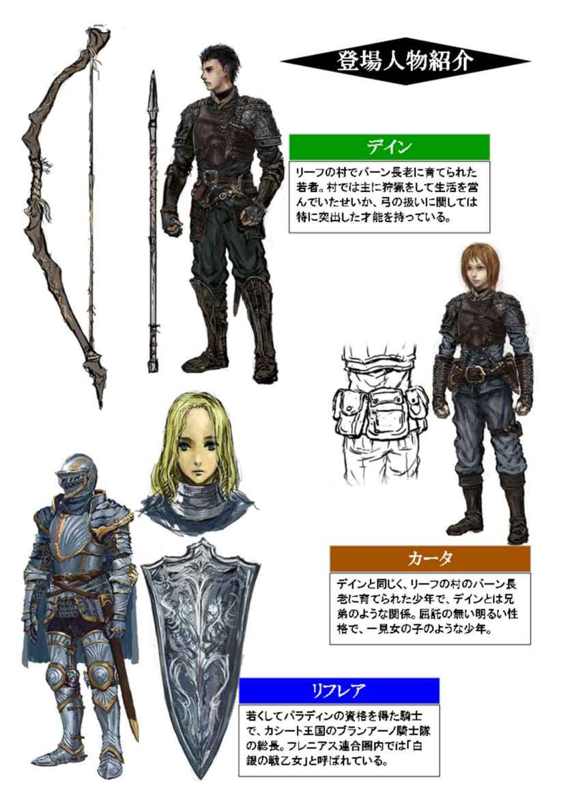
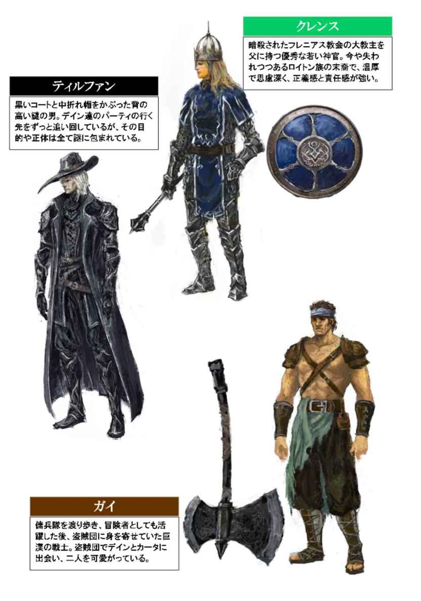
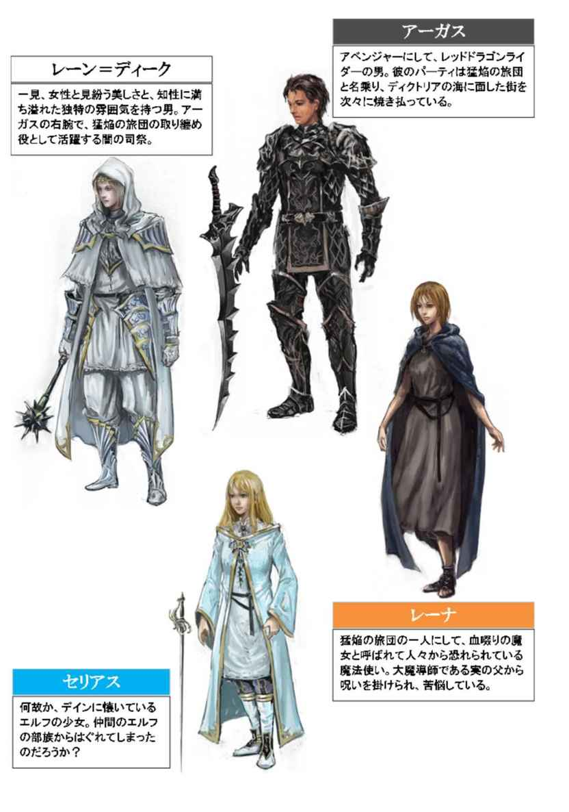
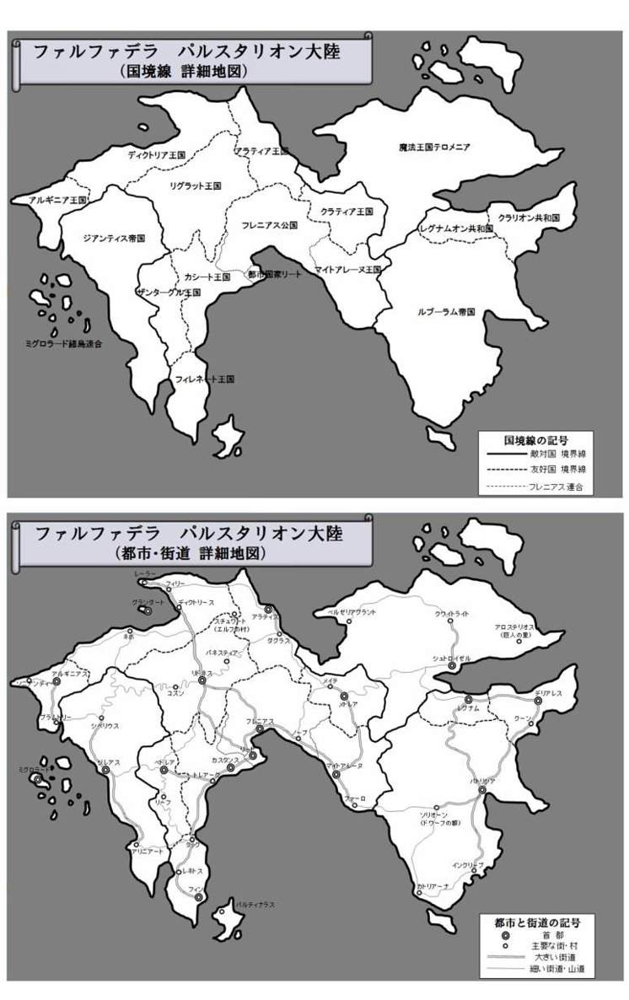
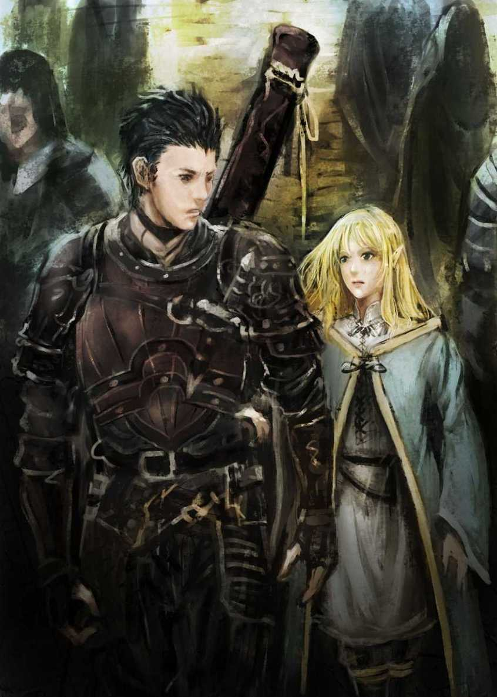
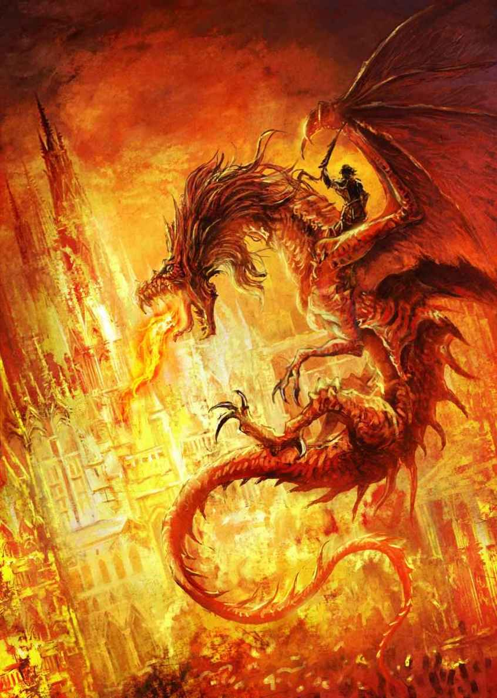
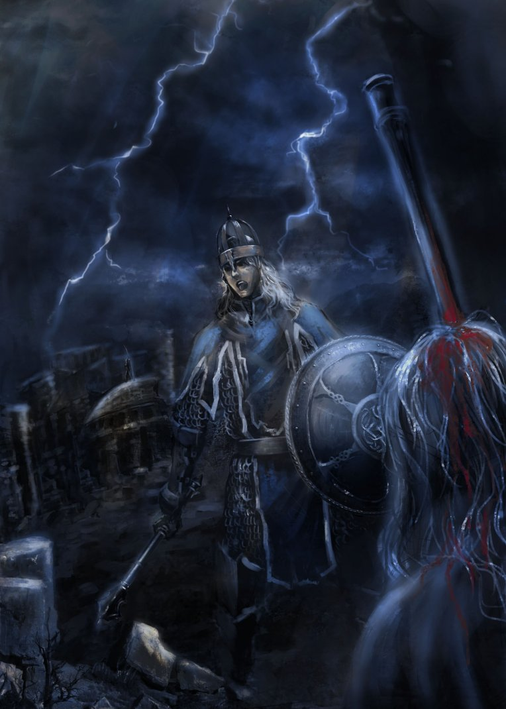
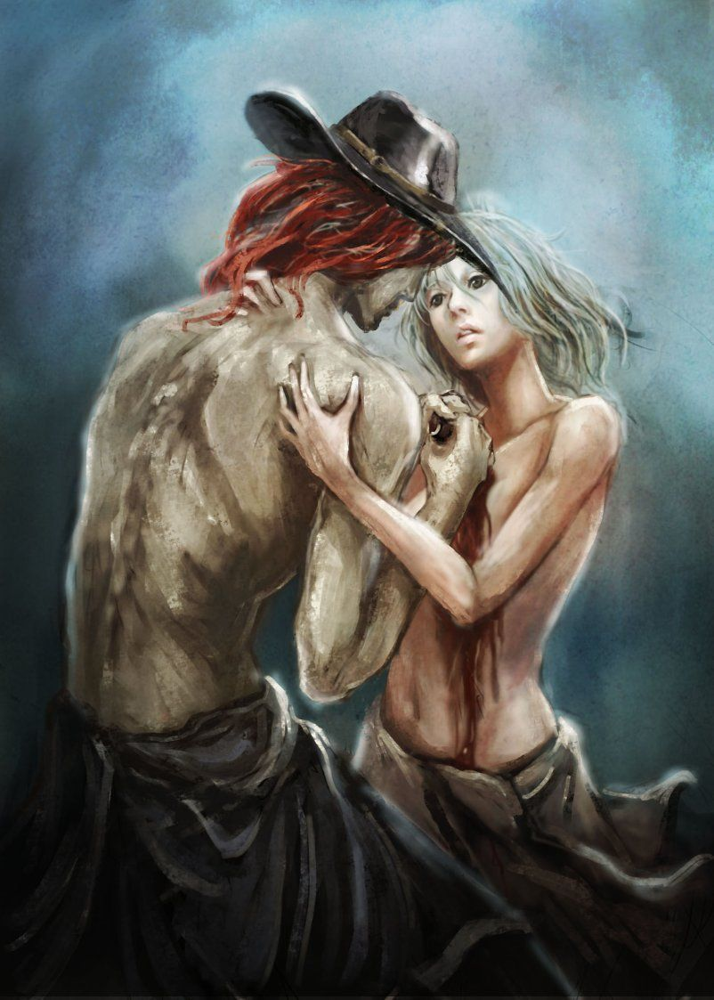

| カドルステイト物語 第三部『故郷の絆』 | |
| 守下 尚暉 | |
| pubfull (2016) | |




ひと気のない深夜の港。
岸壁に沿って並んでいる街灯と、埠頭に建てられた灯台。そして月の光に照らされた一隻の船が、今、この港に入港しようとしている。やがて船は、ゆっくりと岸壁へと近付いて、港にある大きな桟橋の一つに接舷した。そして巨大なアンカーをおろし、舷門から桟橋にタラップが架けられると、船の中から多くの乗員が次々に現れ、列をなしてゆっくりと港に降り始める。この船の乗員の多くは漁師だったが、彼等は決して沖で漁を終えてこの港に戻って来た訳ではない。しかし、漁師達の表情はみな著しく憔悴し、その目には生気が感じられなかった。
日没から既に数刻が経過し、辺りはすっかり静まり返っている。そんな深夜の時間帯にも関わらず、ディクトリア王国の王都グランダートは、うだるような蒸し暑さに包まれていた。ディクトリア王国は、領地内の離島に首都を置く珍しい国だが、その歴史はとても古く、冒険者の発祥の地とも言われている古国である。その王都グランダートは、対岸する姉妹都市、港町ディクトリースと合わせた場合の人口規模が、南の都市国家リートに匹敵し、ファルファデラの中で最も大きい都市のひとつとも言われている。
しかし、そんな離島の王都グランダートは、いま存続の危機に立たされていた。このグランダートへの玄関口とも言える姉妹都市、港町ディクトリースが忽然として焼失し、文字通りの孤島と化していたのである。遡ること二月前の夜、このグランダートの東の夜空が真っ赤に染まっていくのを、多くの市民が目撃した。その方角にあるディクトリースの異変を察知したファナー王は、状況の確認のために調査船を向かわせたが、その調査船が対岸の港町に到着した頃には、既にディクトリースは跡形もなく焼失していたのだ。北の海の玄関口だった港町は、一夜にして生存者を一人も残さぬ廃墟と化したのである。現在、ディクトリースは徐々に復興に向けて港の整備が進められているものの、ディクトリア王国は多くの犠牲者と、多大な経済的損失を被っていた。
しばらくすると、船から降りてくる漁師達の中に紛れて、一風変わった六人の集団が現れた。その六人は漁師でも無ければ、船員でも無さそうだ。なぜなら彼等は、他の漁師や船員と違い、各自思い思いの武器と防具で武装しているのだ。彼等は、冒険者のパーティだった。六人の冒険者達は、それぞれ手にしている武器を馬車の荷台に積み込むと、慎重に馬車をタラップに乗せ、ゆっくりとロープを引いて、その馬車を桟橋まで誘導し始めた。
馬車の御者台に乗った小太りの中年男性が、変に馬を刺激してしまわないよう、細心の注意を払いながらロープを引く六人のペースに合わせて馬を操っている。たっぷりと時間を掛けて桟橋を渡り切り、ようやく港の中まで馬車を滑り込ませると、暑さのためか緊張のためか、御者の男は額にかいた汗を手拭いで拭き取り、息を大きく吐き出した。この御者の名はレオナールといい、主に冒険者達の身の回りの世話を賄っている。
六人の冒険者達は馬車を港に下ろすと、その誘導に使ったロープを片付け始めた。そして馬車に積み込んだ荷物を念入りに確認し始める。六人の中から一人の男が船の方に足を進め、舷門で待つ船長らしき人物にお辞儀をしながら謝礼を渡しているようだ。その時、この暗い港に若い男の声が響き渡った。
「クレンス、荷物の確認は終わった。こっちはいつでも行ける」
その声の主は、短髪の黒髪に鋭い相貌を持った青年だった。黒い革鎧を着込んで、その鎧の胸元には一本の短剣を挿し、腰のベルトには一本の小剣を帯びている。一見、軽装の戦士か盗賊のような出で立ちだが、中でも特に目を引くのが、肩掛けしている細長い黒革袋である。その大きな袋の中には、攻城兵器と見紛う巨大な大弓が収められているのだ。その恐るべき破壊力を、ここに居合わせる冒険者達は皆よく知っていた。精悍な印象を受けるこの青年の名を、デインという。
「ボク、もう眠たいよ。さっき船に揺られながらウトウトしちゃってたもん」
栗色のサラサラな髪と、丸い瞳を持ったカータは、この冒険者達の中で最も背丈が低く、一見女の子のような可愛らしい外観で、あどけない少年を思わせる。デインと同じデザインの黒い革鎧を着ているが、その武装はデインとは大きく異なっていた。華奢な腰に太いベルトを巻き、その前面には二本の短剣、背面には小さな小物入れが多数取り付けられている。器用なカータが細かい作業をするのに必要な七つ道具が、その小物入れに詰め込まれているのだ。それらとは別に、側面のホルダーの中には、小型の短銃が収められていた。
「そうですね。船ではずっと緊張し続けていたので、少し疲れてしまいました」
高く澄んだ女の声がしたが、その声を発したのは、意外にも白銀の甲冑で全身を固めた重装備の騎士だった。ヘルムをかぶり、頭の上から完全に甲冑で全身を覆われている騎士は、その声を耳にしなければ、中身が若い女性であると気付くのは難しい。しかし、滲み出るあでやかな仕草と、気品に満ち溢れた一挙手一投足が、その厳しい甲冑姿とは相反する女性らしさを醸し出していた。彼女は貴族の娘でありながら、騎士隊の総長でもある。その名を、リフレアといった。
「ワシも、肩が凝ったぞ。追っ手を気にして、ずっと気を張ってたからな」
言いながら肩を鳴らしている巨躯の男ガイは、この冒険者の中で最年長である。肩甲のついた革ベルトを交差させただけの軽装で、その隆々とした上半身の筋肉を憚ること無く露出させた彼は、冒険者としての経験も豊富なベテランの戦士だ。分厚い革製の下衣を穿き、それを大きな革靴の靴紐で脛当てと一緒に巻き付けて固定しているが、それは防御効果を期待したものではなく、自身の動き易さに重点が置かれている。その肉体から繰り出される大斧の一撃を、まともに受けて無事な者など、そうは居ないだろう。
「皆さん、お疲れ様です。もう武装解除しても大丈夫でしょう。早く宿をとって休みましょう」
デインからクレンスと呼ばれた若い神官は、そう言って馬車の元に戻ってきた。年齢はデインより幾らか年上に見えるが、まだかなり若い。彼は、見るからに使い込まれた灰色の鎖帷子で身を固め、その上から法衣のような紺と白のサーコートを羽織っていた。頭には飾り気の少ない金属製の頭冠を深くかぶっているが、それは防具としての機能と、聖職者としての象徴を兼ね備えたものだ。刃物での殺傷を禁じられている聖職者のクレンスは、先端の広がった鉄槌を腰にぶら下げていた。
「武装解除とは笑わせる。あんなのに襲われたら、武装していようが武装していまいが、ひとたまりもなくやられてしまうのが関の山だろう」
痩せ細った身体でありながら、巨漢のガイより背の高いこの男は、自らをティルファンと名乗っているが、それが本名かどうかは分からない。彼は黒い中折れ帽をかぶり、夏だというのに暑苦しい黒いコートを羽織っていた。武器も防具も身に着けておらず、一見、一般人のようにも見えるが、実は魔法使いである。しかし、自分の素性を知らない者に、自分が魔法使いである事を知られる事を禁じるという、禍々しい呪いを受けているが為に、彼は自分が魔法使いである事を皆に隠し続けているのだ。一人に知られるたびに、一人の人間の命を贄として捧げなければならない。必要な数の贄を捧げられない時は、自分自身の命が贄となるのだ。
「ティルファン殿。それでも、無抵抗にやられてしまうよりは、抗った方が良いでしょう。神は、人に抗う術を与えて下さっているのです。例えそれが、どんなに微弱な力であったとしても、最後まで希望を捨てずに生きようとする。そんな人間の姿こそが、何よりも美しく尊いのです」
クレンスの言葉を聞くと、この蒸し暑い深夜の港の一角でさえも、一瞬で教会に早変わりしてしまう。彼が口を開くと、いつでもどこでも神の教義を聞かされているような気分になるのだ。普段はあまり気にならないが、疲れ切っている今は、クレンスの話を聞くと余計に疲れが増すような気がして、ティルファンは面倒臭くなった。そしてクレンスに反論する気も失せた彼は、宿を探す為にさっさと歩みを進めた。
「お、すぐそこに宿があるな。他を探すのも面倒だ。自分はあそこに入る」
黒いコートの男はそう宣言すると、足早にその宿に向かって歩き始める。冒険者達は、すぐ宿が見付かった事に、正直安堵していた。彼等は皆、疲労困憊の状態だったのだ。
「オレは、もう寝られればドコでもいい」
「ボクも、とにかく早く横になりたいよ」
デインの言葉にカータも同意した。いつもならとっくに床に就いているような深夜の時間帯である。
何者かの襲撃を受けて燃え上がるネボの村を、船上から目の当たりにした彼等は、そこからの追っ手を警戒して、ずっと甲板上で武装を固めて緊張状態を崩さなかった。そのせいで、冒険者達は既に体力の限界を超え、足を一歩前に進めることすら困難な程に疲労しきっていた。
それは恐るべき光景だった。ネボの漁村に停泊していた漁船の中でも、特に大きな船を持つ船長と交渉し、グランダートまで送って貰う手はずを整えた一行は、夕方にネボの港を出港した。そして一刻ほど経った日没後、薄暗くなった南側の夜空が赤く染まっていったのだ。それはまさしく、出港したばかりの漁村ネボがある方角だった。そしてその上空を舞う巨大なレッドドラゴンの姿を、デインとカータは確かに目撃し、その事実をパーティに告げていた。その緊迫した状況の中で、のんびりと船旅を楽しむ事など、彼等には到底出来なかったのだ。
冒険者達が港の近場で見付けた宿屋『逆巻く波』亭は、既に同じ漁船に乗っていた漁師や船員でごった返していた。ネボの漁村が焼失し、帰る港を失った漁師達は、冒険者をグランダートに送ってから始める予定だった漁の仕事も取り止め、そのままグランダートに避難するしかなかったのだ。宿の当直者は、嵐のように押し掛けてきた突然の宿泊客に、目を回しているようだ。既に部屋は満室で、ホールや食堂を兼ねた酒場でさえも、漁師達で溢れ返っていた。
「すいません。もう全ての部屋がいっぱいで、寝れる場所が無いんです。申し上げ難いのですが、馬小屋なら空いてます。馬小屋と言っても、今は倉庫として使われている場所なので、休むだけなら差し支えないはずです。もちろん、そんな場所でお休みになると言うのであれば、お金は頂きません。ご案内しますか？」
当直者にそう言われた冒険者達だったが、他に選択肢は無かった。今から街を歩き回って、他の宿を探す気力も体力も残されていなかったのだ。既に思考力や判断力さえ失っていた彼等は、甘んじて馬小屋での宿泊を受け入れていた。そして当直者に案内されるまま、長い廊下を抜けて一度外に出ると、コの字型になっている宿の建屋の中庭にある、小さな掘っ立て小屋に七人全員が押し込まれた。馬小屋と言っても、実際に馬が居る訳ではない。その小屋は、この時期に使わない冬用の寝具や掃除道具、中庭の手入れで使う用具類などを詰め込んだ倉庫として使われているようだ。
既に疲労がピークに達していた冒険者達は、それらを片付ける余力さえも残っていなかった。デインは朦朧とする意識の中で、黒い革鎧を脱ぎ捨て、腰の小剣を外して細長い黒革袋と一緒に床に投げ出すと、そのまま崩れるように倒れ込んで、泥のように眠りについた。
―そして夜の闇は、やがて太陽の光と入れ替わった。
蒸し暑かった。じめじめとした熱気と、汗ばんだ肌の感触を感じる。
風だろうか、何かがデインの鼻をくすぐって、彼は目を覚ました。
外はすっかり明るくなっている。昨夜の疲労感は、まだ完全にすっきりと回復していなかった。デインはその気だるさの中で、徐々に自分の意識がハッキリしていくのを感じた。さっきから風が吹き抜ける度に、鼻や頬がくすぐったくて仕方ない。馬小屋だけに、馬の尻尾だろうか。昨夜は、この小屋に馬が居るとは気付かなかったが、いま確かに目の前に、金色の長い毛並みの馬の尻尾が、風に揺られてデインの顔をくすぐっているのだ。
更に意識が鮮明になった時、デインの鼓動は大きく跳ね、そしてその脈動が少しずつ速くなっていくのを彼は知覚した。目の前にある黄金色の毛並みは、決して馬の尻尾などではなかった。それは、このパーティで唯一の女性、リフレアの頭だったのだ。
（な、なんでこんな、すぐ隣にリフレアが！）
デインは硬直したまま、身体を動かすことも出来ずにいた。よく見ると彼女は、その身体を護る白銀の全身甲冑を脱ぐ途中の姿で、そのまま力尽きたような体勢になっていた。頭や手足を護るヘルム、ガントレット、クウィス、グリーヴは外されているが、身体を護る幾つかの板金当てが、まだ帷子に装着されたままで、見るからに寝苦しそうに見える。しかし、編み込まれた鎖の帷子から、そのまま白い素肌の手足が伸びているその姿は、デインにとって刺激が強すぎた。特に、鎖で編み込まれた鉄色の服の裾から、ほんの少し覗かせて露わになった真っ白い太腿がデインの目に映ったとき、その艶めかしさに、若者の鼓動はどんどん加速されていった。気付くと、その片脚がデインの足に触れている。寝起きに感じた汗ばんだ肌の感触は、なんと彼女の脚だったのだ。
（だめだ。これじゃ、とても二度寝なんて出来ない）
デインは、まだ疲労感が残っていたので、出来るならもう一度目を閉じようと考えていたのだが、それが不可能な状態である事を自覚した。リフレアは、いつもなら使用人のレオナールが野営用のテントの膜で仕切りを作り、彼女専用のスペースを設けてそこで休んだり着替えたりするのだが、昨夜はみんな疲れ切っていたので、それどころではなかったのだ。彼女自身も、甲冑を脱ぐ途中で力尽きたその姿を見れば、既に眠気も体力も限界だった事は一目瞭然だろう。これは、不可抗力なのだ。自分は何も悪くないのだ。デインは、そう自分に言い聞かせながら、乱れた金髪の中にチラリと見える、彼女の白い素顔を覗き見ようとする。
貴族の気品と少女のあどけなさを併せ持った彼女の素顔は、美しいというありふれた形容には該当しない。美しさと可憐さ、儚さと可愛らしさ、それらの全てがそこに凝縮されているのだ。そんなリフレアの寝顔は、蒸し暑さのせいで汗ばみ、朝陽に照らされてキラキラと輝いているように見えた。
「おい、デカ坊主。そのくらいにしとけ」
突然背後から声を掛けられ、心臓が止まるような衝撃を受けたデインは、その身体全体が脊髄反射的に飛び上がるかのような錯覚に襲われた。
「な、な、なんのことだ？」
そして、声を掛けてきたガイに対して、精一杯とぼけて見せる。
「ま、そういうおトシ頃なのは分かるがな。あまり淑女の寝顔をジロジロ見るもんじゃないぞ。特にその嬢ちゃんは、寝顔を見られるのを絶対に恥ずかしがるぞ」
ガイはそう言うと、さっさと小屋から出ていった。デインは大きく息を吐き出して、呼吸を整え始める。深呼吸をして落ち着きを取り戻し始めたデインは、自分達が今置かれている状況を徐々に思い出してきた。グランダートに到着した冒険者達は、これからファナー祭にエントリーしなければならないのだ。闘技会に向けて戦闘訓練も念入りにしなければならないだろう。そういえばクレンスの姿が見当たらないが、先にどこかへ行ったのだろうか。
「えっ...デイン...さま？」
いろいろと考えを巡らせていた時、突然なんの前触れも無く、目の前の少女の青い瞳が見開かれ、デインと目が合ってしまった。デインはどうすれば良いのか分からず、そのままいつもの口調で彼女に答える。
「あぁ、起きたのか？」
あくまでいつも通りだ。自分は何も悪くはないのだ。慌てる必要など、どこにもない。しかし彼女は、汗ばんだ顔に美しい金の髪を幾本も貼り付けながら上体を起こすと、自分の周りでガチャガチャと音を立てる甲冑の部品を見て、徐々に状況を思い出し始めているようだ。そして、その真っ白い顔がみるみる内に真っ赤に染まっていく。そんな愛らしいリフレアの表情が変化する一部始終を、デインはじっと見つめ続けていた。
「...ごめんなさい。あぁ、デイン様。見ないで下さい...お願いします」
彼女は、甲冑を脱ぎかけた状態のまま力尽きた事を思い出したものの、どうする事も出来ず顔を伏せ、その細い両腕で太腿や腰回りを隠そうとしながら、慌ててデインに懇願した。そしてデインの足に触れていた、彼女の細く汗ばんだ脚も離れていく。
「あ、あぁ。すまないな」
消えてしまいそうなリフレアのか細い声を聞いたデインは、恥じらいで真っ赤になった彼女の姿を、じっと見続けていた事を素直に申し訳なく思った。そして見ないで欲しいという彼女の願いを聞き入れて、顔の向きを彼女から反対側に動かす。
「デイン様、ごめんなさい。少し、席を外して頂けませんか？ 例えこちらを向いていないと分かっていても、やっぱり恥ずかしいのです。すぐに身なりを整えますから、申し訳ありませんがしばらくの間だけ、お願いします」
デインは、彼女に言われて仕方なく立ち上がると、ガイが出て行った小屋の出口に向かって足を進めて、そのまま外に出て行った。なぜだか勿体無いことをしたような気もするが、それが何なのか、デインには明確な答えが分からないままだった。
王都グランダート。
離島の王都とも言われる、ディクトリア王国の首都である。ディクトリア王国は、その国土の大半がリグラット王国の北方に広がる森林地帯で、その広大な森の中には、今でも純粋なエルフ族が純血を守り、部族を形成していると言われている。海に面した平原地帯には人間の街が多くあり、領土内の離島には巨大な王都グランダートが築かれて、今、その王都は多くの人で賑わっていた。
ここグランダートは、世界で最初に冒険者ギルドが設立された地でもある。かつてディクトリア王国がジアンティス帝国の侵攻を受け、国内の事件など様々な諸問題に正規軍の兵を割くことが出来なくなった頃、傭兵隊よりも更に規模の小さな手練の集団を集めて対処したのが冒険者の始まりだと言われている。彼等冒険者達の活躍は目ざましく、戦争の影響で乱れ始めていた治安も、少しずつ良くなっていった。彼等は独自のコミュニティを形成し、一単位が小さい集団であるが故に、細かい問題にまで手が行き届く小回りの良さから、やがて冒険者ギルドは国が認可する正式な組織にまで昇華したのだ。
冒険者ギルドは、国や貴族から冒険者向けに依頼した仕事を、一括して請け負っている大きな組織である。それらの仕事を難易度別に整理し、冒険者達に紹介していくのだ。熟練度の高い冒険者パーティには、より難易度の高い仕事を紹介していく。勿論、難易度が高い仕事ほど危険性も高くなるが、そのぶん報酬も高額になるのだ。また、冒険者ギルドには数多くの冒険者達が登録され、彼等に出会いの場も提供している。新たな人員を募集しているパーティに対して、彼等が必要としている人材を紹介したり、全く新しいパーティの結成を手助けしたりする役割も担っていた。
そんな冒険者達が闘技会でしのぎを削り、最も優秀な冒険者パーティを決定するファナー祭は、毎年夏にここグランダートで盛大に催されている。例年この時期になると、王都グランダートの賑わいは、最高潮に達するのだ。
「俺は正義の剣士ブルー！ そこの君、俺と一緒にパーティを組んで、ファナー祭に出場してみないか？」
突然、声を掛けられデインはたじろいだ。なぜこうも、見ず知らずの人間に対して親しげに話し掛けることが出来るのだろうか。デインには到底マネできない芸当だ。
「いや、オレは間に合ってる」
デインは、ブルーと名乗った男に向けて首を横に振りながら、大通りを足早に進んでいく。
「兄ちゃんは目つきが悪いから、何となく強そうに見えるんじゃない？」
カータがそんなデインを茶化してみせた。
「強そうに見えるってだけなら、ガイの方がよっぽど強そうだろ」
デインはそれに反論する。
「何言ってんだデカ坊主。ワシはトシなんだぞ。新しいパーティを作ろうって時は、若いヤツを欲しがるに決まってんだろ。それに、強そうに見えるだけってどういう意味だ？」
ガイはそう言うと、デインの首を脇に挟んで、いつものガハハという笑い声を発した。
一行は、グランダートの中心を走る大通りを、北に向かって歩いていた。大通りと言っても、こんな大きな大通りを、デインは今までに一度も見た事が無い。道の幅が物凄く広いのだ。これは大通りと言うより、広場と言った方がイメージ的には近いかもしれない。グランダートの大通りは、王都の玄関口である港から、王城に向かって真っ直ぐ伸びて、普通の家なら十軒は入るほどの広い幅がとられていた。ファナー祭が開催されるこの時期、大通りへの馬車の侵入は全面的に禁止され、広い道幅全体を使って、人々が思い思いに闊歩しているのだ。ファナー祭の目玉である闘技会の開催が近いだけに、この大通りでは今、冒険者パーティの呼び込みが多く叫ばれているようだ。
「クラーレンス様。正直、わたしは驚きました。周辺の港町は、あのレッドドラゴンの襲撃を受けて、ことごとく廃墟になっているにも関わらず、結構人が多いですね」
リフレアは、夏らしい白いワンピース姿に麦わら帽子をかぶっているが、その細い腰には長剣を挿すことを忘れていなかった。
「そうですね。この街に集まっている冒険者の皆さんも、私達と同じように、どこからか上手く船を調達して、何とかしてグランダートに渡って来たのでしょうね。それもまた、冒険者の能力の一つと言えるかもしれません」
クレンスは、彼にとっての正装とも言える翡翠色の法衣に着替えていた。この時期に着るには少々暑苦しい格好だが、今日は王城に向かうので、最も神官らしい装いで臨んでいるのだ。
「それにしても司祭、随分冒険者パーティの募集が多く叫ばれているようだが、毎年こんな感じなのか？ こういうものは普通、自分達で事前に人数を揃えてから参加するものでは無いのか？」
ティルファンは、パーティの最後尾から先頭を歩くクレンスに向かって疑問を投げ掛けた。今、この大通りを歩いている一行は、馬車を整備しているレオナールを除いたこの六人である。
「オッサン、そのトシで結構世間知らずなんだな。それも、冒険者の醍醐味なんだぞ。その時その時で、その場に集まった冒険者達が協力し合うんだ。もちろん、長年同じメンツでパーティを組んで、練度を高めた熟練の冒険者パーティってのも多いが、その場で集まった者が力を合わせて戦うのも、よくある立派な冒険者の形のひとつなんだぞ」
「ほう、そういうものなのか」
ティルファンは、ガイの話を感心しながら聞いている。
「さぁ、そこの君も、正義の剣士ブルーのパーティに入らないか！」
その時、さっきデインに声を掛けてきた馴れ馴れしい男が、突然、黒いコートの男ティルファンに向かって呼び掛けてきた。
「すごいじゃんティルファンさん。声掛けられたよ！」
「バカ言うんじゃない。自分は一般人だ。戦いなんて出来る訳ない」
カータがそれを見てからかうように声を上げたが、ティルファンは呆れた顔をしながら、中折れ帽を深くかぶり直して顔を隠す。
この幅の広いグランダートの大通りは、リートの繁華街の大通りほどの混雑では無いにしろ、かなりの人数で満ち溢れているようだ。照りつける夏の陽射しを浴びながら、この人通りの多い道を歩いていると、否応なく汗が吹き出してしまう。そんな彼等の熱気を冷やしてくれるかの如く、そのとき突然、少し強めの風が六人の冒険者一行の後ろから吹き抜けた。
「ん？」
ふと、デインは背後に何か違和感を覚えて後ろを振り向く。隣を歩いていたカータや、前を行くクレンスとガイは気付いていないようだったが、すぐ後ろを歩いていたリフレアは、デインの異変を察知して、彼に声を掛けてきた。
「その子、誰ですか？」
リフレアの更に後ろを歩いていたティルファンは、突然立ち止まった二人にぶつかりそうになり、前を覗き見る。
「オレも、知らないんだが...」

そこには、カータと同じくらいの背丈の女の子が立っていた。ほとんど肌が露出しない水色のゆったりとしたローブのような服を着たその女の子は、デインの服の裾をギュッと握っているのだ。そしてリフレアと同じ黄金色の髪を靡かせながら、黙ったままデインをじっと見つめている。そんな女の子を後ろから見たティルファンが言った。
「珍しい。その子の耳をよく見ろ。その子、エルフだな」
ティルファンに言われて、その女の子の耳を見てみると、なるほど尖った耳をしている。リドネスからネボの漁村に向かう途中に遭遇したダークエルフと同じ耳の形状だったが、その肌の色や髪の色は全然違っていた。
「どうしたの？ 迷子になったの？」
リフレアは、その子の前に歩み寄って中腰になると、女の子と目線を合わせた。そしてやさしく声を掛けてみる。しかし、女の子は一言も声を発さない。
「お名前は？ どこから来たの？」
リフレアはそれでも、やさしく女の子に話し掛けた。
「セ...アー...レ」
女の子は、リフレアに促されるように、小さな声で何か喋ろうとしているようだ。
「なぁに？ もう一度、言ってくれる？」
リフレアは女の子の目をじっと見つめながら、もう一度問いかける。
「...セフリアース＝レイン。...あたしの名前」
エルフの女の子は、小さな声で一言そう答えた。
「セフリアース＝レイン？ セフリアース＝レインさんは、どこから来たの？」
リフレアは質問を変えたが、セフリアース＝レインと名乗った女の子は無言のままだった。
「セフリアース＝レインさんのお父様、お母様は、今どこに居るの？」
リフレアは、エルフの少女に問い掛け続ける。ちょうどその時、前を歩いていたクレンス、ガイ、カータの三人は、デイン達がついて来ていない事に気付いて、エルフの少女のところまで戻ってきていた。
「その子は？ 一体どうしたのでしょうか？」
クレンスは、そのエルフの少女を見て、驚きの表情を浮かべる。そしてしばらくした後、エルフの少女は小さな声でポツリとつぶやいた。
「...あたしを呼ぶ時は...セリアスでいい」
六人の冒険者達は、このセリアスというエルフの少女を囲むような形になっていた。カータは、自分と同じくらいの背丈のその少女が珍しいのか、彼女の周りをぐるぐると回りながら女の子を観察している。
「なんだこの子、デカ坊主の服を掴んでるぞ？」
「あぁ。なんだか分からないんだが、ずっと離さないんだ」
デインは困り果てた顔をしていた。
「この子、どうやら迷子のようです」
リフレアが事情を説明する。
「セリアス殿と言いましたね、貴女はエルフの部族からはぐれてしまったのですか？」
だいたいの事情を飲み込めてきたクレンスが、エルフの少女に質問するが、少女は黙ったままだった。
「司祭、それにしてもおかしいと思わないか？」
「何がでしょう？」
ティルファンがクレンスに疑問を投げ掛けた。
「エルフの部族っていうのは普通、他種族との接触を嫌う。その閉ざした心と同じように、エルフ族は故郷の森へと繋がる道を閉ざし、他人との接触を極力避けて、緩慢な滅びの道を歩んでいるというのが、最近の一般的な定説だ。自分の常識で考えるに、このような小さなエルフの少女が、こんな都会に居るなんて余りにも不自然すぎる」
このティルファンという男が何者なのか、クレンスは時々分からなくなる事がある。今がそうだ。彼の知識は、一般的な教養の範囲を明らかに超えているのだ。
「そうかもしれませんが、それは今、それほど重要な事では無いでしょう。いま、私達の目の前には、確かにエルフの少女が居るのです。彼女が貴重な種族の末裔であると言うのなら尚の事、彼女を助けてあげなければならないでしょう。このような都会で変な輩に拾われて、売り飛ばされたりしないように保護しなければなりません」
ティルファンは、今のクレンスの言葉を軽く聞き流していたが、クレンスにとって、この言葉の意味は重たかった。クレンス自身も、今や殆ど見られることの無くなった希少なロイトン族の末裔でもあるからだ。クレンスは、セリアスと名乗ったエルフの少女に言った。
「セリアス殿。貴女は一旦、私達が保護します。私達は、セリアス殿のご家族か、もしくは同じエルフの部族を見付け次第、貴女を引き渡すことにします。私達は丁度、グランダート城に向かうところだったので、そこで相談すれば、きっとすぐに見付かるでしょう」
そう言ってクレンスは、セリアスに一礼してみせる。極稀だが、エルフ族の中にも冒険者に身を投じる者が居ると言う。きっとセリアスは、ファナー祭に参加している冒険者のエルフの子供なのだろう。闘技会の受付でエントリーしている冒険者達の中から、エルフの冒険者を探し出せば、きっとすぐにセリアスの親族が見付かるに違いない。
「それは良いんだが、いい加減、離してくれないか」
デインは、自分の服の裾をずっと掴んで離さないエルフの少女の方を見ながら言った。
「...あなた、名前は？」
そんな時、さっきから全く口を開こうとしなかったセリアスが、ポツリとつぶやくように口を開いた。
「名乗るのが遅れて申し訳ありません。セリアス殿から見れば、名乗りもしない私達が、怪しく見えるのも仕方がないでしょう。私はクラーレンス＝フィルネシア。フレニアス教会の神官です。長い名前ですが故、どうぞお気軽にクレンスとお呼びください」
クレンスは、改まってセリアスに頭を下げた。
「オレはデイン」
「ボクの名前は、カータだよ」
「ガイだ。よろしくな、小さい嬢ちゃん」
「リフレアです。何か困った事があったら何でも言って下さい」
「ティルファンだ」
クレンスの自己紹介を受けて、みな自分の名前をセリアスに告げた。
「...セフリアース＝レイン。それが、あたしの名前。呼ぶ時は...セリアスでいい」
冒険者達に向けて、エルフの少女はもう一度小さな声で自分の名前を言った。
「では、気を取り直して王城に参りましょう」
クレンスは、状況が一段落したのを見届けて宣言すると、冒険者達一行は、大通りを再び北に向けて歩き始める。
「―デイン...」
セリアスという名のエルフの少女は、小さな声でデインの名を口ずさむと、じっと彼の顔を見上げながら、その裾を離すこと無く冒険者達と一緒に歩き始める。そんな小さな女の子の行動に、正直デインはどうすれば良いのか分からず、うろたえるばかりだった。
グランダートの城に入った一行は、その長い長い行列にまず面食らった。
「なんだこれは」
デインの呻くような声が王城の中庭に響く。田舎育ちの彼は、もともと人の多い場所が苦手なのだ。城門の外まで伸びていたその列の最後尾に並び、ようやく城門を潜って中庭に入ってみると、その行列は蛇行しながら中庭いっぱいに溢れて、そのまま王城の中まで続いていたのだ。デインは、その長い行列を見ただけで、気が遠くなるような気がして目が眩んでいた。
「...デイン。しっかりしなさい」
そのとき、デインの服をずっと握ったまま離さず、彼にくっついていたエルフの少女が、小さな声でポツリと言った。それを聞いていた一行は、一瞬の間を空けてから、ドッと笑いの渦に包み込まれる。
「兄ちゃん。この子、あまり喋らない子だなーと思ってたんだけど、実は物凄く面白い子だったんだね」
「こりゃ傑作だ。デカ坊主、この小さい嬢ちゃんよりも我慢が足りないとは、情けないぞ」
カータとガイが大笑いしたのは言うまでもない。クレンスとティルファンも笑っていた。リフレアは反対側を向いていたが、右手は口元を抑え、小刻みに肩が震えている。笑いを堪えているのは明らかだった。
みんなから笑われ、憮然とした表情になったデインは、ふと自分の服を握ったままのセリアスに目を向けてみる。すると、彼女の丸い目と視線が合ってしまった。セリアスは、ずっとデインの顔を不思議そうに見つめているのだ。
「なんだよ、オレの顔に何か付いているのか？」
デインはセリアスに聞いたが、彼女は黙ったまま、じっとデインの顔を見つめ続けている。デインは何がなんだか分からなくなってしまい、そのエルフの少女からも視線を外して外方を向いた。
―それから、どれくらい待っただろうか。
少しずつ進んでいった行列は、かなりの時間を掛けてようやく王城の中に入っていた。そしていよいよ次は、デイン達のパーティが呼び出される順番である。途方も無い長さに思えた行列だったが、一度の呼び出しにつき、大体六人程度のパーティ単位で前に進んでいくので、思ったよりも回転が早かったのだ。
「次のパーティ、入られよ」
前に設けられた木製の大きな扉が開くと、中から声が聞こえてくる。
「フレニアス教会のクラーレンス＝フィルネシア。入ります」
クレンスを先頭に、六人の冒険者達と一人のエルフの少女は、その扉の中に入っていった。中は小さな執務室のような作りで、今入ってきた入り口とは別に、正面にも同じような扉が設けられている。手続きを済ませたら、正面の扉から退出する仕組みになっているようだ。しかし、部屋の中には大きな机と束ねられた書類はあるものの、肝心な受付をする人物が見当たらない。
「何だ、誰も居ないのか？」
デインが不審に思ってつぶやくと、クレンスはかしこまった姿勢になりながら声を上げた。
「フレニアス教会から、アディーラ伯スルベイン卿の遣いとして来ました。クラーレンス＝フィルネシアです。誰も居らっしゃらないのでしょうか？」
一行は、部屋の周りをキョロキョロと見回す。すると、天井から細長いものがぶら下がったかと思うと、突然、机の上に落下してきた。その正体を見て、皆驚く。
「なんだ、このヘビは」
デイン達は咄嗟のことに身構え、リフレアは驚きの余り後ろに後ずさりしていた。そこには、一匹の白いヘビが、ウネウネと気味の悪い動きをしながら、書類の上にとぐろを巻いていたのだ。
「ほっほっほ。アディーラ伯スルベイン卿、御本人ではなく、その遣いが来たのか。また陛下がガッカリされてしまうの。まぁ、はるばるフレニアスからわざわざ来たんだから、充分に楽しんで行かれるがよかろう」
驚いたことに、その白いヘビが人間の言葉を喋っている。すると、全てを理解したのか、クレンスは落ち着き払った様子でその白いヘビに向かって一礼し始めた。しかし、他の者は何が起こっているのか分からず、ただ驚きの表情を浮かべている。
「グランダート教会のロバート司教。お変わりないご様子で、安心しました」
クレンスが一礼すると、その白いヘビは一行を見渡しながら言った。
「ほむ。当然だ。じじいは、いつでもヘビの心を忘れはせぬぞ」
ヘビがそう言った途端、そのヘビが突然姿を消し、次の瞬間、真っ白い老人が目の前に座っていた。
「じじいの名は、ロバート＝シエラ＝エンタシス＝フェリータ。グランダート教会の司教である。まぁ、名前は長いから正確に覚えなくともいいぞ。ロバートと気軽に呼ぶが良い。ほっほっほ」
ボサボサの真っ白い頭髪と、口が隠れるほど蓄えられた白い髭。そして白い眉毛の下に見開かれた細い目には、真円の小さなレンズが嵌められた独特の眼鏡が掛けられている。身に纏う衣服も、頭髪や髭と同じく真っ白だったが、それは普通の神官が身に纏うような法衣のそれでは無く、むしろ医者や研究者のような出で立ちだ。
「誰なんだ。このふざけた爺さんは」
デインは、その老人の姿を見て呆れ果てたような声を上げたが、ふと周りに目を向けてみると、パーティ皆の反応が、それぞれ余りにも違い過ぎる事に驚いていた。クレンスが頭を深く下げた状態なのは理解出来る。リフレアも、元々は教会に仕える身だ。白いワンピース姿のまま騎士礼をし、頭を低く下げていた。しかし驚いたのは、その二人に加えて巨漢の戦士ガイまで、かしこまった姿勢になっている事だ。
「あれ？ ガイさんまで？ みんな一体どうしちゃったの？」
カータも状況が飲み込めずうろたえていた。
「さぁ。自分にもよく分からないな」
ティルファンは、壁に寄りかかった体勢で、両腕を組んでその様子を冷ややかに眺めているようだ。一方、エルフの少女セリアスは、相変わらずデインの服を掴んだまま、この無愛想な若者の顔を未だに見つめ続けていた。リフレアは言う。
「わたしもさっきは、ヘビを見てつい驚いてしまいましたが、このロバート様は、ディクトリア王国を統括する、グランダート教会の司教様なのです」
リフレアが頭を上げて、デイン達に説明した。
「坊主ども、前に話しただろ。この国を治めるファナー王も、かつては冒険者だったんだ。この爺さんは、ファナー王が現役だった頃、その冒険者パーティの神官だった方だ。つまり、ワシらにとっても、冒険者の大先輩ってことだぞ」
ガイはデインに補足を加える。デインは、目の前のふざけた老人が、それ程凄い人物だという実感が湧かないまでも、周りの反応を見てなんとなくその凄さを感じていた。
「そなた等、スルベイン卿の遣いという事なら、フレニアス公国の代表ということだの。クラーレンス司祭よ。このパーティは、本戦から出場するシード枠に入れておくぞい？」
ロバートという老人は、書類に何か書き込みながら独り言のように言った。
「待って下さい、ロバート司教。私達は、つい最近、冒険者になったばかりの寄せ集めの集団です。フレニアスの代表などという大それたものでも無ければ、シード枠を貰える程の練達者でもありません」
寄せ集めの集団と聞いて、ティルファンは「違いない」と小さく漏らしながら鼻で笑っていたが、デインやガイは気に入らなかったのか、憮然とした表情になっていた。
「ご謙遜を、国を代表するパーティは全部シード枠に入れておるが故、そんな気にする事は無いぞい。それに、そなたはあのヴィーランス大教主の御子息であろう？ ヴィーランス大教主も、昔はスルベイン卿と共に活躍した偉大な冒険者である。その御子息が参加するとは、本当に楽しみな事だの。シード枠は、予選免除という大きなメリットがある割に、デメリットは非常に小さいから安心せい」
「デメリットって、なんだ？」
デインは、その言葉が気になってロバートに聞く。
「それは決まっておろうが。シード枠だったパーティが、予選から上がって来たパーティにあっさり負けでもしようものなら、代表としての国のメンツが丸潰れになるだけだぞ。どうだ？ あまり大したデメリットでもなかろうに。ほっほっほ」
「私としては、それが一番、嫌なのですが...」
クレンスは右手を額に当てて嫌そうな顔をした。もし、フレニアスの代表としてシード枠で参加し、初戦で無様に敗退などしようものなら、あのスルベイン卿から何を言われるか知れたものではない。それを思うと、クレンスは気が重たくて仕方がないのだ。
「じじいとしては、そなた等には是非、フレニアス公国の代表としてシード枠に入って欲しいんだがの。なんだかんだ言って、国を代表するパーティが居てくれた方が、観客も応援し甲斐あって、大会が大いに盛り上がるからの。それに今年は、別の事情もあっての」
ロバートはそこまで言うと、右手で顎髭を撫でながら話を続ける。
「今年は、近隣の港町が何者かの手によってことごとく燃やされおった影響か、例年と比べると少し参加国が少ないのだよ。公式に国を代表して出るパーティが少ないとなると、今度はじじいの国のメンツが立たぬのだ。ここは、このじじいの顔を立てると思って、是非フレニアス公国代表のシード枠として参加してはくれぬかの？ ほっほっほ」
ロバート司教の言い分も充分に理解できる。クレンスは完全に思い悩んでいる様子だった。そんなクレンスの後ろから、白いワンピースを着た女性が前に歩み出てくると、口を開いた。
「ロバート様。突然ですが、実は折り入ってお願いがあるのです」
リフレアはそう切り出すと、デインの後ろにくっついたままだったエルフの少女、セリアスを老人に見せる。
「この子が、グランダートの大通りで迷子になっていたのです。グランダート教会で保護して頂けませんか？ そして、この子のご親族を探して欲しいのです」
そんなリフレアの申し出を聞いたクレンスも、思い出したかのように顔を上げ、ロバートに向かって重ねて一礼しながら言った。
「そうでした。ロバート司教、この子はご覧の通り大変珍しいエルフの少女なのです。希少なエルフ族の少女が、グランダートを無警戒に歩くなど大変危険です。恐らく、ファナー祭に参加されているエルフ族の子供だと思うのですが、調べて貰えないでしょうか？」
司教は、リフレアとクレンスの申し出を聞くと、幾本もの細長い棒をどこからともなく取り出し、それを床にばら撒いて怪しげな呪文を唱え始める。
「このじじいが神の遣いなれば、其のヘビはこのじじいの遣いになりて、其は束となり神の遣い足らんとすべし。神の遣いは、ヘビにこそあり。探しだせ、其はファナー祭に参加しているエルフの冒険者なり」
すると、床にバラ撒かれた細長い棒が、全てヘビに変化して、ウネウネと机の上に登り始める。そしてそれらのヘビ達は、机に広げられた書類のページを一枚一枚丁寧にめくっていき、参加者名簿の中をくまなく探し始めた。
「兄ちゃん、ヘビが多すぎて、なんか気持ち悪いよ」
カータは、デインでさえ敢えて口に出さなかった「気持ち悪い」という単語を、素直に口に出していた。デインも正直、カータと同じ気持ちだったのは言うまでもない。
「おったぞ。エルフ族でありながら冒険者になったカーリー＝フィン＝ラースという魔法剣士。その者がリーダーを務めるパーティが、今年のファナー祭にエントリーしておる。カーリーという名の冒険者がリーダーのパーティを探してみるが良い」
それを聞いたリフレアは、拍子抜けしたような表情になり、その後すぐに老人に問い詰める。
「待って下さい、ロバート様。グランダート教会の方で一度、この子を保護しては貰えないのですか？ そして、そのカーリー様というエルフの冒険者の方に、この子を引き渡して欲しいのです」
しかし、そんなリフレアの要求に対して、老人は大きく間を空けてから反応を返した。
「...え？ なんですと？」
そしてロバートは、手を耳の後ろに当ててリフレアの方を向き、首を傾げている。
「ですから、そのカーリー様というエルフの冒険者の方は、ファナー祭にエントリーされているのですよね？ つまりその方は、またここに顔を出されるはずです。それまで、グランダート教会でこの子を預かって頂ければ、安全にご家族の方と再会出来ると思うのです」
リフレアの主張はもっともだ。エルフの少女を彼等のパーティで預かっているよりも、グランダート教会で一度保護して貰った方が、よっぽど安全である。しかし、ロバートはしばらく沈黙を続けた後、突然口を開いた。
「...えっ？ 今何か言ったかの？ どうもトシをとるといかん。最近じじいは、耳が遠くての」
リフレアが繰り返し主張したにも関わらず、ロバートは耳の後ろに手を当てたポーズのまま、リフレアに向かってもう一度首を傾げている。
「ロバート様。えっと、つまりその...わたし達が、そのカーリー様というエルフの冒険者を探した場合、すれ違ってしまう事もあると思うのです。それを考えると―」
「もういいでしょう、リフレア殿。ロバート司教は充分に協力して下さいました。一度乗り掛かった船です。私達で、そのカーリー殿というエルフの冒険者を探しましょう」
クレンスが手を横に伸ばして、リフレアの言葉を遮るように言った。
「クラーレンス様、でも...」
リフレアは不満そうだったが、クレンスは首を横に振って彼女に答えてみせる。
「もういいかの？ ルールを説明するぞい」
話が一段落したと見て、ロバートは闘技会の説明をし始めた。
「武器は自分の好きなものを使うが良い。だが、闘技場には、どんな武器で相手を斬り付けようが、鈍器や拳で叩き付けようが、一切の殺傷力を発揮せぬ特殊な魔法が掛けられておる。魔法も同様に殺傷力を発揮せぬぞ。どんなに殴られようが、強力な攻撃魔法を受けようが、その闘技場に居る限り、決して死ぬ事は無い。即ち、相手を殺す事も、自分が死ぬ事も無いのだ。安心して存分に暴れるがいい」
デインは聞きながら、驚いていた。どんな攻撃をしても相手を殺さない、逆にどんな攻撃を受けても死ぬ事がない特別な闘技場があると言うのだ。ロバートは説明を続ける。
「そなた等は、その特殊な環境で存分に戦うが良い。そして相手パーティの誰かを戦闘不能にすれば勝ちになる。逆にそなた等のパーティの誰かが戦闘不能になったら負けになる。面白そうだの。ほっほっほ」
「殺すことも、死ぬこともない空間で、どうやって、戦闘不能を判断するんだ？」
デインは率直な疑問を口にした。
「戦闘不能の判断は、攻撃を当てた時、或いは攻撃を受けた時に、数値化された耐久力を魔法で計算して判断されるぞい。重い攻撃を当てれば、相手を殺しはせぬが、内部的にはより多くのダメージを与えた事になるであろう。強力な魔法を受けても死にはせぬが、内部的には相当なダメージを受けたことになるんだぞい。こうして、ダメージを受けた者から計算された耐久力を差し引いていき、その内部的な耐久力が無くなった者が、戦闘不能と判断されるのだ。どちらかのパーティに戦闘不能者が出た時、勝敗が決するということだの」
ロバートはそこまで説明すると、机の上に広げてある紙を冒険者達に見せながら、羽ペンを差し出す。それは、ファナー祭のエントリー用紙のようだ。
「パーティは六人編成の団体戦だからの。このエントリー用紙に、参加者の名前を書くがいい。ポイントは、何と言っても六人の内の誰かが戦闘不能になっただけで、そのパーティは敗退になるところだの。仲間を互いに護り合いながら、しっかりと奮闘するがいい。期待しておるぞ。ほっほっほ」
ロバートが差し出したエントリー用紙には、パーティ毎に六人の参加者を書く欄があった。
「ねぇ、ちょっと待ってよ。六人って」
「おい優等生、もしかしてワシら、人数が足りないんじゃないのか？」
カータとガイが、ロバートの話と差し出された用紙を見て素朴な疑問を口にする。
「六人パーティだって？ クレンス、どうするんだ」
「皆さん、実は私も、これは想定していませんでした。...困りましたね」
クレンスも頭を抱えている。彼はもともと、ファナー祭に参加する事に消極的だったが、それでもアディーラ騎士隊の総長であるスルベイン卿から頼まれた手前、参加せずに帰る訳にもいかないのだ。スルベイン卿は言っていた。
（ファナー公が、相も変わらず私に来いとうるさくてな。だが、私は忙しい。そこでクレンス、お前が私の代わりに出てやってくれ。どうせ北を目指す事になるのだろう？ 別に負けてもいい。奴に一言よろしく言ってくれれば、それでな）
（何をおっしゃいます、スルベイン卿。そのような事、私には無理だと分かるでしょう）
（忘れるな、クレンス。これは重要な外交でもあるのだ）
クレンスというこの神官は、誰よりも真面目で責任感が強い。例えそれが、スルベイン卿の気紛れによるお遣いであったとしても、無下にする事など出来ないのだ。
そんなクレンスの心配を汲み取ったのか、リフレアが今この場に居るメンバーの人数を人差し指を使って数え始めた。デイン、カータ、ガイ、クレンス、リフレアで五人。そしてその指がティルファンを差した時、彼は口を開いた。
「おいおい待ってくれよ。まさか女騎士、自分を数に入れてるんじゃないだろうな？ 自分は一般人だ。闘技会で戦いなんて、とても出来る訳がない」
黒いコートの男は、両手を上げたポーズをとりながら、首を小刻みに横に振ってファナー祭へのエントリーを全力で拒否していた。
ティルファンは、冒険者達に明かしてはいないものの、実は魔法使いである。しかし、忌まわしい呪いによって、自身の素性を知らない者に、自分が魔法使いである事を知られてはならない。一人に知られるたびに、一人の人間の命を贄として捧げなければならないのだ。多くの人間に知られれば、それだけ多くの人間の命が贄として必要になってしまう。必要な贄の数は、指に刻まれるヒビ割れのような傷となって現れる。もし闘技会のような多くの観衆の前で魔法を使ってしまうと、自分の指は一体どうなってしまうのだろうか。ティルファンは一度経験している。その傷一本でさえ、とてつもない激痛だった。そして必要な数の贄を捧げられない場合は、自分自身の命が贄となるのだ。
リフレアは、ティルファンを差している人差し指を宙に浮かせたまま、考えを巡らせる。宿に戻れば、馬車を整備している使用人のレオナールが居るが、あの小太りの中年男性が闘技会で戦うなど、天と地がひっくり返っても絶対に無理だろう。もともと彼は、リフレアの生家であるブランアーの家の屋敷に仕える使用人なのだ。彼に戦闘など不可能だという事は、リフレアが一番よく知っていた。
そんな時、下がり掛けていたそのリフレアの人差し指を、何者かがギュッと握って動かす力が働いた。誰かに指を握られて驚いたリフレアは、それが誰なのかを確認する。そしてその姿を見た時、驚きを通り越して、思わず驚愕の声を上げていた。
「えっと、どういうことですか？ セリアス様？」
人数を数えていたリフレアの指を握ったのは、エルフの少女セリアスだった。しかも、その指の先端を自分自身にピタッと止めて向けているのだ。
「...あたし、戦える」
セリアスは、ポツリと小さな声で言った。
「ちょっとセリアス様、何を言っているのですか？」
「あんた、どういうつもりだ？」
リフレアとデインが、そんなセリアスを咎めるように問いただす。最初は冗談かとも思ったが、どう見てもセリアスの表情は本気のそれに見える。
「セリアス殿。これは危険な闘技会です。死なないとは言え、私達は貴女を護りきれないでしょう」
「そうだぞ、小さい嬢ちゃん。別にワシ等は、遊ぶ訳じゃないんだぞ」
身体の大きな四人に囲まれるように言いくるめられていたセリアスだったが、ふと、自分と同じくらいの背丈の一人の少年を指差しながら言った。
「...カータも、戦う？」
セリアスは、カータを指差してポツリと小さな声で質問する。
「う、うん。ボクも戦うよ。あんまり戦いは、得意じゃないんだけどね」
カータは、自分と同じくらいの背丈の女の子に指差されて、ドギマギしながら答えた。
「カータ戦う。カータとあたし、あまり変わらない。...あたし、戦える」
やはり、このエルフの少女は本気でエントリーするつもりのようだ。
「しかし、セリアス殿。いくら何でも危険です。それに貴女には、このような場に出るよりも、優先すべき事があるでしょう。一刻も早く、ご家族やエルフ族の仲間を探さないと、きっとセリアス殿の身内の方は、今ごろ貴女を探して心配されている事でしょう」
クレンスは、そんなセリアスに言い聞かせるように宥めた。しかし、セリアスは頑なに言うことを聞こうとしない。
「...大丈夫。あたし、魔法使える。あたし強い。それに闘技会、出れば目立つ。あたしの身内、もし本当に居るのなら、あたし見付け易い。早く、あたしを見つけて欲しい」
まったく言うことを聞こうとしないセリアスというエルフの少女に、クレンスは頭を抱えていた。しかしこの時は、彼女の言葉の本当の意味を理解した者など、誰一人として居なかった。
離島の王都グランダートは、幅の広い大通りが、王城から港まで真っ直ぐに伸びている大きな街だ。この大通りの王城寄りには、城の手前の左右に大きな建造物が二つあった。その二つの建造物が、このファナー祭で使われる闘技会の会場である。普段は正規軍の錬兵場として使われ、時には教会の式典がここで開かれる事もある。或いは民衆の娯楽施設として用いられたり、流行り競技とその勝敗を賭ける賭博場に早変わりしたり、ファナー祭以外にも大きな祭りや催し物が、ここで頻繁に行われているのだ。
予選は、参加した冒険者パーティの中から四組のパーティが同時に戦い、最後まで戦闘不能者を出さなかったパーティのみが突破するという過酷なものだった。この予選は、約二週間の期間を掛けて繰り広げられ、最終的にシード枠を含む十六パーティによるトーナメント方式の本戦が行われる事になるのだ。デイン達のパーティは、アディーラ騎士隊の総長であるスルベイン卿からの紹介だった為、フレニアス公国代表のパーティという肩書きの元、シード枠になってこの予選を免除されている。
予選期間の間、デイン達は毎日のように闘技場の空き時間を利用して、綿密に戦闘訓練を行っていた。
「警戒するべきは、相手パーティの弓使いや魔法使いなど、離れた位置から攻撃を仕掛けてくる者になります。彼等は一般的に耐久力が低いはずなので、攻撃を受ける前に彼等を集中攻撃できれば、簡単に勝つ事が出来るでしょう。しかし十中八九、相手パーティの盾がその前に立ちはだかる事になります」
相変わらず、このパーティの実質的リーダーであるクレンスが中心になって、細かい指示を飛ばしている。パーティは前衛と後衛に分かれて、皆クレンスの指示を真剣に聞いていた。
「通常、盾役を務める者は防御力や耐久力が高く、彼等を崩すのは至難の業になるでしょう。しかし、あえて相手パーティの盾を集中的に攻撃して崩す方が、有効になる場面もあるかもしれません」
「それは例えば、どういう場面だ？」
クレンスの話に疑問を感じたデインが質問する。ファナー祭への出場に対して、当初乗り気でなかったクレンスも、スルベイン卿からのプレッシャーを感じてか、いつも以上に説明にも熱が入っているようだ。
「例えば、相手パーティに神官などの回復役が居ない場合、盾のダメージは徐々に蓄積されていく事になります。この場合、離れた位置で過剰に護られている後衛よりも、僅かなダメージしか与えられない盾を継続的に攻撃した方が、結果的に早く相手パーティを崩すことに繋がるでしょう。他にも、防御魔法などで後衛の護りが堅固すぎる場合、あえてターゲットを盾に絞った方が良い事もあるでしょう」
デインは、彼の説明に納得して大きく頷く。クレンスの説明には、妙な説得力があった。彼が間違った指示を出したり、状況判断を誤ったりするのを、まだ誰も見たことが無い。
「ターゲットの指示は、より多く相手の攻撃に晒される事になるリフレア殿が決定して下さい。皆さんは、彼女が剣で指し示した相手を狙いましょう。彼女がターゲットを指示できない状況下においては、私が指示します。皆さんは、私とリフレア殿の、こういった指示やサインを見逃さないように注意して下さい」
クレンスの指示を受けて、リフレアが剣先を様々な方向に向ける練習をし始める。自分が迷っていると、それを見たメンバーも一緒に迷ってしまう。指定したターゲットをメンバー全員が分かり易く感じ取れるよう、伸ばした剣先をピタッと止めるように繰り返し練習を重ねていた。
「逆に、私達のパーティの中でも、デイン殿、カータ殿、そしてセリアス殿が、相手パーティから集中攻撃を受けた場合は、非常に危険な状態に陥るでしょう。基本的に相手の攻撃は、私とリフレア殿が盾となって凌ぐ事になりますが、状況によってはガイ殿も、一度攻撃の手を止めて盾として立ち塞がる必要に迫られるかもしれません。これは特に指示は出しませんが、ガイ殿が独自に判断して、攻守をバランスよく切り替えて下さい」
結局、エルフの少女セリアスを含む、六人のパーティでエントリーする事になったが、セリアスは基本的に後ろに下がって動かなくても良いという指示をクレンスから受けていた。そんな彼等の戦闘訓練を、セリアスはティルファン、レオナールらと共に隅っこから眺めている。
レオナールは、予選が行われている間、カーリーという名のエルフの冒険者を探し出し、彼の姿を見付けたものの、予選に参加中の冒険者と観衆席の一般人とでは距離が遠すぎて、未だに話し掛けられずにいた。幸い、レオナールの情報によると、カーリーのパーティは予選を突破したという。明後日から始まる本戦に出れば、否応なく目立つ事になるだろう。焦らずとも、セリアスは近いうちエルフの部族と合流出来そうだ。
―静まり返った夜の王都グランダート。
港に近い大通りに面した宿『逆巻く波』亭は、今、多くの宿泊客を迎えて満室になっていた。半月前の深夜、この宿に突如押し寄せた漁師達の姿は、もう一人も見えなくなっていたが、代わりに多くの冒険者達や観光客で溢れ返っていたのだ。宿の主人の話によると、デイン達をグランダートに送り届けてくれた漁師達は、その多くが親族の埋葬や村の復興のために、自分達の故郷であるネボに戻ったという。突然のレッドドラゴンの襲撃に見舞われたネボの漁村。当初、その理不尽な破壊と身内の不幸を受け入れられなかった彼等も、徐々に気持ちの整理を付け、前に向かって歩み始めているのだ。彼等にとっては、冒険者の祭典であるファナー祭を楽しむ事よりも、目の前の生活の事の方が何よりも重要なのは言うまでもない。
デイン達のパーティは今、馬小屋では無く、ちゃんとした大部屋に部屋をとって床に就いていた。明日はいよいよ本戦当日である。デインは連日の訓練の疲労を身体で感じながら寝床で横になり、薄い布に包まって目を閉じてみたものの、どうしても気持ちが昂ぶってしまい、なかなか寝付けずにいた。そしてふと上体を起こしてみると、隣で静かに寝息を立てているカータの更に向こう、二つ離れた寝床でいつも寝ているはずの神官の姿が見当たらないことに気が付いた。
ガイとレオナールの大きないびきで寝苦しかったのだろうか？ デインは、いつも冷静なクレンスが、まさか自分と同じように大会前日の緊張の影響で寝付けない事があろうなどとは、想像だにしていなかった。そして彼はゆっくりと立ち上がる。疲労感を残している身体は、明らかに睡眠を欲しているのが分かるのに、気持ちがそれをなかなか受け入れようとしないのだ。
デインは一度、この大部屋から廊下に出ると、熱せられた心を冷やすため、締め切られていた廊下の窓を開け放った。そしてその窓枠に肘をつきながら顔を外に出し、夏風を浴びて涼み始める。その途端、何かを振り回すような風切音が、断続的に彼の耳に聞こえてきた。その音の中に、鉄が軋むような音も時折混じって聞こえてくる。この宿の中庭にある馬小屋の裏側で、鎖帷子に身を包んだ神官が、まるで円舞をするかのように鉄槌を振るい、円盾を構えている姿がそこにあったのだ。
円盾の表面に槌の先端を擦るように当て、その直後に槌の柄を盾の表面と裏面に素早く当てるサインを出すクレンス。それは、いまデイン達が猛練習している近接と遠隔の複合攻撃を指示するものである。クレンスは、槌を振ったり盾を構えたりする動作の中に、そういった様々なサインを入れ込む練習をしているのだ。そんな彼の姿に、デインは何か不思議な気持ちが湧き上がってくるのを感じたが、それが一体何であるのかまで、今のデインには分からなかった。
「デイン様、もうかなり遅いです。そろそろ、お休みになられた方が...」
その時、不意に背後から高い女の声が聞こえてきて、デインは思わず驚いた猫のように小さく飛び跳ねてしまっていた。
「あ...ごめんなさい、驚かしてしまいましたね...」
そんなデインの反応を予想できていなかったのか、とても申し訳なさそうな声を出すリフレア。デインは振り返って、自分を気遣ってくれている人物の姿を確認すると、その表情を見て、逆に彼女の事を気遣わずにはいられなくなった。
「リフレア、どうしたんだ？ こんな時間に、大丈夫か？」
「はい、外には出ていないので大丈夫です。なかなか寝付けなくて、つい、廊下を出歩いてしまいました。ご心配をお掛けしてごめんなさい」
青白く薄い夏用の衣服に身を包んだ彼女の表情は、誰の目から見ても明らかにそれと分かる不安に満ち溢れていた。このときデインは初めて悟る。明日の本戦を控えて気持ちが昂ぶっているのは、自分だけでは無いのだ。いつもなら皆、床に就いて眠っている時間帯である。こんな時間に廊下を出歩くリフレアも、きっと同じ思いに違いない。そして、未だに中庭で訓練を続けているクレンスも、もしかしたらそうなのかもしれない。そう思った時、デインは何故か不思議なことに、安心感のようなものが心の奥から湧いてきていた。
「別に謝ることじゃない。オレだって同じなんだ。オレは今、やっと分かった気がする」
「何が分かったのですか？」
リフレアは不安そうな目をしたままデイン聞き返す。
「前にガイが言ってたんだ。自分の突出した能力で仲間を補い、自分の苦手な要素を仲間の突出した能力で補う。そうやって一人では補い切れない要素をお互いに補い合える集団は、時に物凄い力を発揮できるって」
「...はい」
それは、盗賊団に居た頃、ガイが何度もデインとカータに言って聞かせていた言葉だった。
「今なら、それがよく分かるような気がするんだ。オレは防御がからきし駄目で、敵に接近されて逃げ出した挙句、背中を斬られてしまった事もあった。でも、リフレアに護られてると思えば、安心できるような気がする。それと同じように、あそこで必死になって練習してるクレンスを見ていると、オレは安心してクレンスにリーダーを任せられる。そんな気がしたんだ」
「...はい、そうですね。わたしも、そう思います」
リフレアは、デインの言葉に大きく頷いてみせる。デインの言葉には、不安を吹き飛ばす魔力でも備わっているのだろうか。いつの間にかリフレアの顔から不安の色が消え去り、彼女は自然な微笑みをデインに向けていた。決して全ての不安が払拭された訳ではない。だが、デインの言葉を聞いた今、彼女は自分がやるべき事が何であるかを、ハッキリと思い描くことが出来るようになっていたのだ。
―そして、本戦当日。
いよいよファナー祭の本戦が始まった。
「フレニアス公国、代表のクラーレンス様のパーティの方、どうぞ闘技場にお入り下さい」
参加者用の控え通路に居たデイン達のパーティは、係員に声を掛けられ、緊張した面持ちを隠せないまま、闘技場の中に入っていく。それと同時に、最強の冒険者誕生の瞬間をひと目見ようと観衆席に詰め掛けた、大勢の観客の歓声が一斉に沸き起こった。
神官のクレンスは、鉄製の槌と円盾で武装し、鎖帷子の上から法衣のようなサーコートを羽織っている。パラディンのリフレアは、いつもの全身甲冑姿に長剣と長方盾を装備していた。戦士のガイは、上半身の筋肉を露出させたハーネスに肩甲を付け、その手には柄の長い巨大な大斧が握られている。盗賊のカータは、刃の大きな短剣を逆手に持って構えていた。弓使いのデインは、攻城兵器のような背丈ほどの大きさの大弓を持っているので、遠目から見ても目立つ。そしてそのデインの後ろには、水色のローブのような衣服を着た魔法使い（？）のセリアスが立っていた。
既に、相手パーティの六人は入場を終え、整列して待っているようだ。相手パーティは、先日グランダートの大通りでパーティを募集していた剣士風の若者ブルーのパーティだ。リーダーである剣士ブルーの他には、上半身剥き出しの筋肉男、背中の曲がった壮年の盗賊風の男、槍で武装した細身の男、そして魔法使い風の女二人の構成だった。魔法使い風の二人は、赤いローブの女と黄緑色のローブの女が居る。
フレニアス公国代表の扱いになってしまった事を、正直重苦しく感じていたクレンスは、疲れ切ったような表情を隠せない。観衆席では本戦に出場する十六組のパーティの中から、優勝するパーティを占う賭けも行われているようだ。レオナールの情報によれば、デイン達のパーティは八番人気だという。正直、微妙なラインだった。それほど高い期待を受けている訳では無い。しかし、フレニアス代表というシード枠である以上、それなりに要注意と周りから注目されているのだ。
闘技場は円形で、円周に沿った少し内側の位置に、一定間隔で合計十二本の大きな柱が立っていた。隠匿行動を得意とする盗賊タイプの冒険者や、デインのような弓使い、或いは魔法使いなどが、この柱の陰に隠れて戦う事が出来るようになっているのだ。観衆席の最前列には、一匹の白いヘビがウネウネと動きながら、入場してきたパーティを見据えていた。それが、この国の司教である事を、デイン達は既に知っている。
やがて、観衆席の後ろ最上段に設けられた銅鑼が鳴ると、両パーティは共に闘技場の前に横一列に並んで向かい合い、リーダー同士が一歩前に歩み出る。
「俺は正義の剣士ブルー！ 今日はお互い、悔いの無いように正々堂々戦おう！」
「私は、フレニアス教会のクラーレンス＝フィルネシアです。お互い頑張りましょう」
相手パーティのリーダーと、デイン達のパーティのリーダーであるクレンスが握手を交わした。
「なんだ、『壊し屋ガイ』じゃないか。お前、まだ冒険者やっていたのか」
相手パーティの中に居た、筋肉質で体格の良い男が、突然ガイに話し掛けてくる。
「テメェ、まさかアキシアなのか？ テメェこそ、まだこんなトコで野良パーティやっていたのかよ、いいトシこいてよくやるな」
ガイとそのアキシアと呼ばれた男は、どうやら古い知り合いのようだ。
「ふっ『壊し屋ガイ』、昔お前とファナー祭に出場した時は、予選落ちだったからな。今回、俺は本戦に上がれた。つまり昔の予選敗退は『壊し屋ガイ』、お前のせいだったんだな」
「抜かせアキシア。あれはワシのせいじゃないぞ、先走ったテメェのせいだ。どっちにしろ、この勝負で白黒はっきりつくだろう。手加減はしないぞ」
男の挑発に、ガイも挑発で応じる。
「ねぇ、兄ちゃん。あの人、どっかで見たことあるよ。誰だっけ」
その時、相手パーティの中に、見覚えのある人物を見付けたカータが、デインに耳打ちした。デインは、カータの指差した男を見る。
「あぁ、あれは確か...」
デインは、その男を見て自分の記憶の中を探り、そしてすぐに思い出した。引き締まった細身の身体と、手に持った細長い槍。その男は、リーフ解放戦に傭兵隊としてデインとカータが参加した時、所属していた傭兵隊『貫く双槍』で副隊長を務めていた槍使い、グレイだったのだ。その武器は、当時彼が使っていた騎乗用の長槍ではなく、地上での扱いを考慮した短い槍に持ち替えられているが間違いない。彼は、赤いローブを纏った魔法使い風の女と、何か話し込んでいるようだ。
両パーティによる睨み合いが続いていた中、観衆席の最前列に居た白いヘビが、ウネウネと闘技場の真ん中に這い進んでくると、宣言した。
「ほっほっほ。では、両パーティとも、戦いの準備をなされよ」
ロバートの声を合図に、お互いのパーティは距離を離し始める。そして闘技場内に引かれている開始時の設定ラインまで、両パーティは共に下がっていった。デインは更にその後ろに下がり、立ち並ぶ柱の裏にその身体を隠す。ふと気付くと、カータも姿が見えなくなっていた。しかし、それらの条件は相手パーティにしても同じことだ。早速、ブルーのパーティに居た背中の曲がった盗賊風の男が見えなくなっている。一方、相手パーティの魔法使い風の女は、二人ともかなり後方まで離れてはいるものの、その姿は晒したままだった。
そして、闘技会の開始を知らせる銅鑼が鳴り響く。
「俺は、正義の剣士ブルーだ！ リーダーのクラーレンス司祭、覚悟しろ！」
相手パーティのリーダーである剣士ブルーは、律儀に剣を前に構えてもう一度自分の名を高々と宣言すると、クレンスに向かって斬り掛かってきた。ブルーの動きに合わせて、アキシアと呼ばれていた筋肉男も、一緒にクレンスに襲い掛かる。丁度そのタイミングで、どこからか甲高い銃声が響き渡った。それが、カータの空砲による合図である事を、クレンス達は事前に打ち合わせている。
状況を見てとったリフレアは、素早くクレンスと共に盾を構えて護りを固めた。ブルーという剣士は長剣を振り回し、アキシアという男はその拳を突き出し、クレンスに向かって何度も何度も連続的に攻撃を繰り出してくる。その攻撃をクレンスは円盾で、リフレアは長方盾で凌ぎながら、二人は素早くパーティにサインを出した。
ターゲットは後方に居る二人の女魔法使い。サインは遠隔攻撃指示だ。
クレンスは、正直面食らっていた。盾役である自分に、真正面から攻撃を仕掛けてきたその無鉄砲とも言える二人の猛攻に、何か深い考えがあるかもしれないと思ったからだ。普通では考え難いことだが、しかしクレンスは盾役でありながら神官でもある。回復能力のある神官から叩くという観点から見れば、それはよくある作戦で、充分に有り得る事だ。しかし、そこまでこのブルーという剣士が考えているかどうかは、定かではない。
デインは、あらかじめ準備しておいた大弓を思いっ切り地面に突き立てた。固い闘技場の地面には、あまり大弓の下部がしっかりと突き刺さらないので、足で力強く踏み込んで固定する必要がある。そしてゆっくりと息を吸い込みながら、まるで槍のように巨大な矢を、その弦に番え始めた。彼が見据えるその先には、黄緑色のローブを纏って何か詠唱を始めている女魔法使いが居た。恐らく彼女は、充分に安全な距離を開けて詠唱をしているつもりだろう。しかし、そこはデインにとって、射程範囲の中だった。
そして狙いが定まって、いよいよ矢を解き放とうとしたその瞬間。
デインが身を潜めている大きな柱に、軽い金属音のような乾いた音が響いて、彼の集中力が削がれた。何かと思って見てみると、そこには幾本かの短矢が刺さっている。クロスボウのボルトのようだ。魔法使いを遠目から狙撃しようとするデインを、邪魔する者がいるのだ。
（誰だ？ どこだ？）
デインは自分がどこかから狙撃されている事を悟って、辺りを見回す。その時一瞬だが、デインから幾本か離れた位置にある柱の物陰に、何者かがスッと隠れて行くのが見えた。恐らく、相手パーティに居た背中の曲がった盗賊に違いない。
デインは、自身の狙撃位置を見破られた事を悟り、自分の身を隠す柱と狙撃地点の変更を試みようとした。それと同時に、どこからかまた銃声が響き渡る。
クレンスは、剣士と格闘家の二人の攻撃を必死に受けてくれているリフレアの斜め後方に立ちながら、出来るだけ彼女の負担を軽減させようと、自らも盾を積極的に出して防御行動を取っていた。ガイは、リフレアとクレンスが構える二枚の盾の背後から、大斧の長い柄を使って牽制攻撃を繰り出し、相手の攻撃のリズムを崩そうとしてくれている。しかし、相手パーティの二人の前衛は、休むこと無く強烈な猛攻を続けてくる。この勢いそのままに、一気に盾を崩すのが、どうやらブルーの狙いであり、彼等の必勝パターンであるように見受けられた。そして銃声を聞いていたクレンスは、素早くサインを出す。
ターゲットはそのままで、サインは近接攻撃指示だ。
「おりゃあ！」
ガイが雄叫びを上げながら闘技場を走りこみ、瞬く間に相手の陣内に侵入していくと、赤いローブを纏った女魔法使いに対してその大斧を振り上げた。そのガイと、女魔法使いとの間に、槍を持った細身の男グレイが割り込む。細い槍では、ガイの大斧の重い一撃をとても受け切れないが、その振り下ろされる軌道を曲げることなら出来る。振り下ろされたガイの大斧は、大きな地響きと振動を立てながら、赤いローブの女魔法使いの横の地面を粉砕していた。そこにカータが突如現れ、赤い女魔法使いに短剣を伸ばしたが、これも槍使いグレイによって弾かれ、なかなか近接攻撃を魔法使いに当てる事が出来ずにいた。
デインは二射目の準備が完了し、遠隔攻撃指示は無いものの、次の矢を番えて黄緑色の女魔法使いに狙いを絞っていた。そして発射しようとしたその矢先、またデインが身を潜めている柱にクロスボウボルトが突き刺さり、彼の集中力を大きく削いだ。これでは、いつまで経っても、女魔法使いに攻撃が出来ない。
そうこうしている内にも、二人の女魔法使いの詠唱は、着々と進んでいるようだ。どんな魔法を詠唱しているのか分からないが、いつ彼女達の詠唱が完成してもおかしくない。それを考えた時、デインの額に一筋の冷や汗が流れていくのを、彼は知覚した。そしてふと、後ろでずっと何か独り言のような言葉をつぶやき続けているエルフの少女の姿が、デインの目に留まったその時だった。
「なんだアレは！」
その時、ガイの叫び声が聞こえた。
デインがずっと狙撃しようと狙っていた、あの黄緑色のローブを着た女の詠唱が完成したようだ。彼女の背後の土が盛り上がり、砂煙を巻き上げながら、大きな一つの塊を形作ろうとしている。やがてそれは、巨大な土で出来たトカゲの形を形成し始めた。黄緑色のローブを着た女は、精神集中を続けながら、その巨大生物を操っているようだ。土で出来たその大トカゲは、ゆっくりと前に歩みを進め、剣士ブルーと格闘家アキシアが猛攻を仕掛けているクレンスに向かって、少しずつにじり寄っていくのだ。
「まずいですね！ この二人の猛攻に加えて、あの土で出来た大トカゲの攻撃まで、さすがに受け切れる自信が私にはありません！」
一緒に攻撃を凌いでくれている隣の騎士に向かって、クレンスは珍しく弱音を吐いた。
「クラーレンス様！ それでも無抵抗にやられてしまうよりは、最後まで希望を捨てずに抗おうとする！ そんな人間の姿こそが、何よりも美しく尊いのでしたよね？」
リフレアは、この状況下にありながらも、そんなクレンスを励ました。それはクレンスが、グランダートの港に到着した直後、ティルファンに向けて言っていた言葉だ。
「もちろん、その通りです、リフレア殿！」
クレンスが、そっとリフレアに微笑み掛けた丁度その時、赤いローブを着た女の魔法使いの頭上に、巨大な炎の渦が吹き上がっていくのが見えた。赤いローブを着た女の詠唱も、どうやら完成したようだ。その炎の渦に、デイン、カータ、そしてリフレアの三人は見覚えがあった。リーフ解放戦で、ゲージという帝国の総督が放とうとしていた、恐るべき炎の魔法である。
「おい、ちょっと待て、ミウ！」
「え、ミウ？」
しかし、なにやら様子がおかしい。赤いローブの女魔法使いが作り出した炎の渦を見て、ブルー側のパーティからも、悲鳴のような声が上がっているのだ。
「ま、まて、ミウ！ うわー！」
そして炎の渦は全てを巻き込みながら放たれた。ミウと呼ばれた赤いローブの魔法使いの真正面に居た細身の槍使いグレイ、そしてそのすぐ近くに居たガイとカータも巻き込まれる。炎の渦は留まることなくそこから直進し、黄緑色の魔法使いが召喚した土トカゲをも包み込み、更にその先に居るブルーとアキシア。そしてクレンスとリフレアをも飲み込んだ。
炎に巻き込まれなかったデインと、そして相手パーティの黄緑色の女魔法使い、更に背中の曲がった盗賊は、呆然とした表情でその光景を見つめていた。次の瞬間、真っ白いヘビが闘技場の中心に現れて宣言する。
「勝負あり！」
見ると、炎に巻き込まれたはずのガイ、カータ、クレンス、リフレアは、不思議な事に一切ダメージを受けていないようだ。そしてブルーに向けて振り下ろされたクレンスの槌とリフレアの長剣が、炎に飲み込まれて動きが止まったブルーに触れたその瞬間、勝負は決していた。炎の渦に巻き込まれたグレイ、アキシア、そしてブルーは、その場に倒れ込んでいたが、彼等の身体には焦げ跡や刀傷などは見当たらない。確かなダメージを受けているように見受けられるものの、不思議なことに一切怪我は負っていなかった。
「リフレア殿。どうやら私は、貴女に助けられたようです。最後まで諦めずに槌を振り抜いてなければ、この勝利は無かったでしょう」
クレンスは、隣に立つ女騎士に一礼する。
「いいえ、クラーレンス様。勿体無いお言葉です」
リフレアは全身甲冑のままだったが、その場で膝を少し折り曲げて、身体全体を少し下げるような、あでやかな一礼をしてみせた。
「それにしても...。これは一体、どういう事だったんでしょう？」
状況を飲み込めず、クレンスは辺りを見回す。
「セリアス？」
その時、クレンスの背後からデインの声が聞こえて、彼等の視線がそこに集中した。そこには、精神集中をしたまま、ずっと何かをつぶやき続けているエルフの少女、セリアスの姿があった。どうやら彼女が、何かしらの魔法を行使した事によって、クレンス達は、あの強烈な炎の攻撃を免れたようだ。
丁度その時、ブルーのパーティの方で落ち込んだ女の声が聞こえてきた。
「みなさん、ごめんなさーい」
「ミウ、仕方ないな。気をつけろよ」
赤いローブを着た女魔法使いは、味方のパーティにペコペコと頭を下げているようだ。それを細身の槍使いが慰めている。ガイは、自分の大斧を肩に担ぐと、ブルーの隣で座り込んでいる格闘家に声を掛けた。
「おい、アキシア。テメェ、昔は突っ走ってばかりで、リーダーより前に出てすぐやられちまってたのに、しばらく見ない内に随分変わったな。手強かったぞ」
するとアキシアという名の格闘家は、ガイに不敵な笑みを浮かべてみせる。
「ふっ抜かせ。壊し屋ガイ、それはこっちのセリフだ」
この戦いの様子を、観衆席から見ていた黒いコートの男は、自分の目を疑っていた。
（範囲系の防御魔法？ いや、しかしそれにしても、あのエルフの娘から離れた位置に居る味方にも掛かっているぞ？ 高度なスペルプロテクションを、あのエルフの娘はパーティ六人、全員に掛けたというのか？ しかし、一体どうやって！）
愕然とした表情でその状況を見ていた黒いコートの男の隣で、小太りの中年男性はボリボリと菓子を頬張っていた。
「私はこれで、一安心です」
夜の帳に包まれた王都グランダート。その港に近い大通りに面した宿『逆巻く波』亭の、最も奥にある大部屋の中に、デイン達一行の姿があった。安堵の声を漏らしているのは、アディーラ騎士隊の総長からファナー祭に参加するよう託けられていた若い神官だ。
「それにしても、あんた。本当に魔法使いだったんだな」
冒険者達は各自、備え付けのベッドやテーブルの椅子に腰掛けて、談笑を楽しんでいた。デインは、自分が腰掛けているベッドのすぐ隣にチョコンと座っている、小さなエルフの少女を見ながら言った。彼女は既に、寝衣に着替えている。
「エルフの娘よ。お前はどこで、その魔法を学んだのだ？」
ティルファンは、その疑問を投げ掛けずにはいられなかった。中折れ帽をとって白髪を晒している彼は、いつもの黒いコートではなく黒い半袖シャツという楽な格好をしている。しかし、セリアスはティルファンの問いに答えようとしなかった。いや、このエルフの少女は、普段からあまり口を開くことが無いのだ。その時、大部屋の一角に作られた仕切りの向こう側からリフレアの声が聞こえてきた。
「ティルファン様。その子は長い間、両親やエルフの部族から離れて不安なんです。あまりそのような質問をされると、意図せずセリアス様の心を傷付けてしまうかもしれません」
大部屋に作られたこの仕切りは、ブランアーノ家の使用人レオナールが、その家の令嬢であるリフレアを気遣って、野営用のテントの膜で作った、彼女専用のスペースである。今は、リフレアとセリアスの二人が、着替えや睡眠をするための女性用のスペースとして活用されていた。
「女騎士よ、これは失礼した」
ティルファンは、リフレアの指摘を素直に受け入れる事にした。決してセリアスという名の少女を気遣って受け入れた訳ではない。次の準々決勝の対戦相手はもう決まっているのだ。どうせその時にセリアスの正体は明らかになるだろう。
「それにしても優等生、ワシは一度も本戦まで勝ち進んだ事がないから知らなかったんだが、ファナー祭本戦にもなると、一回戦に勝っただけでこんなに賞金出るものなのか？ ワシは驚いたぞ」
ガイは、ブルーのパーティに勝った後ロバートから渡された賞金の額に驚きを隠せない。
「正直言って助かりますね。旅に必要な資金については、かなりリフレア殿から援助をして頂いていたので、私としては心苦しかったのです。お陰で全額では無いにしろ、これで幾らかはリフレア殿にお返し出来ました」
「クラーレンス様、そんな事、あまりお気になさらなくても良いのに...」
リフレアは、そう言いながらテントの膜で作られた仕切りから出てきた。淡いピンクのブラウスと、シフォン地のスカートという涼し気な衣装に身を包んでいる。
「リフレア殿、そういう訳にも参りません」
クレンスが首を振ったとき、その後ろから無邪気な少年の声が聞こえてきた。
「ねぇねぇ、そんなに賞金が出たならさ、街に出て何か美味しいものを食べに行こうよ」
この少年は、さっきのクレンスの話を聞いていたのだろうか。クレンスは呆れながらカータの顔を見る。これまでに購入した旅に必要な物資の資金を、まだリフレアから借りている状態で、完全には返済しきっていないのだ。
「カータ殿。それは次の準々決勝に勝った時のお楽しみという事にしておきましょう」
「えー。...ま、いいや。兄ちゃん、次も絶対勝たなきゃね。ボク、頑張るよ！」
カータは不満そうな声を上げたが、すぐに気を取り直してデインに飛び付く。それを聞いて使用人の中年男性が口を開いた。
「えーしかし、皆さん。次の相手は結構強そう...ですよ？」
レオナールの言葉を受けて、クレンスは頷いて見せる。
「皆さん、ちょっといいですか。先ほども繰り返し確認しましたが、今日の反省点は二つ。相手の魔法使いに対する対応の甘さと、デイン殿の狙撃地点を見破られた後の動きです」
クレンスが皆を集めて、相変わらずの口調で戦術に関する細かい説明をし始めた。皆、そんなクレンスの話を真面目に聞いている。この神官の分析力や着眼点はいつも的確で、皆、彼の戦術に全幅の信頼を寄せているのだ。
「まず、相手の魔法使いに対する対応ですが、私が魔法を使って阻害することにします。この場合、私がリーダーとしてのサインを出せなくなるのと、盾としての働きも一切出来なくなるので、リフレア殿にリーダーとしての仕事を全て受け渡します。その間、リフレア殿は一人でサインを出しつつ、盾としても踏ん張らなければなりません。リスクも高くなりますが、かといって相手パーティのキャスターを野放しには出来ませんので、私が祈りの言葉を紡ぎ終えるまで、何とか持ち堪えて下さい」
相手パーティに居た二人の魔法使いの詠唱を許した事は、今日の重大な反省点だった。まだ実戦経験が浅いため、彼等はキャスターへの対処に慣れていないのだ。
「デイン殿の射撃準備が出来た時と、狙撃地点を移動する時は、これまで同様にカータ殿が空砲で前衛に知らせて下さい。ただし、矢が着弾した直後は、デイン殿の移動の有無に関わらず、速やかに近接攻撃を被せて、次の射撃まで時間を稼ぐフォローをして下さい。今までの訓練の成果が出せれば、その火力は凄まじいものになるはずです。自ずと勝利に繋がる事でしょう」
デインの大弓による攻撃が決まるかどうかは、このパーティにおいて重要な要素だった。今日の戦いでは、相手に狙撃地点を見破られ、やむなくデインが狙撃地点を変更したものの、丁度同じタイミングでカータが近接攻撃を仕掛けた為、遠隔攻撃の準備完了を知らせる空砲が鳴らなかった。結果、遠隔攻撃指示のサインも出せず、デインが独断で遠隔攻撃の体勢に入っていた。ここを、再度確認しておく必要があったのだ。
クレンスは、初戦敗退をなんとか免れ、フレニアス公国代表という肩書きや、スルベイン卿からの重圧という呪縛からは開放されていた。しかし、この生真面目な若い神官は、次の準々決勝に楽な気持ちで臨むのかと思いきや、どうやら何事にも本気で取り組まないと気が済まない性格らしい。結局、この日は夜遅くまで、クレンスが中心となって綿密な戦術の打ち合わせを行った。
―そして四日後。
一回戦から中三日。勝ち残った八つのパーティによる、準々決勝がいよいよ始まった。
「フレニアス公国代表の、クラーレンス様のパーティの方、どうぞ闘技場にお入り下さい」
入場前の控え通路で待機していたデイン達のパーティに、係員が声を掛けてきた。一行は互いに顔を見合わせて一度頷いてから、ゆっくりと闘技場の中に入っていく。彼等が闘技場に入場すると、満員の観衆席から怒涛の歓声が沸き起こった。闘技会もいよいよ準々決勝。ファナー祭は、最も盛り上がりを見せる最高潮の時期を迎えていると言っても過言ではない。一行が闘技場に入って横一列に整列してしばらくすると、対戦相手のパーティも入場してきた。相手パーティの情報は、事前にティルファンやレオナールから聞いている。戦いも重要だが、今日は戦いとは別の重要な目的があった。
先頭を歩いてきたのは、金や銀や黄緑色で光を反射する華やかな色合いの鎖帷子に身を包んだ剣士風の優男だった。頭には、これもまた美しい羽根で装飾の施されたシャポーをかぶっている。その端正な顔立ちのせいか、観衆席に詰め掛けた多くの女性客から、黄色い悲鳴のような声援が発せられているようだ。そして、彼の尖った耳がデイン達の目に留まる。
その剣士の名を、カーリー＝フィン＝ラースといった。そう、デイン達が探していたエルフ族の冒険者である。このエルフの剣士の他には、太腿を大きく露出した艶めかしいボンテージ姿の女盗賊、身体全体を覆い隠せる程の巨大な大盾を持った全身甲冑の重装騎士、白い法衣を着て高位の司祭である事を示す頭冠をかぶった神官風の女、綺羅びやかな舞台衣装のような朱色の服を着て楽器を手にしている女、そしてゆったりとした黒いローブを身に纏い、フードを深くかぶった長身の魔法使い風の男という構成だった。見るからに、熟練者の風格を漂わせる強そうなパーティである。
両パーティの入場が終わると、観衆席の背後、最上段に設けられた銅鑼が鳴り、両パーティは共に闘技場の前に横一列に並んで向かい合った。そして互いのパーティのリーダーが一歩前に歩み出る。
「私は、フレニアス教会のクラーレンス＝フィルネシアです。お互い、頑張りましょう」
「オレはカーリー＝フィン＝ラース。フレニアス公国代表のパーティと手合わせして頂けるとは、光栄の極み。本気でやらせて貰う」
お互いのリーダー同士が握手を交わすこのタイミングを見計らって、クレンスはエルフの剣士に小声で囁く。
「時に、カーリー殿の御息女を、訳あって私達のパーティでお預かりしているのですが...」
クレンスはそう言って、エルフの少女セリアスの方を差してみせる。
「ちょっと待て、クラーレンス司祭。オレは独身だ。娘などいようはずが無い。それとも、戦いの前にオレを動揺させる作戦か？ だとすれば、大した策士とお見受けするが」
クレンスの言葉を聞いてカーリーは首を振ると、その場で軽く笑ってみせた。
「なんですって？ ではカーリー殿は、あのエルフの少女をご存知無いのでしょうか？ 名前はセリアスといいます。セフリアース＝レイン。彼女の顔に見覚えはありませんか？ カーリー殿の祖国でも、見たことないでしょうか？」
逆にクレンスが驚かされていた。完全にアテが外れてしまったのだ。このカーリーという名のエルフの剣士が、嘘をついているようには見えない。
「知らないな。故郷の森には、もうあのような小さな娘など一人も居らぬ。最年少者でも、オレより少し若い程度だ。オレの部族は、年を追う毎に少しずつその数を減らし、後継者も生まれぬまま、ゆっくりと滅びの道を歩んでいる。それを見るのが耐えられなくなって、オレは故郷の森を飛び出し、冒険者になったのだからな」
クレンスは、困惑の表情を浮かべていた。
「では、あのエルフの少女の故郷は、一体どこなのでしょう？」
「確かにエルフの子供は珍しい。しかし、オレの部族の他に、今も純血を守っているエルフの部族があるという話は聞いた事がないな。他にそんな部族があるとも思えない。ダークエルフの部族なら話は別だがな。あの忌まわしい種族は、オレがこの手で根絶やしにしなければならない」
リーダー同士で話し込んでいたところ、突然二人の間に一匹の白いヘビが現れ、ウネウネとその細い身体を動かしながら宣言した。
「ほっほっほ。では、両パーティとも、戦いの準備をなされよ」
ロバートの声を合図に、お互いのパーティは後ろに下がり始める。クレンスは戸惑いの表情を隠せず、カーリーとセリアス、二人のエルフの顔を交互に何度も見ていたが、今はその事について考えている暇など無さそうだ。そして闘技場内に引かれている開始時のラインの後ろまで、両パーティが下がったのを白いヘビは確認した。
その直後、闘技会の開始を知らせる銅鑼が鳴り響く。
開始と同時に、カーリーの声が響き渡った。
「大斧を狙え！」
エルフの剣士は曲刀を引き抜き、指示を飛ばしながらガイに向かって詰め寄った。
「了解！」
カーリーの掛け声を受けて、相手パーティは一斉に連動するように動き出す。クレンスとリフレアはその動きを察知すると、素早くガイの前に立ちはだかって盾を構えた。一方、背後に控えている派手な朱色の衣装を纏った女は、手に持ったリュートを奏でながら美しい歌声を闘技場全体に響かせている。更にその後方に控えている魔法使いは、何かの魔法を詠唱し始めているようだ。女盗賊の姿は既に見当たらない。
ガイを護る為に、彼の前で身構えたリフレアの長方盾に、カーリーの曲刀が斬り付けられるその直前、別の衝撃がリフレアを襲った。柱の物陰に隠れていた女盗賊が、リフレアの側面からナイフを投げ付けてきたのだ。そして女盗賊は、素早く柱の物陰に隠れ、あっという間に姿を眩ます。その直後に、エルフの剣士の曲刀がリフレアに向かって振り下ろされた。盾受けの直前に投擲攻撃を受けて、一瞬気が削がれていたリフレアに対して、容赦なく振り下ろされた曲刀の斬撃は、彼女の甲冑と擦れて激しい鉄の音を響かせた。
「リフレア殿！」
隣に居たクレンスが、素早く槌を横に振って牽制し、カーリーを追い払う。そのタイミングを見越していたのか、相手パーティの後方から輝く光の筋が伸び、リフレアとクレンスの頭上を飛び越えて、すぐ後ろで護られていたガイの身体を貫いた。
「いてぇぞ、くそ」
相手パーティの最後方に居た黒いローブを纏った長身の魔法使いから、光の矢の魔法が放たれたのだ。それを被弾したガイはよろめいたものの、何とか踏ん張っていた。そんな大男の姿を見たカーリーは、再び大声で指示を飛ばす。
「いいぞ、もう一度だ！」
「了解！」
カーリーの剣撃の直前に合わせ込まれた女盗賊の投擲と、その直後に放たれる魔法使いの魔法による複合攻撃。このパーティは強敵だとクレンスは悟った。丁度その時、遠隔攻撃の準備完了を知らせる空砲が鳴り響く。そしてリフレアはその剣先でカーリーを差し示し、クレンスは槌の先端を盾の表面に擦るように触れたあと、槌の柄を円盾の表面と裏面の両方に当てた。クレンスとリフレアは、互いの背後をカバーし合うように、ガイを挟んでＶの字の陣形を作っている。
ターゲットはエルフの剣士カーリー。サインは近接と遠隔の複合攻撃指示だ。
「どりゃあっ！」
ガイは指示を受けて、その湾曲した長い柄の大斧を荒々しく振り上げながら突進した。そして自分に再度攻撃を仕掛けようとしているエルフの剣士に向けて、その重量武器を振り下ろそうとしたが、そんなガイの前に、巨大な大盾を構えた重装騎士が立ちはだかった。
ガイは、魔法による光の矢を被弾して明らかにダメージを受けていたが、その傷跡はどこにも見当たらないのを奇妙に感じていた。それは、この闘技場に掛けられた特殊な魔法の影響だと理解しているが、痛みはあるのにその傷が無いというのは奇妙な感覚だ。これ以上攻撃を受けると、自分は戦闘不能と判定されてしまうかもしれない。そうすると、パーティが敗北してしまうのだ。そして今、明らかに自分は狙われている。
カータの銃声が散発的に響いているのは、柱の影に身を隠している女盗賊に対して牽制射撃をしているからだ。女盗賊はカータに阻まれて、思うように動けていないように見受けられる。
前衛は、大斧の戦士ガイの前にクレンスとリフレアが盾を構えて立ち、エルフの剣士カーリーの前に大盾を持った重装騎士が立ちはだかる構図になった。
ガイは、柄の長い大斧を使って、リフレアとクレンスの盾の間からその得物を伸ばし、目の前に立ちはだかる壁のような大盾に対して、強烈な重い一撃を叩き込む。大斧と大盾が激突する瞬間、耳をつんざくような激しい音が辺り一面に響き渡った。
一方、その大盾の背後から突然姿を現したカーリーは、ガイに向かって曲刀を薙ぎ払ってきたが、リフレアの長方盾に弾かれ、その攻撃は防がれた。そのとき、クレンスの円盾にも何かが当たる音がしたが、女盗賊が投擲した投げナイフのようだった。リフレアとクレンスは、互いにガイを護るように外側を向いているので、リフレアの側面から投げ込まれたナイフは、クレンスの円盾によって弾かれていたのだ。
さっきの複合攻撃では、ここで後方に控えている魔法使いからの光の矢が飛んで来たが、黒いローブを纏った魔法使いは、圧迫するような力を受けて上手く呪文を詠唱できないようだ。デインの後方に居る水色のローブを着た小さなエルフが、その魔法使いに向かって手を広げて何か呟いているのが見える。
ガイは、更に大盾に向かって大斧を叩き込んだ。闘技場の空気全体が震えるような轟音を立てながら、その巨大な大斧と、要塞のような大盾がかち合う。その直後、前衛のガイ、クレンス、リフレアの三人は、突然その大盾の正面から霧散した。次の瞬間、鉄が弾けるような、けたたましい音が闘技場全体を振動させる。見ると、その大盾に巨大な鉄の塊が撃ち込まれ、突き刺さっているのだ。そしてすぐに、戦士と神官と女騎士は元の陣形を作り直す。
ガイは陣形を戻した直後、休みなく更なる一撃を、その大盾に向かって叩き込んだ。その途端、大盾を構えた重装騎士が大きくよろめく。その背後には、大盾によって護られていたエルフの剣士カーリーの姿が見えた。ガイはここぞとばかりに大きく踏み込み、振り下ろした大斧を振り上げるようにカーリーに向かって攻撃を繰り出す。しかし、その大斧がエルフの剣士に触れる瞬間、突然カーリーの姿が幾重にも重なったかと思うと分裂した。見ると、四人ものエルフの剣士がガイに向かって身構えているのだ。
「なんだこりゃ！」
ガイは困惑した。自分の大斧は確かにカーリーを粉砕したかと思われたが、エルフの剣士は幾人もの身代わりのような幻影を作り出して、それを回避していたのだ。しかし考えている暇は無い。次の射撃のタイミングが来ているのを悟ったガイは、素早く身を屈める。案の定、丁度このタイミングで巨大な鉄塊が飛び込んで来て、そのエルフの剣士を貫いたかに見えた。しかし、幻影が一人消えただけで、エルフの剣士は全くの無傷のようだ。三人になったカーリーは、不敵な笑みを浮かべながら、こちらを睨んでいる。
「幻影系の物理防御魔法です！ エルフの魔法剣士は、一筋縄ではいかないようです！ あの幻影を全て消さないと、まともに攻撃を当てるのは難しいでしょう！」
クレンスは注意を呼び掛けた。カーリーは大盾の背後に隠れている間に、幻影魔法を使って護りを固めていたのだ。そのカーリーは、フレニアス代表パーティの後衛に居る、デインの大弓を脅威に感じていた。味方の重装騎士は、大盾に突き刺さった巨大な鉄の矢を引き抜いて、白い法衣の女司祭から祈りの力による回復を受けているようだが、その大盾に空いた大きな穴を無視する訳にはいかない。弓による攻撃で、あの壁のような大盾に穴を空けてしまうなど、普通では考えられない事だ。恐るべき威力と言わざるを得ない。
「大斧はいい、後ろに居る弓使いを狙え！」
エルフの剣士は、そう声を張り上げると、デインに向かって走り始める。
「了解！」
カーリーの指示を受けて、一斉に相手パーティ全員が連動して動き始めた。それを見たクレンスとリフレアは、素早く後退してデインの前で盾を構える。
リフレアは考えを巡らせていた。
（防御魔法などで後衛の護りが堅固すぎる場合、あえてターゲットを盾に絞った方が良い事もあるでしょう）
後衛では無いが、複数の幻影に包まれているカーリーに対して、大斧や大弓で攻撃を当てるのは非常に困難な事に思えた。それはクレンスの言っていた「防御魔法で護りが堅固すぎる場合」に、恐らく当てはまるだろう。
（ターゲットの指示は、より多く相手の攻撃に晒される事になるリフレア殿が決定して下さい。皆さんは、彼女が剣で指し示した相手を狙いましょう）
そしてリフレアは決断する。彼女はその剣先を、闘技場の外周に立ち並ぶ柱の一角に向けて伸ばした。それを見たクレンスは、素早く次のサインを飛ばす。
ターゲットは女盗賊。サインは近接攻撃指示だ。
クレンスの目から見ても、リフレアの判断は的確に思えた。相手パーティの複合攻撃は相当に厄介で、カーリーの剣撃が繰り出される直前に放たれる投げナイフによる投擲は、決定打にならないものの、こちらの護りを崩す大きな脅威になっていたからだ。デインが敵から狙われている今、彼は落ち着いて大弓を射る事が出来ないと判断したクレンスは、近接攻撃指示に切り替えた。そしてクレンスは、ガイとカータが女盗賊の方に向かっていくのを見届けながら、デインに振り下ろされるカーリーの剣撃を盾で受け止める。あの投げナイフの投擲が無ければ、防御を固めて味方を護るのは容易い。
ガイは、柱の裏に隠れていた女盗賊に向かって、大斧を薙ぎ払うように振り回した。女盗賊は目にも留まらぬ身軽さで身体を翻し、その驚異的な破壊力を持つ重量武器の攻撃から逃れようとする。ガイの大斧は柱に激突し、その柱の一部が欠け落ちた。それでもガイは攻撃の手を緩めず、更に女盗賊に向けて大斧を振り回す。その時、ガイの得物の先端が、少しだけ女盗賊の脚をかすめたような感触があった。
「ルース、こっちだ！」
その時、女盗賊に誰かが声を浴びせ掛けた。声を発したのは、大盾を持った重装騎士だ。
「頼んだわよ、アクセル！」
その声に誘われて、女盗賊はバク転しながら大盾を構えた騎士の方に逃れようとする。カータがそれを追い掛けて、短剣を三回振り回し、突きを二度繰り出すも、女盗賊は身体を柔らかく仰け反らせ、妖艶な動きでそれらの攻撃をすべて躱して後退していった。
「ダメだ、ガイさん。捕まえ切れない！」
「ワシの攻撃をことごとく躱しやがって。ちょこまかと鬱陶しいぞ、この女！」
カータとガイは、女盗賊を追い掛けたが、彼女は大盾を構えた重装騎士の背後に隠れてしまった。そしてガイの大斧の攻撃を、アクセルと呼ばれた重装騎士が大盾で受け止める。カータの短剣による突きも、全てその大盾に弾かれた。大盾の裏では、ダメージを受けた女盗賊が、白い法衣を纏った女司祭から祈りの力による治療を受けているようだ。
「すまいないね、ホシミ。助かるよ」
「いいえ、ルースさん、頑張って。ほらアクセル、もっとしっかりしなさいよ」
女盗賊は回復を受けると、女司祭に礼を言っているようだ。
そんな様子を見ていたクレンスは、このとき決断した。この相手は手練の冒険者達で、長く同じメンバーとパーティを組む事によって、その連携も熟練の域に達している事を認めざるを得ない。そしてクレンスは、それに対抗する一つ答えを導き出した。
（魔法使いに対する対応ですが、私が魔法を使って阻害することにします。この場合、私がリーダーとしてのサインを出せなくなるのと、盾としての働きも一切出来なくなるので、リフレア殿にリーダーとしての仕事を全て受け渡します）
それは、決して最善とは言えない選択肢である。しかし、相手パーティのキャスターの多さにクレンスは着目していた。今はセリアスが妨害してくれているようだが、後方には黒いローブの魔法使いが居る。大盾を構えた重装騎士と女盗賊のダメージを祈りの力で回復した白い法衣の女司祭も厄介だ。リーダーであるエルフの剣士も魔法剣士である。それに加えて、闘技場の中心で朗々と美しい歌声を響かせている女吟遊詩人。彼女の歌にもきっと、何かしらの特殊な力が宿っているのは明らかだ。
クレンスは、カーリーの曲刀を受けながら、槌の柄をリフレアの肩にコンッと当てて合図をした。リフレアはそれを受けて静かに頷く。クレンスはこれから、祈りの力によって神の奇跡の御業を行使しようとしているのだ。
（その間、リフレア殿は一人でサインを出しつつ、盾としても踏ん張らなければなりません。リスクも高くなりますが、かといって相手パーティのキャスターを野放しには出来ませんので、私が祈りの言葉を紡ぎ終えるまで、何とか持ち堪えて下さい）
幸い、今デインに攻撃を仕掛けているのは、カーリーという名のエルフの剣士だけなので、リフレア一人でも護りは充分に補えそうだ。そしてクレンスは詠唱を開始する。
「静かなる涵養。大いなる光の休息。その安らかなる静寂を、我は今ここに齎さんとするものなり。それは神の聖域。誰も犯すこと叶わぬ、果てなく続く無音の世界なり」
リフレアは、エルフの剣士の攻撃から、デインとクレンスの二人を護りながら、その長い祈りの言葉が最後まで綴られるのをひたすら耐えて待ち続けた。クレンスの声は徐々にその声量を上げ、神への祈りの言葉を紡ぎ続ける。
「主神ラークの名の元に、我はいま命ずる！ 大いなる静寂の渦よ、我が指し示すこの空間に訪れ給え！ 安寧を求める神の御霊よ、今ここに音の休息を齎し給え！」
そしてクレンスの祈りは天に届いた。クレンスの頭冠から、一瞬強い光が発せられたかと思った直後、この闘技場全体を奇跡の力が包み込んだのだ。
皆、その空気に違和感を覚えていた。カーリーが繰り出す斬撃が女騎士の長方盾に刻まれても、一切の音を発しないのだ。激しい激突が起ころうとも、全く剣撃の音が響かない。それどころか、闘技場全体が無音状態になり、美しい音色を響かせていたリュートの旋律も、朱色の衣装を纏った女吟遊詩人の歌声も、その全てが掻き消されていたのだ。
そしてリフレアとクレンスは、冷静に次のサインを出す。リフレアはその剣を重装騎士に向け、クレンスは槌の先端で一度円盾の表面を擦った後、その柄を円盾の表面と裏面の両側に当ててみせた。
ターゲットは大盾を持った重装騎士。サインは近接と遠隔の複合攻撃指示だ。
それを受けて、ガイは大きく口を開きながら、大盾に向かって突進していった。しかし、発せられているはずの大男の雄叫びは聞こえてこない。カータも指示を受けて、再び短剣を構え始める。
カーリーは、標的をリーダーである神官クレンスに変更するために、大声で仲間に呼び掛けようとした。フレニアス教会から来たというこの神官は、高度な奇跡の力をカーリーの目の前で行使したのだ。リーダーでもあるこの神官を崩せば、勝機があるように思える。だが、女騎士の護りが固く、カーリーはクレンスの祈りを中断させる事が出来なかった。パーティ全員で集中攻撃を仕掛ければ、この護りを切り崩せるかもしれない。
カーリーは、それを指示しようと大声を張り上げるも、その声が発せられる事は無かった。彼の指示は、虚しく静寂に掻き消されてしまうのだ。カーリーはどうすれば良いか分からず、手に持つ曲刀をクレンスに向けて、そのまま神官に向かって斬り掛かった。しかし、このパーティ最大の特徴である連動した動きは見られず、エルフの攻撃は単発に終わる。カーリーの意図を汲み取って、彼に追随する者が誰も居なかったのだ。女盗賊は標的の変更に気付かぬまま、さっきまで狙っていたデインに向けてナイフを投げたものの、その攻撃はリフレアの長方盾にあっさりと弾かれていた。
デインは、さっきまで自分に向けられていた攻撃が分散したのを見てとると、再び大弓を構え始める。ターゲットは大盾を構えた重装騎士だ。いつもと同じタイミングで矢を射出しないと、前衛との連携が崩れてしまう。急がなければならない。
驚いた事に、重装騎士に向かって近接攻撃を仕掛けているのは、ガイとカータだけではなかった。デインの背後で魔法使いの詠唱を妨害していたセリアスが、いつの間にか前に出て、どこに隠し持っていたのか、刺剣を手に連続的な突きを繰り出しているのだ。
カーリーは、戸惑っていた。この戦力の低下は、味方の士気を上げる歌声が聞こえなくなった影響だけではなさそうだ。味方のパーティは皆、次の標的が誰なのか把握できていない。それどころか、この静寂に包まれた空間においては、魔法使いの魔法も、吟遊詩人の歌声も、司祭の祈りによる奇跡の力も、そして自分の防御魔法も封じられてしまうのだ。カーリー自身、その事による精神的ダメージが余りにも大き過ぎた。見ると、味方の重装騎士が猛攻を受けて崩されそうになっている。
白い法衣を纏った女司祭は、その重装騎士に厳しい表情を向けて何か言葉を発しようとしているようだったが、それが何なのかは誰にも分からない。一見その険しい表情から、女司祭が重装騎士を一方的に罵倒しているようにも見える。
重装騎士アクセルは、かなり追い詰められていた。ガイの大斧による重たい一撃。それを何とか大盾で受け止めた直後、その隙をついて反撃しようにも、すぐに刺剣で連続的に突きを繰り出してくる小さなエルフの女。それを何とか凌ぎ切ったタイミングで、今度は突如側面から少年のような盗賊が鋭く短剣を突き出し、避けきれずその攻撃を肩に受けていた。このままでは保たない。そう思った直後、突然、目の前に居たその三人の攻撃が止まり、彼等の姿が視界から消えた。助かったのか？ アクセルは一瞬そう思ったが、すぐにそれが間違いである事に気付く。
無音の激しい振動と共に、彼の大盾に巨大な鉄の塊が突き刺さり、新たな大穴をそこに空けていたのだ。手が痺れるような衝撃に、アクセルはよろめきながら体勢を崩してしまった。そこにすかさず、大男と少年少女の三人が雪崩れ込み、再び怒涛の連続攻撃が繰り出される。それは、事前に打ち合わせられていた動きだった。
（矢が着弾した直後は、デイン殿の移動の有無に関わらず、速やかに近接攻撃を被せて、次の射撃まで時間を稼ぐフォローをして下さい。今までの訓練の成果が出せれば、その火力は凄まじいものになるはずです）
丁度そこに、女盗賊と朱色の吟遊詩人がそれぞれ短剣と小剣を持って、アクセルの援護に入ろうとした。しかし大男から繰り出される大斧の薙ぎ払いによって、彼女らはなかなか近寄れないようだ。アクセルは、大男の大斧を後退しながらスレスレのところで回避し、少年の振り回される短剣を盾で受け止め、少女の刺剣の突きを何発か身体に浴びながらも、何とか凌ごうとしていた。そこに再び、あの強烈な衝撃が襲い掛かる。
一切の音もなく、突然撃ち込まれるその鉄塊。大盾に、次の大矢が突き刺さったのだ。大盾に突き立てられた二本の鋼鉄の針の重みで、アクセルの大盾の防御位置が大きく下に下げられた。そこに、ガイの大斧が振り下ろされた瞬間、白いヘビが闘技場の中心に現れて宣言する。
「勝負あり！」
デイン達は、辛くも勝利を収めていた。皆、肩で息をしている。かなり厳しい戦いだった。ふと、周りの音が普通に聞こえている事に気付く。クレンスが闘技場全体に掛けた静寂の魔法の効果が、いつの間にか消えているようだ。そうでなければ、勝負の終わりを告げるロバートの宣言も聞こえなかったであろう。
「バカバカバカ。何やってんのよ、まったく使えないな、アクセルのバカ！」
「...ごめんよ」
白い法衣を着た女司祭の激しい叱咤を受け、重装騎士の男はその場に正座して頭を下げている。そんな様子を尻目に、クレンスはカーリーという名のエルフの魔法剣士に歩み寄り、声を掛けた。
「本当に厳しい戦いでした。でも、私達のパーティにとって、大変良い経験になったのは間違いありません。ありがとうございました」
そして神官は、エルフの剣士に頭を下げる。
「正直悔しいが、今はクラーレンス司祭の勝利を祝福しようではないか。エルフの少女の件は、一応オレの部族の他に、エルフ族の里を作っている部族が無いか当たってみよう」
「それは助かります。ぜひ、よろしくお願いします」
カーリーの言葉に、クレンスはもう一度かしこまって一礼した。エルフの剣士は、曲刀を腰に収めながら、そんなクレンスの目を見て言った。
「貴公等とは、いずれまた、どこかで相見える事になるだろう。貴公等はオレのパーティを負かしたのだ。そう簡単に野垂れ死ぬんじゃないぞ。次の再会の時までに、何かが分かれば教えよう」
カーリーは、その顔に悔しさを滲ませながらも、クレンスの勝利を称えていた。
「どうしたんだクレンス。この子を引き渡すんじゃなかったのか？」
クレンスの元に、デインが駆け寄って声を掛けてくる。その後ろには、水色のローブを纏ったエルフの少女の姿もあった。リフレアも心配そうに様子を見守っている。
「デイン殿。それが、セリアス殿はカーリー殿の御息女でもなければ、同じ部族の子供でも無いみたいなのです。どうすれば良いのか、正直私にも分かりません。困りましたね」
クレンスは本当に困り果てた顔をして見せる。カーリーは、大弓を持った若者に向かって声を掛けてきた。
「そこの若者よ、お前の大弓の威力は凄まじかったぞ。いずれオレは、本格的にダークエルフの殲滅に本腰を入れる。その時には、ぜひ貴公にも協力して貰いたいものだな」
デインは、エルフの剣士に軽く頭を下げ、ポツリとつぶやく。
「そういえば、ダークエルフと言えば、リドネスからネボに向かう途中、ダークエルフの二人組の襲撃を受けたな...」
そのデインの言葉を耳にした途端、カーリーの目の色が変わった。
「それは本当か！ ダークエルフの二人組とは、もしかして魔法剣士と弓使いの二人ではなかったか？ 貴公等は、あの闇の双子の襲撃を受けて無事だったと言うのか！」
「あぁ、弓使いの方は仕留めたが、魔法剣士には逃げられてしまった」
それを聞いたカーリーは、一呼吸置いてから、デインの肩の上に手を乗せて言った。
「そうか。貴公等はオレのパーティを負かしたのだ。すまない、驚いたのは失礼だったな。あとは兄の魔法剣士が残っているのか。協力に感謝する」
カーリーという名のエルフの剣士は、デインに敬意を払い、頭にかぶったシャポーをとって一礼をしてみせる。
「クレンスさん！ 約束だよ。準々決勝に勝ったんだから、何か美味しいもの食べに行こうよ！」
そんな彼等の元に、無邪気な声を発しながら駆け寄ってきた少年が居た。クレンスは、そんなカータの姿を見てにっこりと微笑んでみせる。
「カータ殿、ご安心下さい。当然、覚えていますよ。さぁ、今夜は皆さんで街に出て、少し奮発した御馳走でも食べに行きましょう」
その神官の宣言に、パーティ全員から歓声が上がった。初めて参加したファナー祭の闘技会。その準々決勝で勝利を収めた事の意味は大きい。多額の賞金が入る事で、金銭的な問題が解消されるだけでなく、この成績ならフレニアス公国代表としての名誉も保たれ、スルベイン卿にも顔向け出来るだろう。当初のクレンスの予想を、遥かに超えた充分な結果と言えた。その事が、何よりもクレンスの表情を明るくさせる事に繋がっていたのだ。
グランダートの大通りの王城寄りにある大きな宿屋『離島の楽園』亭。
デイン達のパーティは、その最上階にある豪華なレストランで、今夜はいつもと一味違う贅沢なディナーを楽しんでいた。皆、いつもの無骨な防具では無く、それなりに小奇麗な衣装を着てその食事の席に臨んでいる。デインやカータのように持ち合わせが無い者は、グランダートの衣料品店で買い揃えて、サイズや丈などの細かい調整をレオナールに仕立てて貰ったのだ。もちろん、武器などは一切持ち込んでいない。
「こうなったら、皆さん。もう優勝しちゃって下さい。あと二回勝てば良いだけですよ。ぜひ頑張って下さい。お願いします」
小太りの中年男性レオナールが、彼等の労をねぎらいながらも、更なる願望を口にした。曰く、この使用人はフレニアス公国代表であるクレンスのパーティに、それなりの額を賭けているのだという。もし優勝するような事があれば、彼の懐が大きく膨れ上がるのだ。
「それにしてもワシ等、結構強くないか？ ワシは今まで、色んな冒険者パーティで前衛をやってきたが、経験上、今までの中でも、このパーティが間違いなく一番強いぞ」
ガイは、率直な感想を述べた。
「私が言うのも何ですが、実際そう思います。前衛と後衛の連携が噛み合ってきた事で、近接攻撃と遠隔攻撃の複合攻撃が出来るようになったのが大きいでしょう。威力の高いガイ殿の大斧とデイン殿の大弓。この二つの武器で絶え間なく攻撃を繰り出せれば、相手にとって相当な脅威といえます。この形を作れたのは、まさに皆さんの努力の賜物でしょう」
クレンスは、改めて一向に頭を下げる。
「礼を言われる覚えは無い。クレンスとリフレアが護ってくれなければ、オレやガイはあっという間にやられてしまう。盾あってこその攻撃だ」
デインはクレンスに言った。ガイも、デインの言葉を頷きながら聞いている。
「ボクは攻撃も防御もしてないけどね。でも、美味しいものが食べられれば、別に何でもいいや」
カータは拗ねているのか、そう言い放って肉を口に放り込むと、その美味しさに思わず笑みをこぼしていた。
「カータ様。わたしはあなたに助けられました。カータ様が相手の盗賊を牽制して下さらなかったら、あの投げナイフがもっと飛んできていたと思います。そしたらわたしは多分、カーリー様の攻撃を受け切れませんでした」
「え、そう？ 参ったな、えへへ」
カータは、リフレアの言葉を聞いて満足しているようだ。
「それにしてもエルフの娘よ。お前はどこから来た、何者なんだ？」
黒いコートを着た男は、唐突にエルフの少女セリアスに向けて質問を投げ掛けた。ティルファンの疑問は、カーリーがセリアスの関係者でなかった事が判明した事で、結局謎に包まれたままだったのだ。それはクレンスにとっても、とても重大な問題だった。しかしセリアスは、そんなティルファンの質問に一切答えようとしない。エルフの少女はただ黙々と、目の前の皿に盛られた食事にフォークを刺して、その小さな口に入れる作業を繰り返していた。
「私も今は、それが一番知りたいです。カーリー殿も、この少女を部族では見たこと無いと仰っていましたし、このままずっとこの子を、私達のパーティで預かりっ放しという訳にもいかないでしょう。これまではセリアス殿を気遣って、敢えてあまり本人には質問をしてきませんでしたが、こうなってしまった以上、セリアス殿自身に色々お聞きするのが、一番早そうに思えます」
「気が合うな、司祭。それならもう一度問おう。エルフの娘よ、お前はどこから来た、何者なんだ？」
クレンスの言葉を受け、ティルファンがもう一度同じ質問をセリアスにする。しかし彼女は、食事を一度中断して白髪の男をじっと見つめたものの、質問には答えようとしない。
「おい娘、何とか言ったらどうなんだ。お前は魔法をどこで覚えた？ お前はどこから来たんだ？ そもそもお前は何者なんだ？」
いつまでも黙っているセリアスに痺れを切らしたのか、ティルファンが語気を荒げて問い詰める。クレンスは、そんなティルファンを宥めようとしたが、その前にエルフの娘が言葉を発しようとしたので、皆の注目がそこに注がれた。
「...それは、あたしが何者で、どこから来て、どこに行くのか？...という、原理的な意味の質問か？」
セリアスは、ティルファンに向かって小さな声でそう返す。
「この娘、ふざけているのか」
「ティルファン様、クラーレンス様、ここはわたしが」
苛立ちを隠せない様子のティルファンと、困り果てた表情のクレンスを見て、リフレアは席を立ちながら言った。そしてゆっくりとセリアスの前まで歩み寄ると、腰を曲げてエルフの少女の目線と自分の目線を同じ高さに合わせてから、優しく問い掛ける。
「セリアス様。みんな、あなたの事を心配しているの。あなたのご家族の事や、あなたの故郷の事、何か知っている事があれば教えて下さいませんか？」
そんなリフレアの様子を、デインとカータは不思議そうな表情で見つめていた。身を乗り出していたティルファンも元の姿勢に戻り、クレンスは安堵の息を漏らしているようだ。そしてしばらくの沈黙の後、セリアスは静かに口を開いた。
「...あたし、家族いない」
声が小さ過ぎて、意識を耳に集中していないと聞こえないようなか細い声だった。それを聞いたリフレアは、もしかしたら彼女の家族は既に亡くなっているのかもしれない、という考えに思い至って、少し気まずく感じていた。最近、ディクトリア周辺の街が焼失するという事件が後を絶たない。それが、恐るべきドラゴンの襲撃によるものだという事を、このパーティの者は皆知っている。もし彼女の家族が、その襲撃に巻き込まれたのだとすれば、充分に考えられる事だ。
「ごめんなさい、セリアス様。もしかしたら、辛いことを思い出させてしまったかもしれないですね。もう、話したくないかもしれないけれど、もし良ければ、もう少しお話を聞かせて貰ってもいいですか？」
「...かまわない」
リフレアの問いに、セリアスは頷いて答えた。
「あなたの部族の仲間の方は、今どこに居らっしゃるか分かりませんか？」
リフレアの質問に、セリアスは遠い目をしながら何かを考えているようだ。そしてしばらくの沈黙の後、彼女は口を開く。
「...あたしの仲間は、もともと全員で八人だった。でも、今はどこに居るのか分からない。ずっと追い掛けて、ずっと探している」
セリアスはそう言うと、なぜかデインの方をじっと見つめ始めた。この小さなエルフの少女は、事ある毎に、なぜかデインをその目で見つめ続けるのだ。デインは何となく居心地が悪くなって口を開く。
「それじゃ、あんたの故郷はどこなんだ？ それが分かれば、後はあんたをそこに連れて行けば済む事じゃないか」
デインの言葉を聞いて、リフレアもクレンスも、そしてティルファンも大きく頷いていた。簡単な事だ。彼女の故郷を聞き出して、そこにセリアスを連れて行けば良いのだ。
「そうだ。お前はどこから来た？」
答えを急かそうとするティルファンに対して、リフレアが静かに首を横に振って見せた。そしてリフレアは、同じ質問をセリアスに投げ掛ける。
「セリアス様。あなたはどこから来たのですか？ 良ければ、わたし達に教えて下さい。あなたがずっと探しているという部族の方を探す為の、手掛かりになるかもしれません」
リフレアがその質問してから、随分長い時間が空いたような気がした。
「...カ...ル...テイ...」
ふと、セリアスが、消えてしまいそうな小さな声で何かを言ったようだ。
「ごめんなさい、よく聞こえませんでした。もう一度、言ってくれませんか？」
リフレアは、再びセリアスと目線を合わせて微笑みながら聞いた。
「...カドルステイト。あたしの国」
それを聞いて、リフレアは目を丸くした。
「カドルステイト？ わたしの知らない国ですね」
そして曲げていた腰を真っ直ぐに伸ばすと、クレンスに視線を走らせる。しかし、クレンスは首を横に振った。
「申し訳ありませんが、私も聞いたことがありません」
それを見たリフレアは、今度はティルファンに視線を送ったが、やはり彼も首を横に振っている。
「自分も知らないな」
リフレア、クレンス、ティルファンの三人は、皆、首を傾げていた。僅かな希望を胸に、リフレアはこの場に居合わせる他の面々も見回してみたが、デイン、カータ、ガイ、レオナールの四人が、そんな遠い異国の知識など持ち合わせているはずも無かった。
「おっと失礼」
その時、椅子に腰掛けているデインの背後から、突然誰かがぶつかってきて、それを詫びる声が聞こえてきた。振り返ると、真っ白いフードを深くかぶった人物がそこに立っている。サラサラの金髪が僅かにフードから見えているその人物は、見た目で性別を判断するのが困難だったが、その口から発せられた独特の声から、恐らくこの人物は男性だと思われた。その声には、滲み出る知性を感じさせるような独特の響きがあったのだ。
「レーン、何をしている？ 早く行くぞ。」
その時、店の出口に立っていた長身の男が、その白いフードをかぶった男に呼び掛けた。冒険者のパーティだろうか。そこには七人の集団がたむろして、白いフードの男の様子を窺っている。あのような冒険者の集団は、このグランダートではよく見掛けるので決して珍しくはない。彼等は丁度食事を終え、店を退出しようとしているところのようだ。白いフードの男は、もう一度デインに軽く頭を下げると、自分のパーティの元へゆっくりと歩みを進めて、七人の男女の集団の中に溶け込んだ。そして八人の集団になったそのパーティは、こちらを振り返りもせずこの店を後にする。
ガシャン。
その時、テーブルの隅にあった空いた皿の一枚が落下して、大きな音を立てて割れた。ティルファンが顔面蒼白になって、その去って行く一行を凝視しているようだ。
「如何されましたか？ ティルファン殿」
その異変に気付いたクレンスは、そんなティルファンに声を掛ける。
「いや、悪いな。なんでもない」
ティルファンは、レストランから退出していくその八人の人影を、いつまでもずっと目で追っているようだった。
―それから三日後。
ファナー祭の闘技会は、ついに準決勝に突入した。
勝ち残ったのは、いずれも高い能力を有する選りすぐりのパーティばかりである。その四つのパーティの内、実に三つものパーティが、国の代表としてその誇りを背負い、シード枠で参加したパーティだった。
「フレニアス公国代表、クラーレンス様のパーティの方。どうぞ闘技場にお入り下さい」
デイン達が入場前の控え通路に待機して最後の打ち合わせを行っていたところ、係員が現れて彼等に入場するよう促した。一行は視線で合図を交わすと、お互いに頷き合って闘技場の中に入っていく。既に対戦相手のパーティは入場し終えて、今、闘技場内は大きな歓声に包まれていた。
準決勝の対戦相手は、クラティア王国の代表パーティである。去年の優勝パーティにして、今年も優勝候補の筆頭に挙げられている常連の強豪国だ。スルベイン卿が言っていた通り、ファナー祭への参加は、国同士の信頼関係を確認する重要な外交の意味もあった。ディクトリア王国で主催されているこの闘技会に、国を代表するパーティを送り込むことで、ディクトリア王国との同盟関係や友好関係が、確固たるものである事を確認する意味があるのだ。
また、ファナー祭に詰め掛けた観客にとっても、国を代表するパーティがあることは、非常に大きな意味を持っていた。国の威信と誇りを掛けて繰り広げられる闘技会は、例年、独特の熱狂的な盛り上がりをみせる。それぞれに自分の出身国や、思い入れのある地域の国を応援出来るからだ。
クラティア王国の代表パーティは、正規軍の騎士隊がそのまま闘技会に参加したようなパーティだった。全身甲冑に身を包んだ五人の騎士と、一人の神官という構成である。
「久しいな。クラーレンス司祭」
「これは、キーラ卿。それにマーシー司祭も。大変ご無沙汰して恐縮です」
相手パーティの顔が見える距離まで近付いた時、クラティア王国代表パーティの騎士の一人から声を掛けられたクレンスは、恭しく一礼をした。丁度その時、観衆席の後ろ最上段にある銅鑼が鳴り響く。それを受けて、両パーティは互いに闘技場の前に出て、対面するように横一列に整列した。そして両パーティのリーダーがそれぞれ一歩前に歩み出て、握手を交わす。
「もしや、そちらに居られる騎士殿は『白銀の戦乙女』では御座いませんか」
クレンスの後ろに並ぶ騎士を見て、クラティア騎士隊の総長キーラは言った。
「キーラ卿、リフレア殿をご存知なのですか」
「キーラ様。お久しぶりです」
クレンスはそう言うと、後ろに控えていたリフレアもそれに気付き、片膝を小さく曲げてあでやかな一礼をしてみせる。
「おお、やはりそうであったか。クラーレンス司祭。貴公のパーティはフレニアス公国の代表パーティではなかったのか？」
それを見て、キーラ卿はクレンスを咎めるような口調で言った。
「はい。もちろん私達はフレニアス公国の代表パーティです。訳あって、リフレア殿も私のパーティの一員として一緒に旅をしております。今回、彼女と共にこの闘技会にも参加する事になったのは、全くの偶然です。これもきっと、神の御心なのでしょう」
クレンスは、恐縮した面持ちでキーラ卿に申し開きをした。クラティア騎士隊の総長は、それを聞くと何か納得した様子で、手を顎に当てて頷きながら言う。
「フレニアス教会の大教主様の御子息と、リート教会のパラディンでもあるカシートのブランアーノ騎士隊、その総長で構成されたパーティとは、恐れ入った。まこと豪華な顔ぶれではないか。なるほど、ファナー祭初出場にして、準決勝まで勝ち進んできたからには、それだけの裏付けがあったという事だな」
クレンスは、キーラ卿の言葉に対して首を横に振る。
「そんな、大層なものではありません。私達のパーティはまだまだ経験も浅く、個の力も未熟な集まりです」
「ご謙遜を。さしずめ、フレニアス公国代表パーティと言うよりも、いま世界で最も勢いのあるフレニアス連合四カ国の代表パーティといったところか。そのお手並み、拝見させて頂こう」
ちょうどその時、観衆席の最前列に居た真っ白いヘビが、ウネウネと二人のリーダーの間に割って入って宣言した。
「ほっほっほ。それでは、両パーティとも、戦いの準備をされよ」
ロバートの合図を聞いて、クラティア騎士隊と神官のパーティは一糸乱れぬ動きを見せながら一斉に後方に下がっていく。デイン達のパーティは、いつもと同じようにそれぞれの定位置に移動し始めた。一番前にリフレアとクレンスが並び、そのすぐ後ろにガイ。更に後方にカータが居たはずだが、もう既にその姿は見えなくなっていた。そして背後に並ぶ柱の影にデインが身を潜め、更にその後ろにエルフの少女セリアスが立つ布陣である。
そして、準決勝の開始を知らせる銅鑼が鳴り響く。
しかし、クラティア騎士隊は後方に固まったまま一向に前に出てくる気配が無い。その様子を見て、デイン達は本当に闘技会が始まったのかどうかさえ、分からなくなっていた。今までに無い相手パーティの動きである。そのとき、クレンスは叫ぶ。
「いけません、皆さん。全員攻撃を！」
そしてクレンスは、円盾の表面に槌の先端を何度も叩くように当てる。
デインはそんなクレンスの只ならぬ表情に異変を感じて、真正面後方に控えたまま動こうとしないクラティア騎士隊をよく観察してみた。彼等は一見、六人全員で固まっているように見える。その最前列には三人の騎士が横に並んで壁を作っていた。その後方に控えている二人の騎士は、何かの魔法を詠唱しているようだ。そして更にその後ろ、クラティア騎士隊の最後方に位置する司祭が、両手を天に高々と掲げて、歌のような祈りの言葉を朗々と綴っているのだ。それを見たリフレアは、即座に長剣を真っ直ぐ前に伸ばして、その神官を指し示した。
ターゲットは最後方で祈りの言葉を紡いでいる司祭。サインは前進、または攻撃開始だ。
それを受けて、ガイとカータ、そしてセリアスは、一気に前に向かって走り出した。少し遅れてクレンスとリフレアもクラティア騎士隊との距離を詰めていく。デインはその場で動かず、大弓の下部を左足でしっかりと踏み込んで、槍のような鉄の矢を弦に番えて、静かに狙いを絞り始める。そしてそれを見計らっていたかのように、カータの空砲が鳴り響いた。それは、デインが射撃準備完了した事を知らせる合図である。
クレンスは、その空砲を耳にするのとほぼ同時のタイミングで、遠隔攻撃指示のサインを出した。その合図から数秒後、クラティア騎士隊に接近しつつあった前衛が皆、一斉に前のスペースを空ける。そしてその空いた空間から、巨大な鉄塊が飛び込んできた。
「よし！ デカ坊主のコレが決まれば...ん？」
前衛が一斉に矢筋を作った直後、その空間をデインの大矢が通り抜けたのを見たガイは、巨大な矢が刺さった瞬間に大斧を振り下ろそうと、タイミングを見計らっていた。しかし、大男の攻撃の機会は、完全に失われていた。誰もが、その光景に目を疑った。
その鉄の塊は、空中で止まっていた。
デインが放った槍のような巨大な矢が、狙った相手に届く直前の空間で、ピタッと静止しているのだ。不自然に宙空で動きを止めた鋼鉄の針は、やがて乾いた音を立てながら、闘技場の地面に落下した。
デインは驚愕していた。自分の放った矢が、このような形で防がれたのは初めての経験である。その不気味な光景は、デインに大きな精神的ダメージを与えるには充分過ぎるほどの衝撃だった。彼の唯一にして最大の武器は、完膚なきまでに封じ込まれたのだ。
「対遠隔攻撃専用の防御魔法です！ この魔法を破らない限り、近接攻撃か魔法攻撃しか通らないでしょう！ しかし今は、マーシー司祭が詠唱している祈りを止める事が先決です！ 即ち、近接攻撃で崩すしかありません！」
クレンスはそう言いながら、円盾の表面に槌の先端を何度も叩いて見せる。クレンスの言葉一つで、デインがショックから立ち直るとも思えないが、意味も分からず自分の攻撃を否定されたデインに、その理由を告げる必要があるとクレンスは感じたのだ。そしてデインは、ようやく状況を把握出来たのか、腰に挿していた小剣を引き抜いて走り出す。
「クラーレンス様！ 前回使った沈黙の奇跡を行使して、マーシー様の祈りを止められないでしょうか？」
「マーシー司祭は開始と同時に祈りの詠唱を開始していたように見受けられます！ 今から沈黙の奇跡を行使しても、恐らく間に合わないでしょう！」
今は物理攻撃を仕掛けて、司祭の詠唱を止めるのが先決だとの共通認識を持ったパーティは、マーシー司祭に向かって一斉に斬り掛かった。
「どりゃあ！」
ガイが大斧を叩き込む。しかし、クラティア騎士隊の最前列、三人の騎士が盾を構えてガイの大斧の一撃を受け切っていた。攻撃の切れ目を作らないように、その直後にカータが飛び込んで、短剣を振り回すように何度も何度も斬りつけるも、軽いカータの攻撃では、全身甲冑で重量のある騎士の盾を崩すには至らない。そしてセリアスが刺剣で連続的に突きを繰り出したが、これもカータの短剣同様に、簡単に盾で弾かれてしまった。
「まずいですね。はやくマーシー司祭の詠唱を止めないと、恐らくあの祈りは...」
ようやく騎士の元に辿り着いたクレンスが、手に持つ鉄槌を振り上げて叩き付けるが、この攻撃も最前列に並ぶ三人の盾に阻まれた。しかしその直後、リフレアが低い姿勢からの鋭い踏み込みで、三人の騎士の盾の隙間から滑り込むように中に入り込んだ。そして手に持つ長剣をクラティアの司祭に伸ばす。
「さすがは『白銀の戦乙女』、素晴らしい踏み込みだ」
そこには陣形の二列目に居た二人の騎士が待ち受けていた。その内の一人、キーラ卿がリフレアの長剣を華麗に受け止めると、陣地内に侵略した敵を壁の外に弾き出すかのように、二人掛かりで長剣を前に押し出す。その動きに合わせて、最前列に陣を並べた三人の騎士は、二人の騎士の裏側に回り込み、新しい壁を構築していた。これによってクラティア騎士隊の陣形は、最前列が二人の騎士、二列目が三人の騎士、そして最後方に司祭という形に、あっという間に早変わりしたのだ。
その見事なまでに機能化された組織的な動きに、デイン達はみんな、驚かされていた。クラティア騎士隊の華麗な陣形の変化を目の当たりにした観客からも、一段と大きなどよめきと歓声、そして拍手が沸き起こる。
ガイは再び大斧で強烈な一撃を見舞おうとした。ガイの大斧は、いま彼等のパーティで最も破壊力のある攻撃である。それを見たクラティア騎士隊は、二列目から一人最前列に加わって、再び三人掛かりで盾を出してその大斧の攻撃を受け止めた。そこにデインもようやく到達して、思いっ切り小剣を突き立ててみたが、これも簡単にキーラ卿の盾によって弾かれてしまう。
その時、甲高い銃声が鳴り響いた。
痺れを切らしたカータが、マーシー司祭に銃口を向けて発砲したのだ。しかし、その弾丸さえも、クラティアの騎士達に届く直前の空中で、ピタッと静止していた。弓であろうと銃であろうと、遠隔攻撃は全て受け付けないのだ。カータは、自分の持つ武器ではクラティア騎士隊を崩せない事を悟り、軽い絶望感を味わった。しかし、まだ何か方法があるはずだ。自分にも出来る何かが、まだ必ず残されているはずである。カータはそう考えたとき、ガイの大きな身体の影に身を隠した。
セリアスも、自分の攻撃が決定力に欠いている事を自覚していた。彼女は一度下がって、騎士隊から距離を空けると、呪文の詠唱に入る。
「大いなる魔力の聖印、あらゆる魔法の力を解除せよ」
セリアスの詠唱に合わせて、彼女が右手に持つ刺剣の周辺に、短く刻まれた模様のような古代文字が浮かび上がった。そしてその力の波動が徐々に高まって解き放たれるのと同時に、クラティアの司祭の長い詠唱が完成した。両手を高く掲げていたマーシー司祭が、その手を真正面に伸ばしたのだ。
その直後、デインは身体の力が大きく抜けるような脱力感に襲われた。足を動かそうにも、痺れて全く動かせないのだ。こんな感覚に陥ったのは初めての経験である。首を動かすどころか、眼球も動かせないため、周りの状況を確認する事さえ出来ない。しかし今、デインの視界に映っている状況は、絶望的だと言わざるを得なかった。自分の斜め前に立っているガイと、その背後に身を潜めているカータ。そしてデインの横に居るクレンスまでもが、同じように身動きが取れない状態に陥っているのだ。
その様子を見届けたクラティア騎士隊は、何の合図もなく一斉に動き出す。五人の騎士達は、全員左肩を前面に出すような姿勢になり、盾を真横に向けつつ右手に持った長剣を垂直に立てるように構えた。そして五人が一糸乱れぬ列を作って、最も近い位置に居た大男の周りを取り囲む。ガイの周りを円状に回る騎士達は、その状態から一斉に五人同時の剣撃を繰り出した。もはや、絶体絶命の状況だ。
その五人の騎士達の中に、飛び込んで来た者が居た。
「ほう、さすがはブランアーノ騎士隊の総長。マーシー司祭の金縛りに耐えるとは、『白銀の戦乙女』の異名は伊達では無いようだな」
キーラ卿はそう言ってリフレアを称えた。リフレアは集中攻撃を受けているガイを護ろうと、必死に長方盾を構えて、五人の騎士の攻撃を受けようとしていたが、全方位から繰り出される攻撃の全てをフォロー出来る訳もなく、非常に厳しい状況に追い込まれていた。
もう一人、マーシー司祭の魔法の効果範囲外に居て無事だった者が居た。対遠隔攻撃用の防御魔法を解除しようと、一度下がって魔法を詠唱していたセリアスである。
「...もう少しだけ、耐えて」
セリアスはリフレアに言うと、疾風のような勢いでマーシー司祭に向かって走りこみ、刺剣による連続突きを繰り出した。マーシー司祭は、意外なセリアスの鋭い攻撃に面食らいつつも、手に持った木製の盾を駆使して、なんとか彼女の攻撃を凌ごうとする。しかし、彼の体勢は完全に崩れつつあった。もう少しでマーシー司祭の盾の護りを打ち崩せそうだ。更にセリアスが踏み込んで、力を込めた突きを繰り出そうとした、その時。
「勝負あり！」
白いヘビが闘技場の中心に現れて宣言した。見ると、五人の騎士に囲まれて全方位攻撃を受けていたガイと、それを護ろうと必死に盾を構えていたリフレアが、四度目の五人同時攻撃を受けて、二人とも戦闘不能と判定されたようだ。セリアスの猛攻も虚しく、リフレアは、後ほんの僅かな時間を耐え凌ぐ事が出来なかったのだ。この準決勝で、強豪クラティア王国の代表パーティを前にして、デイン達のパーティはついに敗北を喫した。
「ごめんなさい、ガイ様」
リフレアは、その場にペタンと座り込むと、ヘルムを取って泣き崩れた。後頭部でだんご状に纏められていた彼女の長い金髪がほどけ、夏の風に晒される。リフレアは、自分の手でその涙を拭おうとすると、剣撃を受けて鉄の粉塵をかぶったガントレットの痕がつき、彼女の白い顔に煤のような黒い汚れが付着した。
「いや、嬢ちゃん。謝らなきゃならんのはワシの方だぞ。面目ない」
そんなリフレアに対して、ガイは、彼らしくもない優しい言葉を投げ掛ける。気付くとみんな、このガイとリフレアの居る場所に自然と集まっていた。いつの間にか、マーシー司祭の魔法による呪縛から開放され、自由に動けるようになっていたのだ。
「リフレア、あんたはよく頑張った」
「ごめんなさい、デイン様」
デインが声を掛けるも、リフレアは泣き崩れたままだった。クレンスは言った。
「私は、皆さんの事が誇らしいです。私は、皆さんと同じパーティになれた事を、本当に嬉しく思っています。さぁ、立ち上がりましょう。そして、見事な戦いを見せてくれたクラティア王国の代表、クラティア騎士隊の勝利を称えましょう。彼等は優勝候補にして、前年度優勝パーティなのです。私達は、何も恥じる必要ありません。胸を張りましょう」
「そうだよ、リフレアさん。ボク、今回の事で、凄く自分の力不足を感じたんだ。もっと頑張らなきゃなって思ったんだよ」
カータも、座り込んだままのリフレアに優しく声を掛ける。
「ありがとうございます、クラーレンス様、カータ様」
そこに、小さなエルフの少女もやってきた。
「セリアス様、ごめんなさい。あともう少し、わたしが持ちこたえていれば...」
「...ううん。あたし、すごく楽しかった」
その時なんと、いつも無表情なセリアスが、ほんの少し微笑んだ。そんな彼女の表情を、全員が確かに目撃したのだ。それは、ひとつの事に向かって皆で力を合わせて全力で取り組んだ事によって生まれた、特別な力だった。その力は、エルフの少女の凍り付いた心を解かす、奇跡の魔法を引き起こしたのだ。その魔法に掛けられた六人の冒険者達は、みんなで手と肩を取り合ってゆっくりと立ち上がると、クラティア騎士隊の勝利を称えてから、この闘技場を後にした。
少しずつ暗くなりつつある夏の夕暮れ。
グランダートの王城は、沈みかけた太陽の光を浴びて赤く染まっている。そのすぐ前に広がる大通りの左右には、大きな闘技場が建てられていた。しかし、今日開かれるファナー祭の決勝戦は、その二つの闘技場のいずれでもなく、ここ、王城の正面の大通りを仕切った特別な会場で行われる事になっている。もともと、広場と見紛うような道幅がとられた大きな幅の大通りは、その終点である王城と左右に建てられた闘技場に囲まれたスペースを仕切ることで、もうひとつの新たな闘技場が現れる仕組みになっているのだ。
デイン達のパーティが敗退した日から数えて三日が経過した夜。今夜行われる決勝戦は、王城のバルコニーに設けられた特別席に、ファナー王を迎えての天覧試合である。デイン達一行は、無骨な防具から街着に着替えて観衆席の一角に座り、決勝戦の開始を待っていた。ふと使用人のレオナールが愚痴をこぼす。
「皆さんが負けてしまったので、もう決勝戦を見ても仕方がありません。はぁ...わたくしの賭け金が。クラーレンス様、いつまでグランダートに滞在するのです？」
レオナールはそう言ったが、パーティ全体の懐は充分に温まっていた。クレンスは、旅に必要な物資を買うために、リフレアから借りていた資金を、準々決勝に勝利した賞金で全額返済していたのだ。それでも全員に分配できるだけの額が残されていた。
「レオナール殿。私がスルベイン卿から申し付けられたフレニアス公国の遣いに、皆さんを付き合わせるのは正直心苦しいのですが、ファナー王との謁見も申し込んでいるのです」
このパーティの旅の目的は、あくまでデインの「故郷探し」とカータの「母親探し」である。クレンスとリフレアは、そんな二人の旅を手助けする事を通して、神の御心をより深く知る為の巡礼の旅に出たのだ。デインとカータが旅の目的を果たす過程で、確固たる信仰の道も示される事になるだろう。
（ファナー公が、相も変わらず私に来いとうるさくてな。だが、私は忙しい。そこでクレンス、お前が私の代わりに出てやってくれ。どうせ北を目指す事になるのだろう？ 別に負けてもいい。奴に一言よろしく言ってくれれば、それでな）
その最も重要な目的とは別に、クレンスにはフレニアス公国のアディーラ騎士隊の総長であるスルベイン卿から託けられた小さな目的があった。それが、今回のファナー祭への参加であり、フレニアス公国の遣いとしてディクトリア王国のファナー王に謁見する事も含まれていたのだ。
「ファナー王との謁見の許可が、ようやく明日の朝の予定で通りました。その謁見の際に、ディクトリア王国の協力を仰いで、デイン殿の故郷に繋がる手掛かりや、カータ殿の母親に繋がる情報も探してみようと思っています。いずれにしても、それまではグランダートに滞在するしかないでしょう。せっかくですから、決勝戦を楽しみましょう」
皆、そのクレンスの方針に異論は無かった。せっかく準決勝まで勝ち進んだのだ。この大会を最後まで見届けたい気持ちもある。
「お、坊主ども、入ってきたぞ」
その時、歓声が大きくなると同時に、観衆席に座る多くの観客が立ち上がって、入場してきたパーティを拍手と共に出迎えた。クラティア騎士隊が入場してきたのだ。観衆席のどこからか、自然にクラティアコールが沸き起こっている。先頭を歩くクラティア騎士隊の総長キーラ卿は、右手を上げてその声援に応えていた。一糸乱れぬ五人の騎士達の隊列と、その後ろを歩くマーシー司祭。彼等の機能的かつ組織的に洗練された恐るべき強さを、デイン達はその身を以て知っている。
「これは、クラティア騎士隊の優勝で決まりかな」
ティルファンは、その大歓声を聞いてつぶやいた。
「キーラ様は、大変優れた素晴らしい騎士ですから、わたしもそう思います。でも、最後までどうなるかは分かりません。戦いとは、常にそういうものなのです」
リフレアは、ティルファンに頷いてみせながらも、騎士隊の間でよく使われている言葉を口にした。戦いとは常に、最後までどうなるか分からないものなのだ。
場内の盛り上がりが一段落したところで、クラティア騎士隊の対戦相手となるパーティが入場してきた。その姿を見て、デインは口を開く。
「あれ、あの先頭を歩いてるのは、この前『離島の楽園』亭で見た男じゃないか？」
「あ、ほんとだね。よく覚えてるね、兄ちゃん」
カータがデインの言葉に同意したが、他の者からは遠目過ぎてよく分からない。しかし、細かい表情までは見えないものの、白いフードを深くかぶったその女性的なシルエットには確かに見覚えがある。その人物は、一見美しい女性のように見えるが、実は男の神官なのだ。確か彼の仲間からは、レーンと呼ばれていた。そのレーンを筆頭に現れた面々も皆、古強者を思わせる佇まいだ。
ヘルムをとって短い黒髪を晒しながらも、漆黒の鱗帷子を着込んでいる虚ろな目の剣士。ガイ以上の巨躯を持ちながら、その強靭な肉体を甲冑で覆い尽くした鉄仮面の剣士。全身を板金鎧で固めて長剣と盾で武装した背の高い重装騎士。黒いシルクハットをかぶって礼服のような服を着た手品師風の男。甲冑姿でありながら端整な顔を隠そうともしない銀髪と浅黒い肌、そして尖った耳を持った曲刀の剣士。デインは、その黒い肌の曲刀使いを、どこかで見た事があるような気がしていた。
「最後に入って来た奴、ひょっとして...」
デインが何か言い掛けたその時、整列を促す銅鑼の音が、デインの声を掻き消しながら鳴り響いた。その音を受けて、両パーティはお互い横一列に並んで向かい合う。そして互いのパーティのリーダーが一歩前に歩み出た。
「クラティア王国の正規軍、クラティア騎士隊の総長キーラである」
「レーン＝ディークです。お願いします」
そして互いに握手を交わす。そのとき、キーラ卿は口を開いた。
「純粋な冒険者パーティでありながら、国を代表する強豪パーティを蹴散らして決勝戦まで勝ち進んだその実力。しかと見せてもらおう」
キーラ卿は、レーンと握手を交わしながら言ったが、レーンはずっと無言だった。
「ねぇ兄ちゃん。どっちが勝つと思う？」
カータがデインに聞いた時、闘技場の中心に白いヘビが現れ、戦いの幕開けを宣言する。
「ほっほっほ。では両パーティとも、ラインの外まで下がられよ」
ロバートの合図を受けて、開始時の設定ラインまで両パーティが下がり始める。クラティア騎士隊は以前と同じく大きく後ろに下がり、最前列三枚、二列目二枚、最後方に司祭という陣形を整えていた。
「それよりカータ。あの曲刀の剣士に見覚えが無いか？」
デインが言ったその直後、決勝戦の開始を知らせる銅鑼が鳴り響く。
クラティア騎士隊はデイン達と戦った時と同じく、堅い陣形に護られたマーシー司祭の祈りから始まった。二列目に立つ二人の騎士も、祈りの力によって、何かしらの防御障壁を構築しているようだ。それが、一切の遠隔攻撃を無効化する絶対的に不可侵な聖域である事を、デインは身を以て知っていた。
一方、謎の冒険者パーティの最後方に立つ手品師風の黒髭男は、細長い黒塗りのステッキを掲げて何やら怪しげな詠唱を開始している。その隣に立つ白い法衣を着た男レーンは、独特の声を響かせながら指示を飛ばした。
「一番後ろの司祭を狙いなさい」
リーダーの声を受けて、その神官と魔法使い以外の四人は前に走り出し、それぞれ各自が持つ武器をクラティア騎士隊に向けてぶつけようとしていた。その中でも特に目を引くのは、巨人と見紛う鉄仮面の剣士が片手に持つ巨大な大剣だ。どう見てもそれは、両手持ち専用の重量武器である。それをその鉄仮面の剣士は、片手で軽々と振り回しているのだ。
「あれじゃダメだな。ワシ等も同じ事をしようとしたが、あの騎士隊の護りは崩せなかったぞ」
彼等がマーシー司祭の詠唱を止めようと突撃している姿を見て、ガイが率直な感想を漏らした。準決勝でも同じように、司祭の詠唱を止めようとして怒涛の近接攻撃を仕掛けたものの、五人の騎士達の組織的な護りの前に阻まれたのだ。
「待って下さい。あれは？」
その時、リフレアが驚きの声を上げた。謎の冒険者パーティの最後方で詠唱を開始したばかりの手品師風の男の呪文が、速くも完成したのだ。その怪しげな口髭の魔法使いは、詠唱の完成に合わせてシルクハットを取り、それを高く掲げると、まるでお辞儀でもするように深く腰を曲げた。その一礼と同時に、恐るべき魔法の効果が発動し始めたのだ。
「どういうことだ？」
デインもその状況を見て驚きの声を上げていた。堅固な護りの陣形を作っていたクラティアの騎士達が、突然バランスを崩すかの如く、大きくよろめき始めたのだ。しかし、観衆席から見ている分には、特に大きな変化がその闘技場に起こっているようには思えない。
「恐らく、平衡感覚を失わせる幻影系の魔法でしょう。物理的に堅固な護りを崩すには、有効な一手と言えますね。」
クレンスは、右手を額に当てて冷静に戦況を分析した。皆クレンスの話を納得しながら聞いている様子だったが、誰よりも驚きを隠し切れなかったのは、ティルファンだった。
（無重力状態を相手に錯覚させる呪文は、幻影系の呪文の中でも高度な魔法に分類される。そんな呪文を、あそこまで速く詠唱するなど、只者では無い）
よろめく騎士隊に向かって薙ぎ払うように繰り出された鉄仮面の剣士の大剣は、全身甲冑で充分な重みのある三人の騎士を、あたかもホウキでゴミを払うかの如く弾き飛ばした。そのすぐ背後には、クラティア騎士隊の総長キーラを含む、二人の騎士による二列目がある。その二人の騎士に対して、それぞれ長身の重装騎士と浅黒い肌の曲刀使いが、一人ずつ付いて鍔迫り合いを始めたようだ。激しく鉄の擦れる音が、会場に響き渡る。
巨大な大剣によって弾き飛ばされた三人の騎士達は、立ち上がって再び陣形を作り直そうと、鍔迫り合いを繰り広げている二人の騎士の背後に回り込もうとしたが、その前に巨躯の鉄仮面剣士が立ちはだかった。片手で軽々と振り回される大剣によって、三人の騎士は陣形の外に追いやられ、キーラ総長の居る本隊に合流する事が出来ないようだ。
そんな様子を虚ろな目で見ながら、ゆっくりと前進していく男が居た。短い黒髪を晒し、黒い鱗帷子を着込んだ剣士である。彼はクラティアの二枚目の壁を担っているキーラ卿と、その隣の騎士の肩に、まるで飛び乗るかのようにフワリと立った。そしてその背後で祈りの言葉を紡ぎ続けているマーシー司祭に向かって、飛び降りながら手に持つ長剣を真っ直ぐに突き刺す。
「勝負あり！」
白いヘビが闘技場の中心に現れて宣言した。会場はどよめきに包まれている。クラティア騎士隊が、あっけなく謎の冒険者パーティに敗れたのだ。
「あの曲刀の剣士。ダークエルフではないのか？ 前にオレ達を襲った奴だ！」
その時、ようやくデインはさっきから言い掛けていた言葉を口にした。それを聞いて、皆の顔が凍り付く。そして彼等の視線が一斉に、その浅黒い肌の曲刀使いに注がれた。間違いない。その男はダークエルフの魔法剣士で、以前、デイン達のパーティを襲撃した兄弟の兄の方だ。
「これは、どういう事でしょうか！」
クレンスが驚きの声を上げた瞬間だった。
「なんだあれは！」
会場の一部から大きな声が上がった。大通りの南側。港の先に見える海の向こうから、小さな赤い粒が少しずつその形を大きくしながら、徐々に近付いてくるのだ。
「まさか、まさか」
リフレアはそれを見て、うまく言葉を発する事が出来ずにいた。
「うわー！」
その直後、会場に悲鳴が響き渡り、闘技場全体が騒然としたどよめきに包まれていた。その優勝したパーティの中の黒い鱗帷子の男が、高く剣を掲げながら観衆席に飛び込み、沢山の観客をその場で斬り刻み始めたのだ。その虐殺行為から逃れる為に、大量の人々が大きなうねりのような波になって闘技場内に流れ込む。
「そなた、待たれよ！ 陛下の前で罪のない者を傷付け、その血を晒すなど、決して赦されぬ行為だぞ！」
闘技場の中心に居た真っ白いヘビは、白い司教ロバートの姿に戻って、毅然とした声でその者を咎めたが、虚ろな目の剣士は一向にその残虐な行為をやめる気配が無い。それを見たロバート司教は、精神を集中させながら祈りの言葉を発し始める。
「オレが欲しいのは賞金ではない。その愚かな英雄気取りの王の首だ！」
男はそう言うと、右手に持った剣を高々と天に突き上げた。その瞬間、優勝したパーティの面々は、それぞれに観衆席に突入して、無差別な虐殺行為を開始したのだ。その異様な光景に、デイン達は皆立ち上がっていた。そして逃げ惑う人々を掻き分けながら、その虐殺行為をやめさせる為に、各自、携帯していた武器を構え始める。デインは今、大弓の入った黒革袋を持ってきていないが、小剣を帯剣していた。一番近くで虐殺行為をしているのは、ダークエルフの魔法剣士だ。逃げ惑う人々を背中から斬り付けながら奇声を発しているその姿には、誰もが嫌悪感を覚えるだろう。デイン達は人混みに飲まれて、なかなかそのダークエルフの元まで辿り着けずにいたが、華やかな衣装を身に纏った曲刀使いが踊り出て、そのダークエルフと剣を交え始めたのが見えた。
「探したぞ、忌まわれし双子の兄ケルスビーン！ 貴様はオレが倒す！」
カーリーという名のエルフの冒険者だった。彼はダークエルフを憎んでいたのだ。人波に揉まれながら、その様子を遠目から見ていたデインは、自分達のパーティの中から、まるで疾風のように闘技場に飛び込んでいく一人の影を目撃した。デインはその瞬間、自分の耳に向かって発せられたその小さな声を、確かに耳にする。
「...あたしの仲間、見付けた」
闘技場の中に飛び込んだのは、小さなエルフの少女セリアスだったのだ。彼女は風のように宙を舞って、あっという間に闘技場の中に到達すると、どこに武器を隠し持っていたのか、鱗帷子の男に向かって刺剣で突きを繰り出そうとしていた。
「待てセリアス、危険だ！」
デインは叫んだが、雑踏と喧騒に紛れてその声が彼女まで届いているか分からなかった。会場に居合わせた幾人かの冒険者達は、それぞれ武器を手に立ち上がり、ファナー祭の優勝パーティの猛者と剣を交え始めているようだ。
「セリアス殿、危険です！」
「セリアス様！」
クレンスとリフレアもセリアスの動きに気付いて声を上げたが、謎の黒帷子の男と剣撃を重ねているセリアスの姿が、逃げ惑う観衆の波に遮られて、少しずつ見えなくなっていった。
「うわー、逃げろー！」
その時、更なる悲痛な叫び声が響き渡り、闘技場とその観衆席はパニック状態に陥った。南の海の遥か向こうから徐々に近付いて来ていた謎の赤い物体が、今や巨大な赤い塊となって、大通りを北上して迫ってくるのが見えたのだ。その巨大生物の名は、様々な伝承や物語で語られているので、子供から老人まで誰もが知っている。しかし、実際に実物を見た事のある者など極々少数で、ほぼ存在しないであろう。そしてその姿を見た時、誰もが本能から訴えかけられる真の恐怖を感じていた。
それは、巨大なレッドドラゴンだったのだ。
その恐るべき赤い影は、強靭な鋭い足で観衆席の一角を踏み付けると、大きな地響きを轟かせて地震のような振動を起こした。レッドドラゴンが闘技場の観衆席に着地したのだ。ドラゴンが降り立った観衆席は、その重みと衝撃で粉々に砕け散り、人々はその脅威から逃げ惑い、完全に恐慌状態に陥っていた。デイン達のパーティから闘技場内に飛び込んでしまったセリアスの姿は、既に完全に見えなくなり、どこに居るのかさえ分からない。デイン達はセリアスを探したが、この状況下では到底見付けられそうもなかった。デインは焦りながらも、エルフの少女が飛び出すのを止められなかった事を後悔していた。
黒い鱗帷子の剣士は、観衆席に降り立ったレッドドラゴンの背に飛び乗った。そしてドラゴンは、王城のバルコニーに設けられた特別席に座しているファナー王に向かって一直線に飛翔する。
「ファナー王、その首もらった！」

ロバート司教が祈りの言葉を詠唱し続けているが、何を詠唱しているのかも不明な上、もう間に合いそうにない。ファナー王が目の前で暗殺されようとしているのだ。デイン達にはどうすることも出来ず、ただ固唾を飲んでその状況を見守っていた。
巨大なレッドドラゴンの、刃のように尖った尾が、うねりを上げながら王城のバルコニーに突き刺さり、城の壁もろとも粉々に粉砕した。バルコニーに設置されていた特別席に座していたファナー王は、跡形もなく潰されてしまったかに思えた。しかし、ロバート司教はその黒帷子の剣士に告げる。
「愚か者め、それで陛下を暗殺したつもりか？ このじじいの目が黒い内は、一切の殺傷も赦さぬぞ。闘技場に掛けられている不殺の聖域と同じ奇跡の力を、今そなたが壊した場所にも張り巡らせたのだ！ 観念せい！」
そう言い放ったロバート司教の背後には、先刻まで王城のバルコニーに座していたファナー王の姿があった。そしてファナー王は高々と声を張り上げて宣言する。
「聞け、グランダートに集いし冒険者達よ！ ディクトリア王国の王ファナーが、自ら冒険者達に宣言する！ その者を討て！ その者こそ、近隣の港街を破壊し、ディクトリアの海を混乱に陥れた張本人である！ 余は今、その者に莫大な褒奨金を懸ける！ その者を討て！」
ファナー王の声は不思議な力で大きく拡散され、王都グランダート全体にこだました。
「アーガス様。退き時です」
そのとき、どんな喧騒に包まれていても通る特殊な声が、ドラゴンに騎乗する男の耳に聞こえてきた。
「何を言うレーン、これからが面白いところではないか」
「あの司教の力、侮れません。何より、殺せぬ聖域とは厄介です。こちらも死にませんが、誰も殺せないというのは、アーガス様にとって不本意でしょう。今は退くしかありません」
その知性に満ちた不思議な声は、冷静な物言いでアーガスにそう告げた。アーガスは仕方なく頷くと、一度レッドドラゴンを闘技場の中心に降ろし、剣を高々と掲げながら声を張り上げた。
「元冒険者の王ファナー！ この期に及んで冒険者に頼るとは、所詮その下賤な血には抗えぬ宿命か！ 愚民共よ、オレの名を知れ！ オレの名はアーガス！ 『猛焔の旅団』を率いるアーガスだ！ 冒険者など所詮は烏合の衆。貴様等が何人束になろうとも、オレを討つ事など出来ないだろう！」
黒い鱗帷子の男は、自らの名をアーガスと名乗り、この場に居合わせた全ての冒険者に向けて宣戦布告した。ファナー祭に優勝した『猛焔の旅団』の面々は、それぞれ虐殺行為をやめ、レッドドラゴンの背に飛び乗り始めている。
そのとき、デイン達のパーティのすぐ近くに居合わせていた栗色の髪の女が、レッドドラゴンが佇んでいる方向に向かって、一直線に駆け出していくのが見えた。それを見たデインは直感的に悟る。間違いない、その女もアーガス率いる『猛焔の旅団』の一人なのだ。
「逃がすか！」
デインが帯剣していた小剣を、その女に向かって振り上げた時、意外な人物がデインの身体にしがみついて、彼の追撃を止めさせた。
「何をするんだ、ティルファン！」
デインは、自分にしがみついている黒いコートの男、ティルファンに向かって怒りの声を上げる。気付くと女は、もうレッドドラゴンの背に飛び乗っていた。
「まさかティルファン、あのアーガスって奴の仲間なのか？」
ティルファンは、デインの問いに答えようとしない。ケルスビーンを追っていたカーリーも、白いフードをかぶった男の魔法に阻まれて、ダークエルフを取り逃がしてしまったようだ。アーガスは仲間を全員乗せると、最後に宣言した。
「このアーガスを討ちたければ、レーラーに来るがいい。いつでも貴様等の挑戦を受けてやろう！ そして死の絶望をくれてやろう！」
アーガスと名乗った黒帷子の男はそう宣言すると、高々とレッドドラゴンを舞い上がらせた。ドラゴンの背には、ファナー祭の優勝パーティである六人に、栗色の髪の女と、もう一人の男を加えた合計八人が乗っている。アーガスの騎乗するレッドドラゴンは、その仲間を伴って、北の空へと飛び立った。
暗くなった北の空に、少しずつ小さくなっていくレッドドラゴンを呆然と眺めていたデイン達は、それを追うもうひとつの大きな影を目撃した。徐々に収束しつつあった闘技場のざわめきが、再び騒然とし始める。そのもうひとつの青い影に気付いた人々から、驚きの声が上がっているのだ。
「おい、なんだあれは？ レッドドラゴンのすぐ後ろに、もうひとつ似たような影が飛んでるのが見えるぞ！ あれもアーガスとかいう奴の仲間か？」
ガイがそれを見付けて驚きの声をあげた。
「いえ、恐らく仲間では無いでしょう！ あの影は、ブルードラゴンです！ 見たところ、アーガスが乗っているレッドドラゴンを追っているように見えます！」
クレンスが、驚愕の表情を浮かべながら、それを指差して叫んだ。
「青いドラゴン？ 一体どこから現れたんだ？」
デインはそれを見て、アーガスを追う謎の青い影の正体を、直感的に感じ取っていた。その青いドラゴンの背に、小さなエルフの少女セリアスの姿が見えたような気がしたのだ。それは、目に見えた確かな姿ではなく幻のような感覚的なもので、ただのデインの直感に過ぎない。しかし、なぜかデインの中には、そこにセリアスが居たという確信めいた何かがあった。
（...あたしの仲間、見付けた）
セリアスが最後に発した言葉が、どういう意味なのかは分からない。黒いコートの男ティルファンの事、小さなエルフの少女セリアスの事、そしてこれからの旅の事。デインには、考えなければならない事が山積みだった。
鋭く尖った三角屋根が、真夏の朝の強い光を浴びて蒼く輝いていた。その屋根のすぐ下に吊り下げられている大きな鐘が、王城とその前に広がる王都グランダート全域に、高い音色を響き渡らせている。
王城の裏手に位置するグランダート教会は、城に入って中庭を直進し、長いトンネルのような通路を抜けた先にある、小さな教会である。
その礼拝堂の祭壇前にある長椅子に座る、冒険者の集団があった。大弓を持った青年デイン、身体の小さな盗賊少年カータ、あどけない素顔を晒した女騎士リフレア、重装備の若い神官クレンス、上半身剥き出しの戦士ガイ、黒いコートを着た男ティルファン、小間使い風の中年男性レオナールの七人である。
二人の老年の男が、一段高くなった内陣にある祭壇の前に立ち、礼拝堂の椅子に座る七人の冒険者達と対面していた。一人は、頭髪と眉と髭、そして着る衣服さえも全て白一色で統一された老人ロバートである。彼は、このグランダート教会の司教なのだ。そのロバートの隣に立つ老年の剣士は、貫禄ある口髭を蓄え、黄金の冠をかぶっている。その人物こそ、ディクトリア王国を治めるファナー王、その本人であった。彼は今、冒険者達にある依頼をしているのだ。
「昨晩の内に、アーガス討伐を志願する冒険者達が、既に何組もレーラーに向けて発っている。しかし、レッドドラゴンライダーであるアーガスを実際に討伐出来るパーティともなると、その数は限られるだろう。『猛焔の旅団』との戦いが、相当厳しいものになる事は想像に難くない」
王は既に老年期を迎えていたが、それでもその背筋は真っ直ぐに伸ばされ、滑舌の良い独特のカリスマ性を感じさせる覇気ある声で、冒険者達に語り掛けていた。
「聞くところによると汝等は、ファナー祭において高い成績を収めた優秀な冒険者だというではないか。アディーラ騎士隊の総長、スルベイン卿のお墨付きとも聞き及んでいる。どうだ、汝等もアーガスとその配下『猛焔の旅団』討伐に志願する気は無いか？」
ファナー王は、デイン達にアーガス討伐への志願を促しているのだ。
「私達には、別の旅の目的があります故、勝ち目の薄いそのような危険な戦いに、簡単に首を突っ込む訳にもいかないのです。ファナー王陛下には、大変恐縮なのですが...」
クレンスは椅子から立つと、恭しくその場で頭を下げながら、率直な意見を述べた。
「ならばクラーレンスよ。アーガス討伐の暁には、汝が要求する旅の手掛かりの情報提供に限らず、今後の旅の資金の援助をはじめ、汝等の旅に必要な物資等についても、汝等が旅の目的を果たすまで、このファナーが永続的に支援する事を約束しよう」
そのファナー王の言葉を聞いて、クレンスは少し後ろを振り向いた。そして長椅子に腰掛けているパーティ全員の顔を見回す。アーガス討伐は簡単ではない。しかし、ディクトリア王国から資金的な援助を含む、全面的な旅の協力を得られるのだとすれば、それは充分な見返りとも思える。デインは、振り返ったクレンスの顔を見て口を開いた。
「オレは、アーガスを追いたい」
意外なデインの言葉に、クレンスだけでなく、周りの皆も驚いている様子だった。なぜなら、アーガス討伐はデインの旅の目的である「故郷探し」とは関係が無いからだ。皆、デインはアーガス討伐に乗り気では無いと予想していたのだ。
「兄ちゃんが、故郷探しを一旦置いても良いって言うなら、ボクも兄ちゃんについていくよ。正直言って、怖いけどね」
カータも、アーガス討伐に一票を投じた。アーガス討伐は、カータの旅の目的である「母親探し」とも関係が無い。しかしこの少年は、デインほど自分の旅の目的に固執していない。彼は、旅の行き先が自分の目的から離れる事に、それほど抵抗はないのだ。そんな中、更に意外な人物がアーガス討伐に賛成する。
「自分も、アーガスを追いたいと思っている。戦いを手伝いもしない自分に、こんな事を言う権利は無いと思うがな。最終的に決めるのは、このパーティのリーダーである司祭だ」
驚いた事に、黒いコートを着た男ティルファンも、アーガス討伐を推したのだ。デインには、ティルファンの意図がさっぱり分からなかった。デインは、ティルファンをアーガスの仲間か、それに関係する人物では無いかと疑い始めているのだ。どこかで尻尾を出すかもしれない。デインは、その黒いコートの男を注意深く観察していた。一方、まだ発言をしていないリフレアとガイは、互いに顔を見合わせている。
「汝等がアーガス討伐に向かうのなら心強い。ぜひ協力してくれ。今、グランダート港では、アーガス討伐に志願した冒険者の為に、レーラーに程近い海岸沿いに向かう特別船を往復させている。その気になれば、いつでもその船に乗り込むがいい。細かい事は、そこのヘビに全て任せている。そのヘビから情報を聞くがいい」
王冠をかぶった老人はそれだけ言うと、足早に教会の出口に向かって歩みを進め、軋み音を立てながら両開きの大扉を開け放って、颯爽とこの教会を後にした。
「まさか、ファナー王との謁見が、このような形になろうとは、私は思ってもみませんでした」
クレンスが右手を額に当てながら、疲れたように息を漏らす。そんな神官の様子を見ながら、リフレアが顔を上げてデインに質問する。
「デイン様。お聞きしたい事があります」
「あ、あぁ」
改まった調子でリフレアから質問されたデインは、その青い瞳の女騎士に見つめられ、少し吃りながら話を促した。
「デイン様の旅は、故郷探しが目的でしたよね？ なぜ、この危険な討伐に志願したいと考えたのですか？ わたしには、その理由が分からないのです」
王の前という事もあって、全身甲冑でありながらもヘルムをとっていた彼女は、そのあどけない顔を真っ直ぐにデインに向けて尋ねた。
「うまく言えないんだが...」
デインは少し言葉を詰まらせる。そして彼は一度、パーティ全員を見回してみた。皆、デインの次の言葉をじっと待っているようだ。それを確認したデインは、言葉を絞り出すように続ける。
「なぜだか分からないんだが、セリアスがアーガスを追っていったように思えたんだ。いや、間違いない。セリアスはアーガスを追っていった。オレは感じたんだ」
そのデインの言葉に、皆驚きと言うよりも困惑に近い表情を浮かべていた。
「デイン殿。貴方にしては珍しく、抽象的な表現ですね。セリアス殿の事は私も心配していますが、彼女がアーガスを追ったという事を裏付ける根拠としては、余りにも感覚的で、繋がりが薄いと言わざるを得ないでしょう。私には正直、デイン殿を駆り立てるだけの何かが、アーガス討伐にあるとも思えないのですが...」
クレンスが、冷静にデインを見据えながら感想を述べる。確かにその通りだった。デインをアーガス討伐に駆り立てる動機が、どうも釈然としないのだ。アーガスの悪行を許せないという強い正義感でもなく、報酬の金やファナー王が約束した旅の支援に魅力を感じているという訳でもない。セリアスがアーガスを追ったかもしれないというのが、デインをアーガス討伐に駆り立てる動機だと言うのだ。クレンスの指摘はもっともだった。
「すまない。確かにアーガスという奴は許せない。もしオレに、もっと力があるのなら、冒険者として討伐に志願して、アーガスを倒すのも悪くない。ただ、それよりもオレは、セリアスの事が気になったんだ」
「デイン殿。セリアス殿がアーガスを追ったと言える、何か確信的な根拠があるのでしょうか？」
クレンスの指摘を受けて、デインは静かに首を横に振る。
「悪い。正直言って、根拠は全く無いんだ。今のは忘れてくれ。だから、オレは言い直す。みんな、オレの話を聞いてくれ」
デインはそう言ってその場で立ち上がると、一同を見回しながら、もう一度改めて口を開いた。
「オレは、あのアーガスという男を許せない。だから、討伐に志願したい。それに、アーガス討伐の見返りに、ファナー王は旅の全面的な支援を約束してくれた。これからの旅が、盤石なものになる。頼む。オレに力を貸してくれ」
デインは、不器用ながらもそう言い切ると、パーティの皆に頭を下げた。こんな彼の姿を、これまで誰も見たことが無い。リフレアは静かに口を開いた。
「わたしは、デイン様の旅をお助けする事で、それが神の御心を知る巡礼の旅に繋がると信じてここまで来ました。そのあなたが、初めてわたし達に頭を下げてお願いをしたのです。わたしは、全力であなたに力添えをします」
リフレアの言葉を受けて、クレンスも自分の意見を述べ始める。
「私も、リフレア殿と同じ考えです。それに加え、私自身としては、ファナー王が約束して下さった支援に、正直大きな魅力を感じています。ディクトリア王国から多大な支援が得られれば、今までのように、リフレア殿から旅に必要な資金を借り入れる必要もなくなるでしょう」
そんなクレンスの言葉を聞いて、リフレアは首を横に振ったが、クレンスは構わず話を続けた。
「リフレア殿は気にされていないかもしれませんが、私は気になって仕方がないのです。借金しないで済むのなら、私の精神的な負担は大きく軽減されるでしょう。一見、遠回りのようでいて、実はこれこそ、デイン殿の旅の目的への近道であるようにも思えます」
この旅をやり繰りしているのは、このパーティの実質的なリーダーであるクレンスだ。彼は、パーティの中の誰よりも色々な事を考え、思い悩み、そしてここまでみんなを導いてきた。その事は、パーティの誰もが認めている。
「ワシは、どこまでもデカ坊主について行くぞ。もともと、坊主どもに救われた命だ」
「ボクも、さっき言った通りだよ。どこまでも兄ちゃんについていく」
ガイとカータも、アーガス討伐に賛同した。
「みんな、すまない。オレのわがままを聞いてくれて、本当に感謝している。正直言ってアーガス討伐なんて、オレ一人の力では絶対に出来やしない。でも、皆が力を貸してくれるなら、充分に可能だと思えるんだ」
そしてデインは、もう一度その場で頭を下げた。彼は今回の闘技会を通して、このパーティに特別な思い入れのようなものを感じ始めていた。それが、互いの信頼関係から生まれた一体感であるという事にまで、まだデインは気付いていない。
クレンスは、この若者の心の変化を、肌で感じとっていた。普段から無口で、あまり自分の気持ちを言葉にしようとしないこの若者が、最近少しずつ、自分の思いや考えを、皆の前で口にするようになってきている。その事を、クレンスは自分でも気付かない意識の外側で、大いに歓迎していたのだ。
そんなデインに向かって、白い司教ロバートが歩み寄り、口を開いた。
「デイン。そなたの話はよく分かる。じじいも、その気持ちを理解出来ぬ訳ではない。しかし、人の命を絶つ行為である以上、ファナー陛下が直々に依頼した事とは言え、じじいは個人的にアーガス討伐を奨励出来ぬな。デイン、なぜだか分かるかの？」
そのロバートの言葉は、意外なものだった。ファナー王が自ら依頼したアーガス討伐を、その王に仕える立場であるこの老人は、あまり快く思っていないと言うのだ。デインは意味が分からず、老人の問いに対して無言で首を横に振ってみせた。
「じじいは、聖職者なのだよ。この世に生命を受けて生まれ出た者は、神から与えられた時間を、その生命が朽ち果てるまで生き続けるのが、本来あるべき姿であると、じじいは考えておるのだ。その生命を途中で絶つ行為は、神が与え給うた生命の時間を絶つ行為である。即ち、神の意志に反する行為でもあるとは言えぬかの？」
その老人の言葉に、デインは反論する。
「だとしても、アーガスは悪人だ。オレは見た、ネボの村を燃やすアイツのドラゴンを。別にオレ達じゃなくてもいい。冒険者の誰かがアーガスを討伐すれば、この国は助かるんじゃないのか？」
デインには、ロバートの話が詭弁に聞こえた。アーガスは間違いなく悪で、アーガスを倒せばより多くの人の命が救われると思ったからだ。しかし、老人は言葉を続けた。
「たとえその者が、どんな極悪人であったとしても関係ない。それに考えてもみるのだ。もしそなたが、アーガス討伐を果たす事が出来たとして、そなた自身はその事によって、一体何を得ると言うのだ？ 陛下が懸けた褒奨金を得るとか、そういう意味では無いぞ？」
それを聞いたクレンスが、ロバート司教に口を挟む。
「アーガス討伐を果たせれば、ネボやディクトリースのような被害に遭う街や村がなくなるでしょう。それによって訪れる平和こそが、何よりも大きな『得るもの』と言えるのではないでしょうか？」
しかしロバートは、クレンスの言葉に首を横に振って答えた。
「確かにアーガスが死ねば、この国の混乱は収まり、レッドドラゴンによる犠牲者もいなくなるであろう。そしてアーガスを倒したそなた等は、冒険者として高い名声や名誉を得るだろう。しかし、じじいが聞いておるのは、そんなことではない。それは、そなた等自身が実際に得るものではないのだ。あくまで、その事による周りへの影響や、周りがそなた等を勝手に讃えるだけの事。この国が平和になり、そなた等が英雄扱いされたとしても、それは、そなた等自身が何かを得る事とは違うのだぞ」
老人は、その細い目に厳しさを宿しながら若者たちに言った。
「それではロバート様は、アーガス討伐によってわたし達は一体、何を得ると考えてらっしゃるのですか？」
ロバート司教の言わんとする言葉の意図を汲み取ろうと、リフレアが老人に問い掛ける。ロバートは、その女騎士の方を向くと、静かに口を開いた。
「アーガスを倒して、そなた等自身が得るもの。それは、人の殺し方がうまくなる事ぐらいではないのか？ 英雄とは、いわば人の殺し方を極めた達人の、別名なのだよ」
それを聞いた若者達は、皆黙り込んでしまい、礼拝堂は深い静寂に包まれた。ロバートは、例え悪人であったとしても、人の殺傷を好まないと言うのだ。彼が扱う奇跡の秘術が、闘技会でも使われていた不殺の聖域である事が、その何よりの裏付けでもあった。しかし、ロバート司教はしばらくの沈黙を破って言葉を付け加える。
「若者達よ、まぁそんなに悩むでない。これはあくまでも、じじいが個人的に、人殺しを奨励せぬというだけの話だ。このじじいも、ファナー陛下に仕える身である以上、王の意志には従わねばならぬ」
そしてロバートは、改まって冒険者達の方を向いた。
「デイン。仲間に協力を仰いでまで、アーガス討伐に志願したそなたに、じじいは冒険者ギルドを支援するグランダート教会として、それに相応しい二つ名を与えてしんぜよう。ズバリそなたを、『死にたがりのデイン』と命名する！」
そう言ってロバートは、人差し指をビシッとデインに指し示す。
「兄ちゃん、なんかカッコいいね。『死にたがりのデイン』だってさ」
カータがデインをからかうと、ガイもふざけて口笛を鳴らす。
「『死にたがりのデイン』と、そのパーティの者達よ、ファナー祭に参加した六人の『猛焔の旅団』のメンバーについては、闘技会のエントリーリストや実際の戦いぶりから、その名や特徴が既に判明しておる。アーガスと『猛焔の旅団』の討伐に志願したそなた等に、冒険者ギルドを支援するグランダート教会として、その情報を与えてしんぜよう」
ロバートはそう言うと、ファナー祭に参加した六人の『猛焔の旅団』のパーティメンバーのリストと、その特徴を記した資料を広げ始めた。
一人は、黒い口髭が特徴で、その手には細長い黒塗りのステッキを持ち、シルクハットに黒い礼服を着た手品師のような男、幻影の魔術師カーレス＝トラー。
一人は、板金鎧に全身を包んだ重装騎士のような姿をしているが、実は女性にして彼等の中で二番目に身体が大きい、長身の女重装騎士クルース＝ヴァイオレット。
一人は、端整な顔立ちの優男で、銀の髪と黒い肌と尖った耳を持ち、重装備に身を包んで曲剣の扱いを得意としている、ダークエルフの魔法剣士ケルスビーン。
一人は、人とは思えぬ巨躯を甲冑で固めた男で、常人なら両手で持たねば扱えないような巨大な武器を、片手で軽々と振り回す、鉄仮面の剣士ウィリアム＝レンディ。
一人は、女性と見紛う美しさを持つ男で、綺麗な金の頭冠に白い法衣を着た独特の雰囲気を持ち、その声からは知性が滲み出ている、闇の司祭レーン＝ディーク。
一人は、黒い直剣と鱗帷子で武装した恐るべき剣の達人で、その短髪の黒髪や虚ろな目を憚ること無く晒しているアベンジャーにしてレッドドラゴンライダーのアーガス。
「以上の六人が、今回、ファナー祭に参加した『猛焔の旅団』のパーティの情報だ。だが他にも、闘技会に参加していない者が二人、アーガスの騎乗するレッドドラゴンに乗っていたという噂もある。恐らくその者達も、『猛焔の旅団』の一員と思われるが、闘技会に出場していないその二人の詳細までは分かっておらぬ。『死にたがりのデイン』よ、くれぐれも気を付けるのだぞ」
ロバート司教は、現在分かっている『猛焔の旅団』に関する情報の全てを冒険者達に提供すると、最後にそう締めくくった。
デインとティルファンは、ロバートの話を聞きながら、栗色の髪の女の事を思い出していた。なぜあの時、『猛焔の旅団』の一員である女に攻撃しようとしたデインを、ティルファンは止めようとしたのか。その理由はまだデインには分からない。デインは、ティルファンが『猛焔の旅団』の関係者ではないかと疑い始めていた。今回、アーガス討伐に前向きな発言をしたティルファンの意図も、よく分からない。
それぞれの思惑を胸に教会を後にした冒険者達は、アーガス討伐に向かう準備をする為に、彼等が泊まる『逆巻く波』亭に向かって歩みを進め始めた。
大粒の雨が、強い風に吹き付けられて、冒険者達の乗る船を大きく揺らしていた。
アーガス討伐に志願した冒険者達のために用意された、グランダート港からレーラー付近の海岸に向かう特別船は、昼過ぎ頃に王都を出港した。この特別船は二隻用意され、昨晩から交互に往復しているという。昨夜、アーガスが飛び去った直後にファナー王の命令によって手配され、昨日の深夜、今日の早朝、そして今デイン達が乗るこの船で、三度目の出港になるようだ。
これまでのところ、この特別船がドラゴンに襲われて沈められたという情報は無い。それでも冒険者達は、雨を凌ぐために船室に入りながらも、ドラゴンの襲来を警戒して、北の空を監視し続けていた。吹き付けてくるこの大粒の雨は、夏特有の通り雨で、この船を沈める程の脅威では無い。荒れた波は船を大きく揺らしているものの、この雨で船が転覆するのを心配する必要はなさそうだ。
―出港から半日が経った夕暮れ時。
昼過ぎから大粒の雨を降らせた分厚い雲の影響で、ずっと薄暗いままだった空が、いよいよ本格的に暗くなり始めていた。そんな中、船はアンカーを下ろして海岸付近に停泊すると、小さなボートを浜辺まで往復させて、アーガス討伐に名乗りを上げた冒険者達を順に降ろしていった。浜辺に到達してその砂を踏み締めている冒険者達は、皆、小雨を浴びながら自分の所属するパーティメンバーが全員揃うのを待ち続けている。小さなボートの往復に伴って、彼等は少しずつその数を増やしていった。そして乗り込んだ冒険者達を全員降ろし終えると、船は再びグランダートに向かって船首を巡らせる。まさに、アーガス討伐に向かう冒険者達のために用意された、片道の特別船である。
この船に乗っていた冒険者達は、デイン達のパーティ以外に七組ほど見受けられた。どのパーティも皆、緊張した面持ちを隠せない。それぞれ、パーティ毎に作戦もあるのだろう。パーティ同士で協力する事を打ち合わせている冒険者達も居れば、単独で行動を始めるパーティもあるようだ。
デイン達のパーティは、三組のパーティで協力してアーガス討伐に挑む事を船内で打ち合わせていた。船内に居合わせたパーティの中に、偶然にもファナー祭で剣を交えた二組のパーティと鉢合わせていたのだ。
一組は、正義の剣士ブルーを名乗る若者がリーダーのパーティだった。剣士ブルー、格闘家アキシア、槍使いグレイ、盗賊レクター、女魔法使いミウ、女召喚士フィニーの六人編成である。
もう一組は、エルフの冒険者カーリー＝フィン＝ラースをリーダーとするパーティだ。魔法剣士カーリー、女盗賊ルース、重装騎士アクセル、女司祭ホシミ、女吟遊詩人アンリエッタ、そして魔法使いアルスの六人編成である。
そして、クレンスをリーダーとするパーティ。神官クレンス、女騎士リフレア、戦士ガイ、盗賊カータ、弓使いデインという五人の編成に、非戦闘員であるティルファンとレオナールの二人を加えた合計七人のパーティが加わり、実に総勢で十九人の大集団となって、アーガス討伐に挑む共同戦線を張っていたのだ。
「アーガスどこだ！ 正義の剣士ブルーが来たからには、必ず討伐してやるぞ！」
ブルーはそう言うと、どこともつかない方向に向かって駈け出し始めた。
「レーラーは、この海岸からだと、もう少し西の方にあると思われます」
クレンスは冷静に、そんなブルーを宥める。
「それなら、海岸沿いに進めば到達出来そうだな」
カーリーはクレンスの言葉に頷くと、冒険者達の集団は、砂浜を西に向かって進み始めた。
「クラーレンス司祭、そして剣士ブルー。何度もしつこいようですまないが、敵のダークエルフはオレの獲物だ。これだけは決して譲ることが出来ない。それが、この協力関係の前提条件である事を忘れないでくれよ」
エルフの冒険者カーリーは、そう言って協力関係を結んだパーティの面々に念を押す。彼は、ダークエルフを憎んでいるのだ。以前、デイン達と剣を交えた時も、このエルフの冒険者は似たような事を口にしていた。決勝戦の直後に、アーガスと『猛焔の旅団』が、観衆席で暴れ始めた時も、カーリーはダークエルフの魔法剣士ケルスビーンと戦っていた。
「分かりました。皆さん、よろしいですね？ ダークエルフのケルスビーンは、カーリー殿のパーティの獲物です。くれぐれも、手を出さないようにして下さい」
「任せろ、エルフの冒険者よ。このブルー、決して約束を破りはしない」
二人のリーダーは、カーリーの言葉を受けて大きく頷く。
複数パーティでの共闘となると、その報酬も山分けになるので、その分け前を巡ってパーティ同士で揉める事もあるという。その部分について、どのパーティの誰がアーガスを仕留めたとしても、三組のパーティで等分に褒奨金を分ける事を、彼等は船内で打ち合わせていた。高い実力を持つカーリーのパーティは、それを受け入れる条件として、ケルスビーンを自分の獲物とする事を提示したのだ。
そんな会話を聞きながら、ティルファンは何か思い悩んでいるようだった。誰の目から見ても、この黒いコートの男の表情が、一段と険しくなっているのを感じ取れるだろう。小雨を浴びてずぶ濡れになった黒い中折れ帽と、その下に顔を覗かせている真っ白い髪。その奥に宿る鋭い相貌が、独特の近寄りがたい雰囲気を漂わせていたのだ。デインは、そんなティルファンの様子を、その背後から観察し続けていた。もしこの男が、アーガスとその配下である『猛焔の旅団』の関係者だとすれば、突然パーティを裏切る事があるかもしれない。充分に注意する必要があるのだ。
「ねぇ、あれ、なんだろう」
その時、カータが前に見える岩場を指差してポツリと言った。それを見た女盗賊ルースは、げんなりした表情で右手を顔に当てて口を開く。
「なんだいアレは。酷いなんてもんじゃないわよ。こういうのがイイって変態も居るのね。悪趣味なんてもんじゃないわ。あたしはもっと優しいのがイイの」
ブルーのパーティの盗賊レクターは、一切口を開こうとしないが、その曲がった背をいつも以上に曲げている。雨を浴びて全身が冷えたせいなのか、その身体が震えているようにも見えた。
海岸線に連なる岩場が近付いてくると、盗賊達が何を見たのか、誰の目からも分かるようになってきた。その岩場には、沢山の人間の死体が乱雑に転がっていたのだ。しかも、ただ死んだ人間が放置されているだけではない。まるで海鳥がついばんだ痕のように、全ての死体の胸の部分が、大きく開かれて心蔵がむき出しにされているのだ。誰もが、その凄惨な現場から目を背けていた。
「カータ。これ、ネボの村で聞いた『血啜りの魔女』って女が海辺の岩場でやってるって噂の、儀式の跡じゃないか？」
デインがふと、以前ネボの漁村の浜辺で老婆から聞かされた話を思い出して、口を開いた。
「ほんとだ。あの婆ちゃんが言ってたのは、多分これの事だよ兄ちゃん」
カータもデインに言われて、その噂を思い出したようだ。
「血啜りの魔女？ そういえばデイン殿とカータ殿が以前、そんな事を言っていましたね」
クレンスも、その話を思い出してその名を口にする。
岩場に転がる死体は全て、胸をえぐられて心臓がむき出しだった。噂によると血啜りの魔女は、その心臓に脈打つ鮮血を啜り飲む、忌まわしい儀式を海岸の岩場で行っているのだという。その犠牲者達は、ドラゴンの襲撃を受けて被害に遭った街の住人だと噂されていたが、今、この岩場に横たわっている死体の山は、明らかに一般市民ではなさそうだ。なぜならここにある死体は、その全員が、武器と防具で武装しているからだ。
「ちょっと待て。この死体の山は、オレ達より先にグランダートから出港した、アーガス討伐に志願した冒険者パーティではないのか？」
カーリーが呻くように言った。間違いない。その死体は、グランダートから先にアーガス討伐に向かった冒険者達のものだったのだ。
「どうしたんだ、ティルファン？」
ずっと黒いコートの男を監視し続けていたデインは、ふと、ティルファンの変化を察知して、彼に声を掛けた。ティルファンの目から流れ出ているそれは、中折れ帽に染み込んだ雨の雫では無い。彼は今、涙を流しているのだ。それに気付いたデインは、その涙の訳を黒いコートの男に聞かずにはいられなかった。
「ちっ。見られてしまったか」
ティルファンはデインに言うと、突然大きな声で宣言する。
「その儀式を執り行った者の名は、レーナ＝フィルス＝レート。別名『血啜りの魔女』は、アーガスの配下『猛焔の旅団』の一員だ。自分は、その女を故郷に連れ戻す為に、ずっと旅をしていたのだ」
この場に居合わせた全員の目が、その黒いコートの男に注がれた。普段、あまり大きな声を出さないティルファンが、突然大声を張り上げて話し始めたので、中でもデイン達のパーティの面々は、特に驚きを禁じ得ない。ティルファンは、これまでずっと明かさなかった彼の旅の目的を、突然語り始めたのだ。
「突然どうしたのでしょうか、ティルファン殿？」
クレンスは、涙を流しながら叫ぶように語り出したティルファンの異変に驚いて、彼に声を掛ける。
「そこのエルフの冒険者よ。お前がダークエルフのケルスビーンを己の獲物だと言って憚らないのなら、自分も主張させて貰おう」
ティルファンはクレンスに目もくれず、この場に居合わせる全員に聞こえるよう、大きな声で宣言した。
「冒険者達よ、よく聞け。その魔女レーナは自分の妻だ！ 訳あって彼女とは袂を分かってしまったが、自分は今でも彼女を愛している。血啜りの魔女レーナは、自分が説得してみせる。手出し無用に願いたい！」
この場に居合わせた全ての冒険者達は、皆、一様に驚きの表情を浮かべていた。デインは、あのとき見た栗色の髪の女が、アーガス率いる『猛焔の旅団』の一員でありながら、ティルファンの妻であることを、このとき初めて理解したのだ。ティルファンは続ける。
「レーナは、呪いに囚われている。そのせいで、このような忌まわしい儀式をしなければならないのだ。ずっと自分は、そのレーナの苦悩を知らず、彼女を苦しめてきた。自分はこの命を投げ出してでも、彼女を救いたい。自分には戦う力など無いが、彼女だけは何をしてでも抑えてみせる。どうか、彼女には攻撃しないでくれ！ 図々しい願いだとは分かっているが、彼女を自分に任せる事を、承服して欲しい！」
ティルファンはそう叫んだ後、涙を拭う事もなくその場に跪き、頭を岩場に擦り付けるほど下げて全員に懇願した。かぶっていた中折れ帽が脱げ落ち、彼の白髪が夏の雨に晒される。ブルーとカーリーのパーティの冒険者達は、皆、どうすれば良いのか分からず困惑したような表情を浮かべていたが、そんなティルファンに声を掛けたのは、全身甲冑姿の女騎士だった。
「ティルファン様。どうか、お顔を上げてください」
リフレアの優しい声に促されて、ティルファンはゆっくりと顔を上げる。彼の目の前には、彼女の手が差し伸べられていた。それはまさに、慈愛の女神から差し伸べられた救いの御手の如く、ティルファンに一筋の希望の光を与えてくれているようだ。
ティルファンが、リフレアの手を取って立ち上がろうとした時、そのリフレアの手に何かが乗せられていた事に彼は気が付いた。そしてそれが落下しないように、両方の手を出してその物を確認する。
「女騎士よ、これはなんだ？」
それは、二つ一組になっている、銀色のバングルだった。表面だけでなく、裏面にも細かい文字が刻まれている。それが古代文字である事を、ティルファンは即座に理解した。このバングルは、何かの魔法が施されている特別な工芸品なのだ。
「言葉では語り尽くせない事もあると思います。ティルファン様。詳しい事情までは分かりませんが、あなたが今でも本当に彼女の事を愛してらっしゃるのなら、そして彼女の事を本当に救いたいと願ってらっしゃるのなら、その気持ちはきっと届くはずです」
リフレアは、透き通るような声で黒いコートの男に話し始めた。
「このバングルは、仲違いした者同士が、お互いの心を通わせる為の特別な工芸品です。ティルファン様は、彼女の苦悩を知らずに、ずっと彼女を苦しめてしまったとおっしゃいましたね？ その事を、後悔してらっしゃいますか？ その事を彼女に懺悔できますか？」
女騎士の問いに、ティルファンは何度も頷きながら答える。
「あぁ、当然だ。自分は後悔している。何も知らずに、彼女の気持ちを考えもせずに、自分は彼女を追い詰めてしまっていた。自分は、神など信じぬ身だが、もし出来る事ならレーナに赦しを乞いたいと願っているのだ」
「レーナ様は、そんなティルファン様の話を聞いてくれそうですか？ あなたの言葉を、受け入れて貰えそうですか？」
リフレアは更にティルファンに問い掛ける。
「レーナは、ドラゴンの襲撃を受けたディクトリースから、自分を逃がしてくれた。ネボの村でも、早く逃げるよう、自分に促してくれた。きっと自分の話を聞いてくれる」
ティルファンがそう答えると、リフレアはその二つのバングルを彼の手の上にそっと乗せて、ゆっくりと口を開いた。
「分かりました。ティルファン様、あなたの腕とレーナ様の腕に、このバングルを付けて、二つのバングルを重ねてみて下さい。そして、あなたのその思いの丈と懺悔の心を、全てレーナ様に打ち明けるのです。レーナ様に対して、真摯に懺悔する気持ちがあれば、そしてレーナ様の中に、そんなティルファン様の事を受け入れられる心があれば、あなたの罪の意識と後悔の念は全て晴れ、澄み渡った清々しい気持ちになることでしょう。このバングルは、そういう力が込められた、魔法の工芸品なのです」
そう言って、そのバングルを手渡した後、さらに彼女は付け加える。
「ただし、懺悔する気持ちに嘘偽りがある場合や、懺悔を受けた者がその罪を受け入れられない程に深く傷付いている場合、その思いは届かず、二人は永遠に袂を分かつ事になってしまいます。このバングルは、そういう呪いの工芸品でもあるのです」
ティルファンは、リフレアの言葉に無言で頷いた。もう、覚悟は決まっていたのだ。例え赦されなかったとしても、もう、これしか道は残されていないように思える。これが、最後の機会であると、ティルファンは予感していた。
「女騎士よ、礼を言わねばならないようだ。この貴重な品を使わせて頂ける事に感謝する」
そしてティルファンが立ち上がった時、西に広がる暗闇の空が、一瞬激しく光る。
「なんだ、あれは！」
冒険者達の集団から、驚きの声があがった。その眩しい光から数秒遅れで、激しい轟音が響き渡る。
「おいおい、情けないぞ。みんな驚き過ぎじゃないか、ただの雷だぞ？」
ガイがそう言った直後、再び閃光が西の空を明るく照らし出した。そのときガイは、それがただの雷ではない事を思い知ることになる。
「あれはドラゴンだ！ しかも二匹居るぞ！」
暗闇に包まれている西の空の下には、小さな赤い光の帯が見えた。西の大地が燃え上がっているのだ。そのとき再び、腹の底から振動するような、落雷の重低音が鳴り響いた。そして断続的に稲光が眩しく光り、西の空を白黒のコマ送りで表現された活動写真のように照らし出した。
「二匹のドラゴンが、戦っているのでしょうか！」
クレンスが驚きの声を上げる。
「冒険者として長く旅をしてきたが、あのような恐ろしい光景を、オレは今までに一度も見たことがないぞ！」
カーリーも驚愕の表情を隠せない。
稲妻が瞬いて西の空が眩しく光った瞬間、二匹のドラゴンが組み合って、激しい戦いを繰り広げている影が、冒険者達の目に映ったのだ。しかもその雷は、決して気象現象によるものではない。その正体は、二匹のドラゴンのうち片方のドラゴンが口から発している、雷のブレスだったのだ。
その時、一段と強い風が、冒険者達の背後から西の空に向かって吹き抜ける。
（セリアス？）
小雨の小さな水の粒を巻き上げていくその風の中に、デインはエルフの少女セリアスの姿を見たような気がした。
「オレの名は、正義の剣士ブルー！ アーガス討伐の為に集った冒険者達よ！このオレに続け！ 悪の剣士アーガスめ、覚悟しろ！」
ブルーが先陣切って駆け出すと、みな、彼の後に続いて西に向かって走り出した。ついに、複数パーティの共同戦線による、アーガス討伐の追跡戦が始まったのだ。
燃えるものが一切無い平原があった。黒く焦げた灰と煤。炭化して骨組みだけになった木造の家屋。そして崩れ落ちた石造りの建造物の瓦礫の山が、この不気味な平原の全てだった。
そこは、かつて港のあったレーラーという名の街の跡地である。その街の表面を覆い始めていた背の低い植物達も、今新たに発生した炎によって焼かれ、そして燃え尽きていた。所々には小さな火がくすぶり、焦げた草と潮風の臭いが辺り一面に立ち籠めている。暗闇に飲み込まれた夜空には、分厚い雲が垂れ込め、どこまでも広がる焼け野原に霧のような雨を降らせて、燻ぶる小さな火種をゆっくりと消火していた。
この廃墟の上空で、二匹の巨大生物が今、激しい激闘を繰り広げている。
それは、この世の終わりを描いた、終焉の時を想起させる、壮絶な光景だった。小さな人間の力など、そこには一切介在できない。まるで、火山の噴火と巨大竜巻という二つの自然災害が同時に発生したかのような、レッドドラゴンとブルードラゴンの激突。赤い竜の口から吹き出される激しい火炎の渦と、青い竜の口から解き放たれる眩い電撃の閃光。その二体の竜の激闘を間近で見ると、誰もがその迫力に圧倒され足が竦んでしまうだろう。
赤いドラゴンの背には、レッドドラゴンライダーであるアーガスという名の虚ろな目の剣士が見える。その剣士の姿を確認出来るほどの距離まで、冒険者達は二匹のドラゴンに接近していた。そしてその時、三組の冒険者パーティの前に、突如、五人の男女が現れた。アーガスの配下である『猛焔の旅団』のメンバーが、ついにその姿を現したのだ。
「また懲りずにやって来ましたか。英雄を自称する、愚かな王の手先達よ」
段差の上にその姿を現した五人の中の一人、白い法衣を着た人物が、独特の知性に満ち溢れた声を発して、冒険者達の歩みを止めさせた。『猛焔の旅団』を統率する闇の司祭、レーン＝ディークである。そのとき強い風が吹き抜け、レーンが深くかぶっていた白いフードがめくれあがった。フードの中に隠されていた彼の、端整な顔立ちが露わになる。金色に輝く頭冠と、同じく金色の頭髪が、静かに降り注ぐ夏の雨に晒されて、独特の美しさを醸し出していた。
「ついに現れたか『猛焔の旅団』！ しかし、情報より少し人数が足りないな」
カーリーが段差上に現れた五人の男女を見て言った時だった。
「オレの名は、正義の剣士ブルー！ 悪の剣士アーガスの手先『猛焔の旅団』の者共よ、我が正義の剣を受けてみよ！ 覚悟！」
いきなり自ら名乗りを上げて突撃したブルーを、誰も止める事が出来ず、彼のパーティメンバーである格闘家アキシアと盗賊レクターが、素早くブルーのフォローに向かう。
「いいでしょう、ブルーとやら。このレーンがお相手します」
白い法衣をはためかせながら、段差上から飛び降りたレーン＝ディークは、特に武器のような物を何も持っていない。剣を振り上げながら向かっていく剣士に対して、どう対処するのか、誰もがそれに疑問を抱いたその時だった。
ガキン。
鉄の弾ける音が響き渡り、レーンとブルーの間に降り立った長身の重装騎士が、その盾を構えてブルーの剣撃を受け止める。そして発せられた重装騎士の気合を込めた掛け声は、低い女の声だった。
「はあっ！」
女重装騎士クルース＝ヴァイオレットは、その盾を構えたまま、真正面に居るブルーと、その背後から迫りつつあった格闘家アキシアに向けて突進する。レクターが放ったクロスボウは、クルースが構えているその盾によって簡単に防がれた。そしてクルースは、盾による力強い突進攻撃で、一気にブルーとアキシアを巻き込み、彼等を弾き飛ばしたのだ。
「この時を待っていた！ 今こそ、弟カルビーンの仇を討つぞ！」
段差上から声を発した男は、曲刀を両手で構えたダークエルフの魔法剣士ケルスビーンだった。彼はそう言い放つと、デインに向かって高く飛び上がり、電光石火の強襲を仕掛けようとする。しかし、そのダークエルフに向かって飛び上がり、空中で剣を切り結ぶ者が居た。
「忌まわれし闇の双子の兄ケルスビーン！ 貴様の相手は、このオレだ！」
エルフの冒険者カーリーの声に連動して、彼のパーティメンバーである女盗賊ルースが走り出し、吟遊詩人アンリエッタがリュートを奏でながら、高々とその美しい歌声を響かせ始める。
「ダークエルフは任せましょう！ 私達は、苦戦を強いられているブルー殿に加勢します！」
クレンスは宣言し、デイン達のパーティは長身の女重装騎士クルースの方に向かって駈け出した。見ると、彼女の強烈な盾による打撃を受けたブルーとアキシアが地面に這いつくばり、槍使いグレイと盗賊レクターが剣を交えている。
リフレアは手に持つ剣を高く掲げると、ブルーのパーティと交戦中の女重装騎士クルースではなく、その背後にある段差の上に立つ、一人の男を指し示した。それを見たクレンスは頷き、円盾の表面に槌の先端を重ね、その直後に槌の柄を盾の表面に当ててみせる。
ターゲットは黒い礼服とシルクハットの魔術師カーレス＝トラー、サインは近接攻撃指示だ。
「行くぞ、チビ坊主！」
ガイとカータは、そのサインを受けて一気にその魔術師との距離を詰める。手品師のような風貌の男カーレスは、段差上で怪しげな呪文の詠唱に入っていたのだ。そのすぐ下にガイが滑りこむと、手を交差させ掌を上に向けてカータの方を向く。カータはその交差したガイの分厚い手の上に足を掛け、一気に飛び上がった。ガイはそれをアシストし、軽い少年の身体を高く跳ね上げる。
幻影の魔術師カーレス＝トラーは、その動きまでは予想していなかった。彼は、自分が詠唱を開始したこの段差の上は安全で、決して敵の攻撃を受ける事は無いと思い込んでいたのだ。そう信じていたカーレスは、完全に詠唱に没頭していた。
高く舞い上がったカータは、その着地点を詠唱しているカーレスの背後に絞り込んだ。そして着地と同時に、逆手に握った短剣で、その魔術師の背中に強烈な一撃を差し込む。
「ぐあっ！」
背後から思わぬ不意打ちを受けたカーレスは、そのまま正面の段差から下に落下した。背中に突き立てられた短剣の傷からの出血が酷い。詠唱を中断させられたカーレスは、ようやく状況を理解した。自分は敵の攻撃を受け、段差上から転落したのだ。そしてそこには、大斧を持った戦士が待ち構えている。
「オッサン、観念しな！」
ガイが大斧を振り上げた時、その魔術師は悲鳴のような声を上げた。
「レーナ、助けてくれ！」
カーレスは、段差上にもう一人控えていた女の魔法使いに言ったのだ。その声を受けた女が短い呪文を詠唱すると、その直後、五つの光の筋が女の指先から放たれて、ガイの身体を的確に貫いた。カーレスに向かって大斧を振り下ろそうとしていたガイは、光の矢を被弾して完全に攻撃のタイミングを逸してしまう。カーレスはその隙を見ると、闇の司祭レーンが居る方に向かって、逃げるように走り出した。
「やめろ、レーナ！ もう、やめるんだ！」
その時、魔法の矢を放ったばかりの魔女に向かって、大きな声で呼び掛ける男の声が響き渡った。レーナはその声を知っている。レーナが立っている段差の上まで、ゆっくりと登ってきた男が発した声だった。黒い中折れ帽をかぶり、黒いコートを着た長身の男だ。彼はようやく段差の上に登り切ると、栗色の髪の魔女をじっと見据えた。魔女の手は真っ赤に染まり、その指からは止めどなく血が滴っているのが見える。段差上には、この二人の他に、さっきカーレスに短剣を突き立てたばかりのカータも居た。カータは、黒いコートの男ティルファンと、栗色の髪の魔女レーナの姿を見ると、一言だけ呟くように言った。
「ティルファンさん、がんばってね！」
そう言ってカータは、段差の下に飛び降りて、カーレスの後を追い始める。そしてこの段差上には、ティルファンとレーナの二人だけが残された。降り注ぐ小雨を浴び、時折轟く雷鳴とドラゴンの巨躯が激突する音、そして雷の閃光に照らされながら、二人の男女は静かに向かい合ったまま、その離れて行く少年の姿を目で追っていた。
一方ガイは、クレンスから祈りの力による回復の魔法を受けていた。カータとの連携による不意打ちは成功したが、その後の魔女の攻撃までは予想できていなかった。見ると、リフレアがカーレスを追っているが、そのカーレスも今、闇の司祭レーンから回復の祈りを受けているようだ。せっかく先制攻撃を成功させたのに、その傷を回復された悔しさをガイは噛み締めていた。
「まだ『猛焔の旅団』は、巨躯の鉄仮面剣士と、もう一人誰かが見当たりませんね」
クレンスは、状況を冷静に分析しつつ独り言のようにつぶやく。その時、どこからかカータの銃声が聞こえてきた。それは、このパーティで最大火力を誇る遠隔攻撃の準備が完了した事を知らせる空砲だ。
クレンスは、ガイの治療を終えて立ち上がると、槌の先端で一度円盾の表面を擦った後、その柄を盾の表面と裏面の両側に当てるサインを飛ばした。ガイも立ち上がり、クレンスに頷いてみせる。
ターゲットは幻影の魔術師カーレス＝トラー、サインは近接と遠隔の複合攻撃指示だ。
そしてガイは走り出す。カータの姿が見えないが、どこかに身を隠しているのだろう。ガイの前には、このパーティの先頭を走る女騎士リフレアの姿が見える。彼女はもう少しでカーレス＝トラーまでその剣が届きそうな距離まで詰めていた。
「えぃっ！」
「はあっ！」
二人の女の掛け声が響き渡る。魔術師カーレスに迫りつつあったリフレアの前に立ちはだかったのは、長身の女重装騎士クルース＝ヴァイオレットだった。そして二人の女騎士の剣と盾が、互いに弾き合いながら火花を散らす。
さっきまでブルーのパーティと交戦中だったはずの女重装騎士が、目の前に現れる事を予想していなかったリフレアは、チラッとブルー達のパーティの方に目を向けた。ブルー達のパーティは、棘付きの鉄槌を振り回す闇の司祭レーンと、近接戦闘に突入しているようだ。しかし、リーダーであるブルーの姿が見当たらない。レーンの足元に二体の亡骸が転がっているようだが、まさか、やられてしまったのだろうか。
女重装騎士の背後に立つ手品師風の男は、細長い黒塗りのステッキを高く掲げ、怪しげな呪文の詠唱に入っている。その危険な詠唱を、何とか止めなければならない。しかし、その前には壁のような女重装騎士が立ち塞がっている。
クルース＝ヴァイオレットはリフレアの剣撃を盾で受け止めると、その盾を前に押し出すようにリフレアを弾き返し、よろめくリフレアに向かって長剣を真っ直ぐ突き刺した。鉄と鉄の擦れ合う不快な音に混じって、小さい方の女騎士が発した甲高い悲鳴が響き渡る。リフレアはその攻撃を左脇に受けて、大きくよろめきながら後ろに下がっていた。
しかしクルースは、リフレアに追撃はしない。新たな敵の気配を察知して、素早くその敵と後ろに居る魔術師カーレスとの間に移動し、盾を身構えた。あくまで彼女は、護りに徹しているのだ。
「くそっ！」
その動きは、デインの予想していない挙動だった。重装騎士は、そのままリフレアに襲い掛かるのかと思いきや、突然違う場所に移動して盾を構え始めたのだ。そのせいで、リフレアを護ろうとして放たれたデインの巨大な矢は、さっきまで重装騎士が立っていた場所に向かって直進し、全く見当違いの方向に飛んでいってしまった。デインは悔しさを噛み締めながら、すぐ次の大矢を弦に番え始める。
カータは、魔術師カーレスに向かって走る自分の進路を遮ったその長身の女重装騎士を見て、彼女を避けては通れない事を悟っていた。カータは、後ろから続いてくる仲間の気配を感じ取ると、短剣を左手で逆手に握り直し、左右にステップを踏んで複雑なフェイントを交えながら、一気に女重装騎士の懐に飛び込む。クルースは、その少年のような盗賊が、自分の左側面に回り込んで突きを繰り出してくるのを読み切った。そして左側に盾を構えて、カータの短剣を弾き返す。その直後だった。
「もらった！」
低く野太い男の声が、すぐ近くから聞こえてきた。空気を裂くような音がしたかと思うと、クルースは物凄い衝撃に襲われる。
ガギン！
美しく湾曲した無骨な大斧が、荒々しいうねりを上げながら、女重装騎士の胴体を捉えたのだ。堅固な板金鎧が、巨大な大斧の力強い攻撃を受けて、激しい金属音を発しながら大きく凹む。この強烈な一撃に、全身甲冑を着込んだ長身のクルースでさえも、さすがに踏み留まる事が出来ずに大きく弾き飛ばされていた。
ついに、立ちはだかる女重装騎士の護りを崩し、背後で怪しい詠唱を続けている魔術師への道が切り拓かれたかと思ったその時だった。魔術師カーレス＝トラーは、頭にかぶったシルクハットを手に持つと、それを高く掲げ、上品に一礼をするように腰を深く折り曲げる。それは、彼の呪文の詠唱が完成した事を示すサインである事を、皆、闘技会で見て知っていた。
その直後、ガイとカータは地面の位置を失った。まるで無重力空間に放り出されたかのような錯覚に陥り、とても立っていられなくなる。バランスを失った二人は、思わず地面に両手をついて、どことも知れない方向に落下してしまわないように、大地にしがみつくような格好になっていた。
その様子を確認したカーレスは、次の呪文の詠唱に入り始める。クルースの突きを受けて後方に下がった女騎士が、自分の幻影魔法の効果範囲外に逃れてしまったのは誤算だった。一度の呪文でより多くの敵を捉える事が、魔術師にとって何よりも重要なのだ。彼は次の標的を、その女騎士とそれを回復しようとしている神官に定めた。そして詠唱に入り始めた時、突然目の前に巨大な鉄の塊が飛び込んできて、カーレスは驚きの声を上げる。
「ぬっ！ 狙撃手が居るのですか？」
デインの狙いは違わず、確実にその魔術師を貫いたかと思われた。しかし、カーレスにその巨大な鉄の矢が命中する直前、魔術師の姿が幾重にも重なって、四人に分裂したのだ。その魔法は以前、闘技会で見たことがある。周りに幾人もの幻影を張り巡らせ、身代わりとする事で本体を守る防御魔法だ。
後方で、リフレアに回復の祈りを施していたクレンスは、カータとガイ、そして敵の魔術師の異変を察知した。そしてクレンスはリフレアに槌の柄をコンッと当てる。
「リフレア殿、少しの間お願いします。私は、カータ殿とガイ殿を敵の幻影から開放し、魔術師の防御魔法を解除しなければなりません」
「分かりました、クラーレンス様」
リフレアは頷いて立ち上がると、再びその剣先を、黒いシルクハットをかぶった魔術師に向け、剣の柄を長方盾の裏面に当てた。
ターゲットは魔術師カーレス＝トラー、サインは遠隔攻撃指示だ。
大斧の強烈な一撃を受けて吹き飛ばされていたクルースは、頭を振りながらゆっくりとその大きな身体を起こし始めていた。そして周りの状況を確認する。
闇の司祭レーン＝ディークは、モーニングスターを使って敵パーティと近接戦闘に入っているようだが、どう見ても戦況は優勢だ。クルースは戦闘開始直後、この闇の司祭レーンを護っていた。そして彼が恐るべき死の言葉を唱え、ブルーという名の無鉄砲な青年を、指先ひとつで即死させたところまで彼女は見届けている。レーンは既に敵パーティを三人も始末していた。彼を護る必要はなさそうだ。
一方、ダークエルフの魔法剣士ケルスビーンは、やや苦戦を強いられているように見受けられる。敵パーティは連動した動きを見せ、かなり手強そうだが、あのダークエルフは何をこだわっているのか、何故か離れた位置に居る弓使いの方ばかり見ている。あれでは足元をすくわれてしまいかねない。
クルースにとって一番解せないのは、未だに段差上に立ったまま、身動きひとつしない魔女レーナ＝フィルス＝レートの事だった。血啜りの魔女は、一度だけカーレスを援護する魔法の矢を放っていたが、その後なぜか、敵の中の一人の男と対峙したまま、全く動く気配がない。加えて、あと二人『猛焔の旅団』のメンバーが足りない。彼等は一体、この肝心な時に何処へ行ってしまったのだろうか。
そしてクルースに一番近い位置に居る幻影の魔術師カーレス＝トラー。彼は平衡感覚を失わせる幻影魔法の詠唱を完成させたようだが、その効果範囲外に居た女騎士と神官が、彼に向かって走り込んで来ているのが見える。ひとまず自分は、この魔術師を護るのが、最も効率的かつ的確な行動であるとクルースは判断した。
魔術師カーレスに向かって走り出したリフレアの前に再び立ち塞がったのは、長身の女重装騎士クルース＝ヴァイオレットだった。稲光と雷鳴が轟いたその瞬間、あたかもそれが戦いを始める合図であったかのように、クルースは長剣を高く掲げ、その高い位置から小さい女騎士に向かって一気に振り下ろす。その縦に繰り出された攻撃を、リフレアは横への動きで躱しつつ、身を翻しながら長剣を薙ぎ払った。しかしクルースは、そのリフレアの攻撃を左手に持つ盾で受け止める。二人の女騎士の掛け声と、鉄の弾ける音、そしてその剣撃に合わせて赤い火花が辺り一面に飛び散り、それに被さるように雷鳴が響き渡った。
「ありがとう、クレンスさん」
「いつも悪いな、優等生」
リフレアとクルースの激しい戦いを横目に、クレンスは敵の幻影に囚われていたカータとガイを、祈りの力で開放していた。その時、デインから放たれた巨大な鉄の矢が、四人に分裂しているカーレスを捉え、その数を三人に減らしていく様子が見えた。クレンスはその場に立ち上がると、高々と槌を掲げて次の祈りの言葉を紡ぎ出す。
「神の寄辺に佇む大いなる光の渦、真実なる姿を映し出す鏡よ。その聖なる光の雫を、偽りの衣を纏いし彼の者に向けて注ぎ給え」
しかし、クレンスの詠唱よりも早く、カーレスの呪文の詠唱が完成したようだ。デインの大矢を受けながらも幻影を身代わりに詠唱を続けていた魔術師は、頭のシルクハットを手にとり、それを高く掲げて深く腰を折り曲げる。
それと同時に、クレンスの周りに異変が起こった。突然、地面から無数の細い針が突き出して、この場に居合わせる者全員を串刺しにしたのだ。カータはショックのあまり、そのまま声も発さずに地面に倒れた。ガイも叫び声を上げながらのたうち回っている。
デインは、穴が空くほど前方を凝視しながら、じっとタイミングを計っていた。額を流れる雫が、雨によるものなのか、暑さによる汗なのか、高まった集中力でその感覚さえ、もう分からなくなっている。二匹のドラゴンの激しい衝突と轟く雷鳴に晒されて、辺りは騒然とした雰囲気に包まれていたが、デインの心の中はいたって静かだった。まるで音の無い世界の中に、デインは一人で居るようだ。
デインの視線の先には、黒いシルクハットをかぶった魔術師の姿が映っていた。デインは今、瓦礫と化したレーラーの街の一角にある石造りの建造物の中、崩れ落ちた丸いドーム状の屋根の上に大弓を突き立てて立っている。丁度その時、魔術師カーレスは黒いシルクハットを取って、深くお辞儀するようなポーズを取っていた。それと同時に、地面から無数の針の山が飛び出して、カータが倒れ込み、ガイが苦しみ始めている。デインは仲間の身を案じたが、しかし、この位置からでは何も出来ない。いや、今は矢を射る事だけが、唯一彼に出来る事だ。
デインは、そのドームの上に突き立てた大弓の角度を、大きく上の方に傾けた。そして仰け反るように後ろに倒れ込みながら弦を引き絞る。カーレスの魔法によって飛び出した無数の針は、人の背丈と同じか、それよりも高い。もし魔術師に向けて真っ直ぐに矢を放ったら、その針の山に遮られてしまうだろう。デインは、弓を上空に向けながらも、その視線だけは自分の足元の先、針の山の向こう側に立つ魔術師カーレス＝トラーの方を睨み続けていた。そして、大きく息を吸い込んでから、静かにその弦を開放する。放たれた鉄塊は音もなく、上へ上へと高い放物線を描いて飛んでいった。
クレンスは冷静だった。突然地面から突き出した無数の針にも動じることなく、祈りの言葉を詠唱し続けた。地面から突き出たその針に貫かれても、実際には痛みが無い事を、クレンスは悟っていたのだ。
「主神ラークの名の元に今、我は命ずる！ 偽りの衣を纏いし者の、真実なる姿を映し出せ！」
クレンスの祈りが天に届くと、空から細い光の筋が降り注ぎ、三人のカーレスはその光を浴びて、一人の孤独な魔術師になっていた。そしてカーレスがシルクハットを頭にかぶろうとしたその瞬間、彼の頭には黒いシルクハットでは無く、鉛色の塊が下りてきた。
ズシャッ！
鈍く、そして鋭い音が辺り一面に響き渡る。手品師風の魔術師は、巨大な鉄の塊で、その頭から胴体まで真っ直ぐに貫かれ、地面に突き刺さったその鉄心に支えられる状態になって、立ったまま絶命していた。

クレンスはその状況を見て、自分の心の奥底に眠る、暗い闇の記憶の欠片が一瞬、目の前の光景と重なって見えた気がした。無意識の内に、彼の足が震え始めている。そしてクレンスは、その矢を放った男の方を見た。かなり離れた位置にデインは立っている。彼はそこから、上に向かって矢を放ち、その矢は高い放物線を描いて、カーレスの頭上に突き刺さったのだ。デインが弓の達人である事は認めていたが、クレンスはそのような神業が可能などとは、思いも寄らなかった。そして、彼の心の奥底に封じ込められていた凄惨な場面の記憶と、今、目の前で起こった現象が、あまりにも酷似している事に、クレンスは戸惑いの色を隠せない。
一方、魔術師カーレスが死んだ事で、地面から突き出ていた針の山も消え、幻から開放されたカータとガイは、正気を取り戻していた。そして二人は、クルースと剣を交えているリフレアに加勢しようとする。
その時、彼等の上空で激しい戦いを繰り広げていた二匹のドラゴンが、忽然とその姿を消した。雨がやみ、二匹の竜が激突する衝撃音も、雷の鳴るけたたましい音も消え、辺りは深い静寂に包み込まれていた。そして闇の司祭レーンの知性に満ち溢れた独特の声が、この場に居合わせる者の脳の中に、直接語り掛けてくるかのように響いてくる。
《カーレスがやられたようです。『猛焔の旅団』よ、一度、例の場所まで下がりなさい！》
その理知的な雰囲気のある司祭の声は、崖上に佇む二人の男女の耳にも聞こえていた。血啜りの魔女レーナは、その言葉を聞いて不安そうな表情を浮かべながら、闇の司祭レーンの居る方向に身体を向ける。しかし、その動きを止める男の声が、彼女の耳を鋭く突いた。
「行くなレーナ！ 行くんじゃない！」
黒い中折れ帽と黒いコートを着た男ティルファンは、闇の司祭レーンの命令に応じようとして背を向けたレーナに対して、鋭い声を発していた。まるで、彼の声に魔力が込められているかの如く、それを聞いたレーナは身動きが出来なくなっていた。
「わたしは、あなたの知っているレーナ＝フィルス＝レートではないのよ。今のわたしは、人から血啜りの魔女と忌み嫌われている、アーガス様の配下『猛焔の旅団』の一員なの」
栗色の髪の女は、そう言ってこの場から離れようと小走りに駆け出した。しかし、今度は言葉の力ではなく、物理的な力によって、彼女は身動きがとれなくなった。突然、背後から男の腕が彼女を包み込み、強くその身体を抱き締めていたのだ。
「分かったよレーナ。レーナが今『猛焔の旅団』の一員で、血啜りの魔女である事を認めよう。しかし、それは今のレーナだ。これからのレーナは違う。レーナは、また新しいレーナに生まれ変わるんだ。昔のレーナに戻ってくれとは言わない。レーナ、自分と一緒に行こう」
ティルファンは、強く抱き締めた腕の力を緩めずに、彼女の耳元で優しく囁いた。
「そんな...。わたしは、あの方の命令には背けない。わたしはもう、昔には戻れない」
「いいんだ、レーナ。昔のレーナに戻らなくてもいい。そして、もう彼等の命令に従う必要も無いんだ。ただ、自分と一緒に居られれば、それでいいじゃないか」
レーナは、そんなティルファンの言葉を聞いて涙を流していた。ティルファンは続ける。
「自分は、義父ラーダの言葉を鵜呑みにして、レーナがまだ、テロメニアの魔法研究機関の研究チームで、長い年月を要する実験に携わっているものだと信じ込んでいた。愚かな自分は、何も知らなかったのだ。だがその間、レーナは実の父であるラーダから、忌まわしいレート家の呪いを受け、テロメニアを出奔していたんだな。辛かっただろう？ 苦しかっただろう？ ずっとレーナの苦しみに気付いてやれなくて、本当にすまなかった」
ティルファンは、レーナに謝罪した。しかしレーナは、首を横に振る。
「ねぇファルマン。あなたの言う新しいわたしは、一体何をすれば良いの？ ファルマンは、わたしをどこに連れて行こうと言うの？」
ティルファンは、そんなレーナの反応に、確かな手応えを感じていた。彼女の心の中に、まだ自分への期待と信頼が残されているのなら、必ず自分の思いは届くはずだ。彼女の期待に、精一杯、自分は応えなければならない。
「まず、レーナに掛けられたレート家の呪いを解く！ レート家の呪いは、その呪いを掛けた張本人である大魔導師ラーダの血でもって洗い落とせるんだ。レーナ、自分と一緒に来てくれ。そして、自分の義父にしてレーナの父でもある、あの大魔導師ラーダを討とう！ 奴の心臓に脈打つ純血で、レーナの呪いを洗い落とすんだ。そうすれば、ずっとレーナを苦しめてきたその忌まわしい呪いを解く事が出来る。レーナ、それを血啜りの魔女の、最後の儀式にするんだ」
力を込めてティルファンは言った。しかし、レーナはそんなティルファンの言葉を聞きながら、何度も何度も首を横に振る。
「ダメよファルマン。そんなの危険過ぎるわ。お父様が、テロメニアの中でもどれだけ偉大な大魔導師か、あなたもよく知っているでしょ。現実的じゃないわ。あなたとわたしが二人で挑んでも、お父様には敵いっこない。それにね、ファルマン...」
そしてレーナは、その小柄な身体をよじって、自分を背中から抱き締めているティルファンの方に顔を向けた。
「あんなお父様でも、わたしにとっては、やっぱりお父様なの。あなたはわたしに、自分の肉親を殺せと言うの？」
レーナの切れ長な目の中に宿る黒い瞳が、じっとティルファンを真っ直ぐ見つめている。黒いコートの男は、そんな彼女と間近で視線を合わせたまま「自分の肉親を殺せと言うの？」という彼女の問いを聞いて、一瞬うろたえながら言葉を詰まらせた。しかし、そんな目を向ける彼女に対して、ティルファンは考えられる全ての思考力を総動員させながら、次の言葉を紡ぎ出す。
「分かった。それならこうしよう。自分はもう、ラーダを討つ事は一切考えない。レーナ、自分と一緒に、魔法使いである事を隠して、田舎でひっそりと暮らそうじゃないか。レーナは、普通の生活を営む夫の妻として、ずっと自分の傍に居てくれ。それでいいだろう？」
本当にそれが可能なら、どれだけ素晴らしいだろう。愛するファルマンと、田舎で静かに暮らす事が出来るのなら、どんなに幸せだろうか。そんな夢のような人生をイメージしたとき、血啜りの魔女レーナの目からは、とめどなく大粒の涙が溢れ出していた。
「あぁファルマン。もし本当に、そんな事が許されるのなら、どんなに素敵なんでしょう」
自分の腕の中ですすり泣く魔女レーナの姿に、ティルファンの胸は締め付けられるような思いでいっぱいになった。もう彼女を、絶対に離したくない。そう思った時、レーナはポツリとティルファンに言う。
「でも、あの子はどうするの？」
レーナの思い描く、その幸せな生活の中に、小さな少年の姿があったのだ。
「気付いていたのか、レーナ」
ティルファンは、レーナの目を見て言った。
「えぇ、もちろんよ。あの子の襟元に、レート家の徽章があったもの」
さっき、段差上でティルファンに声を掛けてきた、あの少年のような盗賊の事を彼女は言っているのだ。二人は特に確認する必要もなく、あの少年のことを自分達の子と理解していた。
「あの少年が、この前レーナに話した自分達の子。カータ＝ティルス＝レートだ」
気付いて当然だとティルファンは思う。あの少年は、あまりにも昔のレーナに似すぎていた。その髪や瞳の色。小柄な身体。幼い声と独特の舌っ足らずな喋り方、そしてあの無邪気な笑顔さえも、カータを形作るもの全て、昔のレーナに瓜二つだったのだ。
「なぜ、わたし達の子が、こんなところに？ わたしは信頼できる御方に、あの子を託したのよ。まさか、あなたがあの子を、危険な旅に連れ出したの？」
ティルファンの言葉を聞いて、レーナは彼を咎めるように言った。しかし、ティルファンは、そんな彼女を宥めるように静かに口を開く。
「そんな訳ないだろう。自分が彼と出会ったのは偶然だ。いや、偶然では無いな、これは運命だとしか思えない。自分は神を信じぬ身だが、これこそ神の導きだったんだ。レーナ、カータ君の旅の目的が分かるかい？」
レーナは、一度考えを巡らせてみたが、皆目見当がつかず、静かに首を横に振った。そんな彼女に、ティルファンはそっと囁くように言う。
「レーナ、カータ君の旅の目的は、母親探しなんだ」
ティルファンの言葉を聞いて、レーナはその場に座り込むように泣き崩れた。あの子は、自分を探す為だけに、危険な旅をしていると言うのだ。その苦労の末にやっと見付けた母親が、実は『猛焔の旅団』に所属する血啜りの魔女だったなど、そのような不幸な事があってはならない。そんな思いが、彼女の頬を濡らし続けるのだ。
泣き崩れるレーナの様子を見ながら、ティルファンは自分のコートのポケットに入っている二つ一組のバングルを取り出し、それをじっと見つめていた。それは、ブランアーノ騎士隊の女総長から借りた、特別な魔法の工芸品である。今なら、自分の思いの全てを、嘘偽りなく彼女に伝える事が出来るかもしれない。愚かな自分を、彼女は赦してくれないかもしれないという不安もある。しかし、それ以上にティルファンは、自分の妻レーナの幸せを願わずにはいられなかった。
レーンの撤収と招集の指示を受け、リフレアと交戦中だったクルース＝ヴァイオレットは、すぐに背中を向けて走り始める。女重装騎士が向かうその先には、白い法衣を纏った女性的な司祭、レーンが立っていた。どうやら剣士ブルーのパーティは、不幸にもこの司祭の手によって全滅させられてしまったようだ。ブルーのパーティに所属していた六人の冒険者達の亡骸が、その闇の司祭の周りに無残な姿を晒していた。
レーンとクルースは、レーラーの街の中でも特に目立つ、一際大きな瓦礫の山の中に撤収しようとしているようだ。遠目に見えるその崩れかかった石造りの建造物の入り口には、黒い鱗帷子を着た剣士アーガスの姿も見える。さっきまでレッドドラゴンの背に乗っていたアーガスは、そのドラゴンを失い、今は地上に降り立っていたのだ。
それにしても、あの巨大なレッドドラゴンの姿が跡形も見当たらない。あのようなドラゴンを倒す事など、人間には到底不可能な事だが、もしドラゴンを討伐できたとしても、その死体がどこかに残るはずである。しかし、それすらも見当たらず、上空で激闘を繰り広げていたレッドドラゴンとブルードラゴンは、共に忽然とその姿を消してしまっていた。二匹のドラゴンは、一体どこに行ってしまったというのだろうか。
黒い鱗帷子の剣士アーガスは、白い法衣を纏った闇の司祭レーンと、全身甲冑の女重装騎士クルースを伴って、その大きな建造物の中へと入っていく。
「ダークエルフと血啜りの魔女は何をしている！ なぜ招集に応じない？」
苛立ちを隠せない様子で、虚ろな目の剣士は吐き捨てた。
「どうしたのでしょうか。私の指示は確かに聞こえているはずです。それ以前に、こんな肝心な時にウィリアムとステインの姿が見えない事が、私には解せません」
闇の司祭レーンも、怒りを露わにしていた。女重装騎士クルースは、ずっと無言を貫いているようだ。三人は、石造りの長い通路に足音を反響させながら、その先にある開けた広間を目指して足早に歩みを進めていった。
時は既に夜半を超え、明け方に差し掛かっているのだろうか。心なしか東の空が、白んできているように見える。そんな中途半端な闇に包まれたレーラーの廃墟の一角に、小太りの中年男性レオナールが、全身汗塗れになりながらその姿を現した。
「皆さん、アーガスと『猛焔の旅団』は、あそこに見える劇場跡に逃げ込んだようです」
やや興奮気味に肩で息をしながら、レオナールは冒険者達にそう告げて、その建造物を指差して見せる。非戦闘員である彼は、その太めの身体を震わせながら、ずっと瓦礫の影に身を潜めていたのだ。クレンスはそれを聞きながら、全員の無事と周りの状況を確認するために、一度自分のパーティの面々とその周辺を見回してみる。
「わかりました、レオナール殿。まだこの近辺は危険ですから、貴方は隠れていてください。皆さん、全員無事でしょうか？ 怪我はありませんか？」
クレンスの周りには、少年盗賊カータ、女騎士リフレア、戦士ガイ、そして使用人レオナールが立っていた。少し離れた場所からデインが走って近付いて来るのも見える。ティルファンは、まだ段差の上で『猛焔の旅団』の魔女と話を続けているようだが、ここから見える二人の様子や、彼女が戦闘に参加してこない事から、黒いコートの男はうまくやっているように見える。彼女が実は、ティルファンの妻である事を、彼等はここに到着する直前に聞かされたばかりだった。
一方、ダークエルフの魔法剣士ケルスビーンは、クレンス達に合流しようと走っているデインを、背後から狙おうとしているようだが、エルフの冒険者カーリーと、そのパーティメンバーに阻まれて、前に進めないでいるようだ。ケルスビーンは必死の形相でデインを睨みながら追い掛けようとしているが、カーリー達のパーティは連動した動きを見せて、そのダークエルフを翻弄している。
「デイン殿、御無事で何よりです。凄まじい神業に、私は正直驚かされましたが...」
ようやく合流したデインを見て、クレンスは複雑な表情を浮かべながら彼を出迎えた。
「兄ちゃん！ さすがだったね。あんな凄い技、世界中探したって、きっと兄ちゃんにしか出来ないよ」
そんなカータの言葉を聞いて、クレンスだけでなく、デインとガイ、そしてリフレアも引きつるような強張った表情になっていた。カータはその微妙な空気を感じ取ると、咄嗟に手で口を抑えたが、もう既に遅すぎる。カータはとても気まずい表情をしながら、ガイの大きな肉体の背後に、そっとその小さな身体を隠していた。
「それよりも優等生、どうすんだ？ このままアーガスを追うのか？それとも、ダークエルフと戦っているエルフのパーティに加勢するのか？」
ガイは、カータをフォローするように誤魔化しつつ、クレンスに問い掛ける。
「そうですね。カーリー殿は、ダークエルフの討伐を手出し無用と強く主張していました。そこに押し入って、うっかり私達のパーティの誰かがケルスビーンを倒してしまっては、カーリー殿としても、私達としても不本意な結果になるでしょう」
クレンスは、頭に深くかぶっている防具を兼ねた鋼鉄製の頭冠に手を当てながら、色々と思い悩んでいるようだ。
「クラーレンス様、わたしもそう思います。カーリー様は、ダークエルフの討伐に、並々ならぬ思い入れがあるようでした」
リフレアは、クレンスの言葉に同意したが、ティルファンの様子が気になるのか、崖上に居る二人の方をじっと見つめている。リフレアは、自分の義父であるジェルミナ卿から託された特別な力を持つ魔法のバングルを、彼に預けているのだ。しかし、クレンスはそんなリフレアに向かって首を横に振った。
「ティルファン殿の状況も気になりますが、それこそ夫婦の問題に水をさすようで、私は正直、彼の処に顔を出すのは気が進みません。恐らく、私達が押し掛けたらティルファン殿も迷惑でしょうし、その妻である女性も驚かれてしまうでしょう。どうなるかは分かりませんが、今はそっとしておいて、部外者である私達はその行く末をじっと待つのが、最善の選択だと思います」
クレンスの言う事はもっともだ。みんなでティルファンの元に行っても、自分達に出来る事など、何も無いのだ。
「となると優等生、ワシ等はやはり、あそこに逃げ込んだアーガスを追うんだな？」
ガイが言った、その時だった。
「おい、みんな！ ちょっとこっちに来てくれ！」
大声で一行を呼ぶデインの声が、パーティの注意を引き付ける。彼は、いつの間にか少し離れた場所に移動し、そこから冒険者達に呼び掛けているのだ。デインは、その場所に倒れ込んでいたと思しき人物の上半身を、そっと抱きかかえている。
「デイン殿、その方はどうされたのですか？」
「おいデカ坊主、誰だソイツは？」
クレンスとガイが同時に言ったその時、カータがその人物を的確に見極め、驚きの声を上げた。
「兄ちゃん！ その人、セリアスさんじゃないか！」
それを聞いて、冒険者達は皆、驚きながらデインの方へと駆け寄って行くと、女騎士が声を上げる。
「なぜセリアス様が、このような処に？ あぁ、なんという酷いお姿！ いつからここに倒れていたのでしょうか？」
リフレアはデインの元まで駆け寄ると、デインの腕の中でぐったりとしている、傷だらけのセリアスの容体を案じながら言った。
「分からない。オレもたった今、見付けたんだ。呼び掛けても反応しないが、息はあるようだ」
デインは、その小さなエルフの少女の上体を抱えたまま、リフレアに答える。
「さすがにこれには、私も驚きました。デイン殿の予感は、間違っていなかったのですね。あの時は、貴方のその予感を頭ごなしに否定してしまい、申し訳ありませんでした。先に出た特別船に乗って、アーガスを追っていたのでしょうか」
クレンスは驚きの表情を浮かべながら、真摯にデインに頭を下げた。
「クラーレンス様。見たところ、セリアス様はかなり酷い怪我をされています。それに、消耗も激しいようです。わたしが祈りの力を行使して治療を施しますので、どうかデイン様も、彼女をわたしに任せて頂けませんか？」
リフレアがそう言うと、デインはセリアスを彼女に託す。
「ごめんなさい。皆さんは少し、席を外して下さい」
リフレアは、セリアスが纏った水色のローブに手を掛けたところで、一度手を止めると、一同を見回して言った。女騎士の言葉の意味を理解した一行は、一度その場から少し離れて、彼女の治療を待つ事にする。そしてクレンスは口を開いた。
「皆さんも、敵から受けた怪我や刀傷、どこか痛む箇所があったら、今のうちに遠慮無く言って下さい。私が治療の奇跡を施します。これから戦う相手は、相当な強敵です。万全の状態で挑まなければならないでしょう」
そしてクレンスは一同を見回す。
「あぁ、オレは大丈夫だ」
「ボクも大丈夫だよ。この通り、ピンピンしてる」
「ワシも問題ないぞ」
神官の言葉に、みな頷いて答えた。
ずっと霧のように降り注いでいた小雨は、誰も気付かない内にいつの間にか止んでいる。しかし、夜空にはまだ雲が掛かり、月や星の輪郭をハッキリと見ることは出来なかった。それでも月の光は精一杯に輝きを放ち、自分の姿を遮っている薄い雲を通して、冒険者たちの姿をほんのりと照らし出していた。遠くからはエルフの冒険者カーリー達のパーティが、ダークエルフの魔法剣士ケルスビーンと剣を交える激しい音が響いてくる。その戦いの音に混じって、ふと、聞き慣れた少女の声が、小さく皆の耳に聞こえてきた。
「リフレア、それにみんな、ありがとう」
振り返ると、そこにはリフレアと一緒に立つ小さなエルフの少女セリアスの姿があった。それを見たデインは、安堵の息を漏らすと同時に、ずっと思っていた疑問を彼女に投げ掛けずにはいられない。
「セリアス。あんた、こんなところで一体、何をしてたんだ？」
「あたしは、あたしの仲間を見付けたから、それを追い掛けただけ」
セリアスは、デインの問いに対して間髪入れずにそう即答した。しかし、彼女の言葉の意味が、デイン達にはよく分からない。クレンスは、質問を変えて彼女にもう一度聞く。
「セリアス殿。貴女の仲間は『猛焔の旅団』の関係者なのでしょうか？」
エルフの少女は、このクレンスの質問に対しては、少し考えを巡らせているようだ。
「...それは、あたしにも分からない。関係あるかもしれないし、関係ないかもしれない」
しばらくの沈黙の後、セリアスは首を振った。クレンスは、ますます彼女の言葉の意図が分からなくなっていた。
「セリアス様、いずれにしてもここは危険です。あなたはレオナールと一緒に、物陰に隠れていて下さい」
リフレアがセリアスの身を案じて、そう提案した時、セリアスは再び首を横に振って口を開く。
「あたし、戦える」
セリアスは、皆に聞こえるように、ハッキリと言った。
「ちょっとセリアス様、何を言っているのですか？」
「セリアス、どういうつもりだ？」
リフレアとデインが、そんなセリアスを咎めるように問いただす。セリアスの表情が、明らかに本気だったからだ。
「セリアス殿。これは危険な戦いです。恐ろしい殺人狂が、この先に潜んで私達が来るのを待ち構えているのです。彼等との戦いは、壮絶なものになるでしょう。一度戦いが始まれば、私達は貴女を護りきれません」
「そうだぞ、小さい嬢ちゃん。ワシ等はこれから、とても怖いオジサン達と戦うんだぞ」
身体の大きな四人に囲まれるように言いくるめられていたセリアスだったが、ふと、自分と同じくらいの背丈の一人の少年を指差しながら言った。
「カータも、戦う？」
セリアスは、カータを指差して聞く。
「うん。ボクも戦うよ。あんまり戦いは、得意じゃないんだけどね」
カータは、自分と同じくらいの背丈の少女に、元気よく頷いた。
「カータも戦う。カータとあたしは、あまり変わらない。あたしも、戦える！」
エルフの少女は、ハッキリとした口調で自分の思いの丈を皆にぶつけた。
「しかし、セリアス殿。今回ばかりは、いくら何でも危険過ぎます」
クレンスは、そんなセリアスに言い聞かせるように宥めようとしたが、セリアスがそれを受け入れない事を、言いながらも薄々感じ取り始めていた。以前にも、これと同じようなやり取りがあったことを、彼は思い出していたのだ。その時も、彼女は頑なに言うことを聞こうとしなかった。
「大丈夫。あたし、魔法使える。あたし、剣も使える。あたしは強い」
以前、似たようなやり取りが交わされた時は、皆、彼女の言う言葉の意味を理解していなかった。しかし、今は違う。ここに居合わせる全員が、彼女の言う言葉の意味を、そして彼女の本当の実力を、充分に理解していた。
「仕方ありません。セリアス殿、危険ですが一緒に頑張りましょう」
クレンスは言うと、セリアスは力強く頷いてみせる。もう誰も、彼女の戦う強い意志に反対する者など、このパーティには居ないようだ。
クレンスはそれを確認すると、一度、ケルスビーンと戦闘中のカーリーの方に目を向け、彼等に手を上げて合図を送ってみせる。すると、彼等もクレンスに向かって「早く行け」というようなジェスチャーを送り返してきた。ダークエルフを片付けたら、彼等もアーガスとの戦いに加勢するとでも言いたいのだろう。
そして彼等は歩き始める。デイン達のパーティは、魔法剣士セリアスを新たに加えて、アーガス達が逃げ込んだ劇場の跡地の中へと、その足を踏み入れた。
暗くて細長い通路を音も立てずにゆっくりと進んでいく、六人の集団があった。
外はまだ、夜の闇に包まれている。レーラーの廃墟の中でも、一際目立つ大きな建造物。崩れかけの劇場跡の中にある長い通路は、外よりも更に暗い空間となって、冒険者達に慎重な行軍を強要していた。
先頭を行くカータが、その通路の足元や壁、そして天井に至るまで、じっくりと観察しながら、一歩一歩踏み締めるように進んでいる。そして少年は、一定間隔おきに後ろを振り返り、首を縦に振ってパーティに合図を送っていた。それが、この通路の安全を保証するカータのサインである。そのサインを受けて、後ろに続く五人がカータの立つ場所まで進むと、再び待機して、カータが先行するのをその場で見守るのだ。彼等の行軍は、その地道な作業の繰り返しだった。
結局、この通路には危険な罠などひとつも仕掛けられていなかったようだ。パーティは、その通路を抜けた先にある、大きな広間に辿り着いていた。そこは、天井が抜け落ち、暗い夜空が丸見えになっている劇場のホールである。通路からホールに出てすぐの場所は、すり鉢状の広い観衆席になっていて、上にも観衆席がある二重構造になっていた。そしてその中心には、半円形の大きな舞台が設けられている。その舞台の中心には、三人の男女が立ち、冒険者達の到着を待ち構えていたようだ。
その中の一人、白い法衣を纏った闇の司祭レーン＝ディークが、その独特の声をホールに響かせながら言った。
「ようこそ、我が『猛焔の旅団』の劇場へ。これから皆さんにお見せする演目は、『冒険者達の墓場』でございます。その死の恐怖を、じっくりとお楽しみ下さい」
そして彼等は一斉に、手に持つそれぞれの武器を構え始める。闇の司祭レーンは棘の付いた鉄槌モーニングスターを持っていた。アーガスは、片側にノコギリ状の刃が付いた長剣を持って、その剣先を垂直に立てる特徴的なポーズで相手を威嚇するような構えを見せている。クルース＝ヴァイオレットは、スタンダードな構えで長剣と盾を持っていた。
そして、両パーティは一斉に動き出す。
クレンスは、動き出しに先立って、大きく息を吸い込んでから、高々と祈りの言葉を紡ぎ始めた。
「神よ、勝利を齎す強い意志と不屈の勇気、その確たる道標を、今我らに示し給え！ 聖戦に臨まんとする我らに、神の祝福があらん事を！ 主神ラークの名の元に、我は命ずる！ その叡智に満ちた神の御霊と加護の力によって、我らの心に勇気を漲らせ給え！ 我らに勝利を齎す力を与え給え！」
そのクレンスと同じタイミングで、白い法衣を纏った闇の司祭レーンも、祈りの言葉を綴り始める。
「神よ、我の大いなる心の渇望を具現化する、普遍的な力の形を今此処に成せ！ その護りの障壁は、一切の飛来物を通さぬ混沌の聖域！ 怒りと力の象徴グラロスの名の元に、その暗黒の加護を以って、我等に敵対する者が放つ矢を折り、その投石を打ち砕き給え！」
二人の司祭の詠唱は、ほぼ同時に完成した。
クレンスの祈りの言葉を受け、デイン達は今までに感じた事の無いような力強い高揚感に満たされていた。アーガスという、これまでに経験した事の無い恐るべき相手との戦いを前にして、彼等は全く負ける気がしないのだ。これが、神の加護による祝福の力だと言うのだろうか。冒険者達は皆、その強力なクレンスの祝福を受けて、極限まで士気が高まっていた。
一方、闇の司祭レーンが作り出した防御障壁は、以前に闘技会で見たことがある。一切の遠隔攻撃を無力化する、絶対的に不可侵な領域を、彼はその舞台の上に張り巡らせたのだ。それはデインにとって、この上なく厄介な魔法だった。
リフレアはその事を瞬時に理解し、長剣を高く掲げると、なんといきなり黒い鱗帷子を着込んだ剣士アーガスに対して、その剣先を指し示した。そして祈りの言葉を詠唱し終えたばかりのクレンスに代わり、長方盾の表面に剣の柄を当てるサインを飛ばす。
ターゲットはアーガス、サインは近接攻撃指示だ。
その大胆とも言える指示を見たクレンスは、しかし妙に納得していた。確かに、彼等の頭を叩く事が出来れば、そこでこの戦いを終わらせる事が出来るかもしれない。難しい事だが、最も確実な選択だと思われた。そしてガイとカータは、一気に観衆席から駆け下りて、舞台の上に立つアーガスに向かって距離を詰めていく。
しかし、予想通りと言うべきか、そんな彼等の前には当然の如く、女重装騎士クルースが立ちはだかった。ガイは大斧を振り上げて、そのクルースの盾に思いっ切り叩き付ける。かち合った鉄と鉄は、赤い火花を散らせながら、激しい轟音をホール全体に響き渡らせ、この劇場に戦いの序曲の始まりを告げた。
ガイの身体の背後に小さな身体を隠していたカータは、その巨躯の横から躍り出ると、ガイの大斧を受けてひるんでいる女重装騎士に対して、更なる短剣の突きを連続的に繰り出す。しかしクルースは、左手に持つ重たい盾を巧みに動かして、上下に大きく揺らそうとするカータの突きを、全て盾で受け切っていた。
しかし、その時クルースの横を疾風の如く通り抜けていく、小さなエルフの少女にまで彼女は対応出来ない。クルースがすぐ横をすり抜けようとするセリアスに身体を向けると、正面に立っている大男が振り回す大斧の二振り目が、すぐ近くまで迫ってきていたのだ。クルースはたまらず、後退りしながらその大斧の攻撃を躱していた。
セリアスは、クルースをやり過ごすと、一気にアーガスに向かって駆け寄った。そして腰に持つレイピアを右手に構える。しかし、アーガスの前には闇の司祭レーンが立ち塞がる。よく見ると、その背後に立つ虚ろな目の剣士は、さっきから全く動きが無いと思っていたが、実は何かの呪文を詠唱しているようだ。
「我、混沌の魔法にて、汝の器に干渉せん。我、汝に寵愛を与え、汝に安寧を齎す者なり」
その時、リフレアにはアーガスの詠唱が見えていた。クルースとの戦闘に突入したカータとガイに加え、その背後に居る敵の様子も一望できる位置に立っていたリフレアは、自分の長剣を何度も何度も長方盾に当てて、味方に注意を呼び掛ける。後ろで連続的に鉄を叩く異様な連打音に気が付いたカータとガイは、彼女のサインを見て察知した。それは、盾の裏面を剣先に当てるサインだったのだ。
後退、または攻撃中止のサインである。
理由は分からずとも、サインは絶対だ。カータは、真正面に仁王立ちするクルースの挙動に充分注意を払いながらも、素早く後ろの方へとバク転しながら下がっていった。ガイは敵を前にして背を向ける事に抵抗があるのか、後ずさりするように、すり鉢状の観衆席を上へ上へとゆっくり登っていく。丁度そのタイミングで、クルースも素早く後方に下がっていくのが見えた直後、アーガスの詠唱が完成する。
「安らかなる恩寵の調べにより、汝が器を我が意志に委ね給え！」
その瞬間、ガイが突然よろめいて、その場で崩れ落ちるように倒れ込んだ。一体なんの魔法が発動したのかは分からない。倒れたガイを心配しながらも、リフレアは次のサインを飛ばす。丁度その時、カータの空砲が鳴っていた。
クレンスは、既に次の詠唱に入っていたので、アーガスの詠唱に気付いていたものの、皆に注意を呼び掛ける事が出来なかった。それを、リフレアがうまくフォローする事で、ガイは倒れてしまったものの、カータは魔法を回避したようだ。アベンジャーであるアーガスは、剣の達人にして、魔法を扱う事も出来るのだ。そしてカータの空砲を聞いたクレンスは、いま紡ぎ出している祈りの言葉を、早く終わらせる必要性に迫られていた。
「神よ、邪なる者の法印を、我が示す聖印で以って打ち砕け。彼の者の魔法は忌むべき邪法にして、穢れに満ちた混沌の力なり。主神ラークの名の元に、我は命ずる！ その歪んだ力の源を、大いなる威光を以て清め給え！ 本来あるべき元の姿を、いま此処に還し給え！」
それは、レーンが張り巡らせた対遠隔攻撃用の防御魔法を解除する祈りだった。クレンスの祈りが天に届いた瞬間、舞台上に細かい小さな光の粒が集まったかと思うと、そこに張られた球形の見えない障壁が誰の目からも露わになり、その直後、シャボン玉が割れるようにその球体が弾け飛んだ。それが何を意味するのか、冒険者達は皆、誰かに説明されなくとも、瞬時に理解していた。
そして、即座に次のサインをリフレアが飛ばす。剣の先端をアーガスに向け、その直後、剣の柄を盾の裏面に当ててみせる。
ターゲットはアーガス、サインは遠隔攻撃指示だ。
それを見てカータは飛び出す。ガイが倒れたままなのが気掛かりだったが、今、最前列にはセリアスしか居ないのだ。いつも臆病なカータだったが、今日の彼は違った。これが、クレンスが施した祝福の祈りの力なのだろうか。その効果は絶大だった。
リフレアも即座にそのカータに追い付こうと、重たい甲冑を軋ませながらも、その後を追い掛ける。セリアスはレイピアを振り、モーニングスターを持つレーンと近接戦闘を繰り広げている。その後方に居るアーガスは、長剣を構えてレーンに加勢しようとしているようだ。急がなければセリアスが危ない。リフレアの背後では、クレンスが、倒れたガイの治療を施していた。一方カータは、正面に再び立ち塞がった女重装騎士クルースと切り結び始めている。リフレアは、そのカータの居る場所に少し遅れて辿り着くと、カータに言った。
「カータ様！ この女騎士は、わたしが引き受けます。早くセリアス様の援護を！」
そして再び、女騎士同士の激しい戦いの火蓋が切って落とされる。
カータは頷いて、クルースの横を素通りしようとしたが、それをクルースが当然の如く妨害しようとした。しかし、その間にリフレアが割って入る。まるで、クルースとカータの中間点に立つように、リフレアは華麗な足運びと身体の動きを駆使して、女重装騎士の前に立ち塞がったのだ。クルースは、その小癪な女騎士に対して、小さな苛立ちを感じ始めていた。
闇の司祭レーンは、その祈りの力だけでなく、近接武器の扱いにも非常に長けているようだ。彼が両手で扱うモーニングスターは、空気を裂くような重々しい音を唸らせながら、少しずつセリアスを追い詰めていく。そのレーンの後ろから、呪文の詠唱を終えたアーガスがゆっくりとセリアスに迫りつつあった。そしてアーガスが真っ直ぐに突きを繰り出した瞬間を見計らって、レーンは素早く側面に身を翻す。レーンの纏った白い法衣に隠れて、見えない場所から真っ直ぐに突き出されたアーガスの危険な刃は、死の香りを漂わせながらセリアスに迫っていた。不意をつかれたセリアスは、右方向に回避行動を取ったものの、その鋭い突きを躱し切れず、その剣は、彼女の左肩をかすめ赤い雫を散らせていた。そんなセリアスの隙を見逃さず、レーンがモーニングスターを振り下ろそうとしたその時。
バキューン！
さっき聞こえた空砲と似た銃声が、ホール全体に響き渡る。しかし今回は空砲では無い。カータが撃った短銃は、レーンの持つモーニングスターに当たり、その跳弾を左手に受けたレーンは、思わず重い武器を手放し、床に落下させてしまっていた。
「おかしいですね。対遠隔攻撃用の防御魔法を展開したはずですが...」
レーンが呟いた、その直後だった。
突然、かなり高い角度から、巨大な鉄の塊が物凄い速度で飛んできて、レーンのすぐ隣に立つ黒い鱗帷子の剣士に命中したのだ。しかし、そのアーガスの姿は幾重にも重なって、四人のアーガスがそこに立っていた。
「くそ、またあの防御魔法か！」
デインは悔しそうに吐き捨てる。開幕直後に一切動きを見せず、魔法を詠唱していたアーガスは、先に幻影による防御魔法を唱え終えて護りを固めてから、眠りの魔法を詠唱していたのだ。
レーンは、戦闘開始直後に対遠隔攻撃用の防御魔法を完成させていたが、その後、セリアスとの近接戦闘に入り、その防御魔法が打ち破られていた事に、気付いていなかった。
二段になった劇場の観衆席。その二階席部分の最上段にあたる最も高い位置に、攻城兵器と見紛うような巨大な大弓を構えたデインが立っているのがレーンの目に映る。
「カーレスをやったのはその弓ですか。弓使いの若者よ、死を以てその罪を贖うがいい！」
レーンとアーガスの前には、セリアスとカータ、そして今、ガイが遅れてやって来た。彼は、アーガスが行使した眠りの魔法から、クレンスの治療を受けて戦線復帰したのだ。その後方ではリフレアとクルースが剣を交えている。更に後方にクレンスが立ち、二階席の最上段には、デインが大弓を構えて立つ布陣になっていた。
そしてリフレアは、次のサインを飛ばす為に剣を高く掲げ始める。それは、この劇場に散開した冒険者達を纏める一本のタクトだった。戦いはまだ、前奏曲が終わって、本楽章に入ったばかりだ。
昨日の午後から分厚く垂れ込めていた雲が、いつの間に徐々に薄くなっていたのか、ところどころに出来た雲の切れ目から、月明かりと小さな星の光も見え始めていた。このまま日が昇れば、恐らく今日は快晴になるだろう。東の空の白みかかった領域には、一切の雲が見当たらなかった。
時は明け方。場所はかつて港と大きな劇場があった街レーラーの廃墟。遠く離れたどこかから、剣撃の音が聞こえてくる。この廃墟のどこかで、まだ冒険者達と『猛焔の旅団』の長い戦いが繰り広げられているのだ。
その戦いの場から離れた崖の上に立つ二人の男女は、ずっとその場から動かずにいたが、ふと、黒いコートを着た男が、栗色の髪の女の手を引いて、高台の少し奥まった場所にある、崩れかけた石壁の裏側に女を引き込んだ。どこからともなく聞こえてくるその激しい戦いの場から、見えない場所に姿を隠したかったのだ。
「どうしたの、ファルマン？」
レーナは戸惑いの表情を浮かべながら、その男ティルファンに聞く。ティルファンはそこで、自分の手に握られている物を、彼女に見せた。
「レーナ、一度だけでいい。これから自分がやろうとする事を、黙って受け入れて欲しい。そうすれば、レーナへの自分の気持ちが、全て伝わるはずだ。自分の気持ちを知って、その後どういう選択をするかは、全てレーナに任せる。ただ、レーナの苦悩に気付いてやれなかった後悔と、レーナに幸せになって欲しいと願う自分の心を、知って欲しいんだ」
ティルファンは、真剣な眼差しで小柄な魔女レーナをじっと見つめながら言った。レーナは一瞬、躊躇いの表情を浮かべたようにも見えたが、しかし一度、大きく息を吸って吐き出すと、彼の目を見て静かに答える。
「分かったわ。ただし、それが終わったら、その後で、あなたもわたしのやろうとする事を、黙って受け入れること。あなたがそれを約束できるのなら、わたしは今からあなたのやろうとする事を、黙って受け入れることにするわ」
レーナの言葉を聞き、ティルファンは頷いてみせた。
「分かった。約束しよう」
そしてティルファンは、レーナの左腕を取ると、手に持っていた銀のバングルを、その彼女の細い左腕に取り付けた。この不思議なバングルは、嵌めた腕の太さに合わせて、大きさが変化するようだ。レーナは、少し不安そうな目で、月明かりに反射して真っ白に輝くバングルを見つめている。ティルファンは、そんなレーナに構わず、もうひとつのバングルを自分の右腕に取り付けた。
「これは...なに？」
レーナは不安を隠せない様子で、ティルファンに尋ねる。
「これは、何も出来ない今の自分を、パーティメンバーとして受け入れてくれた冒険者達の中に居た、リート教会のパラディンでもある騎士が、今この時の為に自分に貸してくれた、貴重な工芸品だ」
ティルファンは言いながら、ゆっくりとレーナの前に跪いた。そして顔を上げ、レーナを見ながら言葉を続ける。
「自分は魔法使い。元々神など信じぬ身だが、懺悔したい相手に対してこれを用いる事で、その懺悔を補助する力を発揮するらしい。レーナ、自分の懺悔を受け入れてくれ」
黒いコートの男はそう言って、自分の右腕に嵌めたバングルを、彼女の左腕に嵌めたバングルに近付けて、ゆっくりと重ね合わせた。そして二人の目が合った時―。
その瞬間、何かが弾けた。
ティルファンは、自分の意識の中から流れ出す、無数の記憶の欠片を知覚した。まるで、心が丸ごと彼女の中に溶け出していくかのような感覚だ。ティルファンは、神の教義などとは縁遠い、むしろ対局の位置にある魔法使いである。これまでの人生において、懺悔というものをした経験など一度も無いのだ。これから一体、何が起ころうとしているのか、ティルファンには皆目見当もつかなかった。
レーナは、自分の意識の中に、誰か別の人物から見た視界が飛び込んでくる不思議な感覚を味わっていた。それが一体何なのか、精神を司る魔法を得意とする魔女のレーナでさえ、その知識を以てしても理解の範疇を遥かに超えていた。しかし、ひとつだけ分かった事がある。ティルファンはこの工芸品を、懺悔に用いる為の特別な工芸品だと言ったが、決してこれはそのような物では無いだろう。そうでなければ、神を信じぬ二人が用いても、その工芸品が効果を発揮するはずが無いのだ。
行き場のない感情の渦が、レーナの視界の中に満ちてくるのを直感的に彼女は感じ取り始めていた。それは、愛のようでもあり、喪失感のようでもあり、苦悩のようでもあった。そしてやがて、それらの感情の渦が、具体的な形となって、レーナの視界の中に少しずつ形作られていく。
―テロメニアの都シュトロイゼルにある初等部。
テロメニアは、世界の中で最も魔法の研究が盛んに行われている魔法王国だ。この国では、高い魔力を誇る優秀な魔導師達が元老院に所属し、その中でも特に偉大な大魔導師が十二人抜擢されて、星座の名を冠した十二賢者を司っている。彼等十二賢者は、天空に流れる星々の動きを昼夜休みなく観測し、その占星術を元に法を定め、政治を動かしているのだ。この国の最終的な目標は、太古に滅びたとされる古代文明の再現と復興、その再来と永続的な繁栄だった。
そんなテロメニアでは、小さな頃から英才教育を施し、自分の子供を優秀な魔導師に育てようとする親が絶えない。魔法の力は本来、その引き継がれる血統こそが最も尊いとされているが、極稀に、魔導師の家系に無い者の中からも、強い魔力と目覚ましい才覚に溢れる者が現れるという。それを夢見る平民の親が、無理して高い学費を払ってでも、自分の子供を魔法の学べる上流階級の初等部に入れ、幼い頃から古代文字に触れさせようとするのだ。もし自分の子供が、稀なる高い魔法の才覚を発現して、将来元老院に入ろうものなら、その後の人生は安定し、血統を重視する魔導師の世界が故に、その末代までも高い地位が保証される。
ティルファンも、そんな夢を見る親の願望によって、魔法の学べる初等部に入った一般的な子供の一人である。この頃のティルファンは、今の白い頭髪ではなく、燃えるような真紅の赤毛だった。成績順にクラス分けされるその初等部の中で、彼は特に優秀な訳でもないが、特に落ちこぼれている訳でもない。そもそも、この頃の自分は、あまりやる気が無かったと記憶している。どうせ元老院入りなど無理なのだ。一般入学した学生の殆どは、そのまま何の魔力も発現しないまま卒業を迎え、魔導師になる事を諦め、普通学校に行く者が大半だ。中等部から諦めて普通学校に入る者も居れば、高等部から諦めて普通学校に入る者も居る。ただ、諦めが早いか遅いかの違いだけで、親はその間、高い学費を払い続けなければならないだろうが、そんな事、子供には関係ないのだ。
十一歳の夏。そんなティルファンを大きく変える事件が、ある日突然に訪れた。それは、同学年の一人の小さな女の子との出会いだった。
彼女を見た瞬間、ティルファンは教科書に載っていた電撃の魔法を受けたのか、はたまた魅了の魔法に囚われたのか、或いはその両方なのか、とにかく自分を見失ってしまう程の衝撃を受けてしまっていた。何をやっていても無意識に彼女の方に視線が行ってしまい、何も手に付かなくなってしまうのだ。
その女の子は、同学年の中でも特に身体が小さく、悪戯っぽく見開かれた黒い瞳を持ち、栗色の髪を短く切った、まるで男の子のような女の子だった。そしてその名前を、学年名簿で確認してみて、自分は驚いた。
（レーナ＝フィルス＝レート...元老院十二賢者の一人、大魔導師ラーダ様の娘だって！）
その日を境に、ティルファンはこれまでに見せた事のない猛勉強に励み始める。
（初等部、最高学年を迎える来年には、あの子と同じクラスになるんだ）
幼いティルファンの強い意志が、その視界を共有するレーナの心にも強く伝わってきた。一般入学の自分と、推薦入学の彼女とでは、あまりにも住む世界が違い過ぎる。彼女は五年間、常に最高成績のクラスに在籍しているのだ。
―夕暮れ時の初等部にある小さな教室。
その日からのティルファンの成績は、目覚ましいものがあった。よく、恋する心が魔法の力を発現するという俗説を耳にするが、自分の例は、まさにそれに当てはまる。ひとりの少女を一途に想い始めたティルファンには、自然と魔法の力が発現し始め、猛勉強の甲斐もあってか、成績もうなぎ登りだ。翌年には自分が目標に掲げていた、彼女と同じクラス、即ち最高成績のクラスの仲間入りを果たしていた。
（ファルマン君、ねぇ、ファルマン君ったら）
今日の授業も全て終わり、帰り支度を整え始めていた自分に、声を掛けてくる女の子が居た。そして振り向いた時、そこには自分が密かに想いを寄せている、栗色の髪の小さな女の子が立っているではないか。自分の鼓動は、彼女と目を合わせただけで高鳴った。
（ねぇ、あたし聞いちゃった。ファルマン君、あたしのこと好きって本当？）
突然、核心的な質問を投げ掛けられて、自分は完全に混乱していた。しかし何故だろう。絶対に隠さなければならない重大な秘密のはずなのに、なんと自分は、首を縦に振ってしまっているではないか。女の子の悪戯っぽぃ笑い声が、この小さな教室一面にこだましているような錯覚に陥る。
（それじゃあ、ファルマン君って、将来あたしと結婚したい？）
そんなの当然、結婚したいに決まっている。もし本当にこの子と結婚できたなら、どんなに幸せだろうか。しかし、これは自分の中で隠し通さなければならない秘密のような気がしていた。このような質問に答える必要は無いのだ。それなのに何故だろう。自分は愚かにも、再び首を縦に振っているではないか。ますます自分の頭は混乱してくる。
（でも、あたしんちはお父様が厳しいから、あたしと結婚するのはヤメといた方がいいと思うよ）
そう言った女の子の目は、どこか哀しげに見えた。いや、彼女の父親が、どんなに偉大な大魔導師であろうと、この国の最高権威である十二賢者であろうと、そして、授業で習った伝説的な三賢人の一人であろうと、そんな事、自分には関係なかった。そう思った時、不思議と自分は首を横に振っていた。
（ありがと、ファルマン君。たとえ今だけの気持ちだったとしても、あたし嬉しいよ）
その時の女の子の顔は、今でも忘れられない。この上なく可愛らしい笑顔を、彼女は自分に見せてくれたのだ。それはティルファンにとって、最高の思い出の一コマだった。
―晴れ渡った空が眩しい、レートの塔の屋上。
その日、この塔の屋上で、華やかなパーティが行われていた。
ここは、レート家の本拠地であるレートの塔。そこで、大魔導師ラーダの娘レーナと、彼女をずっと想い続けてきた若い魔法使いティルファンの、結婚式が行われているのだ。
（ファルマン。本当にずっとわたしの事、好きでいてくれたのね。わたし、幸せよ）
美しくウェーブした長い栗色の髪の上に、真っ白いベールをかぶったレーナの姿を見て、自分はこの上ない幸せを噛み締めていた。これからは、ずっと彼女と一緒に居られるのだ。これ以上、何も望む事など無い。
（あぁ、レーナ。自分はずっとレーナと一緒に居たいんだ。自分はこの一生をかけて、レーナを護り続ける）
そのとき、十二賢者の一人にして伝説の三賢人ラーダが、自分の前に現れて言った。
（汝、幼き頃より想いを貫き、今こうして結ばれたと聞き及んでおるが、真であるか？）
ラーダは既に老人の風貌だったが、この国の大魔導師の正確な年齢など、知れたものではない。由緒正しき魔導師の血統を引き継ぐ娘ともなれば、それは尚の事である。父親が年齢の離れた老人である事など、この国ではよくある事なのだ。
（はい、初等部の頃より、ずっとレーナのことを想っていました）
若い自分は、正直照れ臭かったが、義父に対してそう素直に答えていた。
（ふむ、よろしい。元気の良い子を、つくってくれ給え。汝には期待しておる）
思わぬ義父の言葉に、ティルファンの目が泳ぐ。まだ結婚したばかりだと言うのに、この大魔導師は、早くも跡継ぎの事を気にしているのだ。その言葉を間近で聞いた若い二人は、互いに目を合わせて顔を赤らめてしまった。自分はこの日、レート家に婿養子に入り、ファルマン＝バウンズから、ファルマン＝ティルス＝レートと名を改めたのだった。
それから一年あまりが経ったある日。
（あ、ファルマン。ちょっと待って）
いつもと同じように、レートの塔の上層階で星の観測をする為に階段を上がろうとしていた自分を、突然彼女が呼び止めた。いつも可愛い彼女だが、その日はいつも以上にモジモジして愛らしい。何かを言おうとしているが、なかなか言い出せないでいるようだ。
（どうしたんだい、レーナ？）
自分がそう聞いた時、レーナはいつもの悪戯っぽぃ笑みを浮かべながら、甘えるように抱きついてきた。そしてそっと耳元で囁く。
（実は昨日、あなたとわたしの子が、今、わたしのお腹にいる事が分かったのよ。どう？ ファルマン、今の気持ちは？）
その言葉を聞いたとき、自分はどれだけ嬉しかっただろう。
（それはもう当然、最高の気分に決まってるじゃないか！ 頑張ってくれ、レーナ！ 自分も頑張る！ そしてレーナを、全力で応援する！）
自分はこの上ない喜びを感じていた。塔の上層階へと続く長い階段も、この日は足取り軽く、思わず子供のように小躍りしながら駆け上がってしまっていた。そんな自分を笑いながら見上げて見送る彼女の姿が、これを境に長期間、見られなくなってしまう事など、まさかこの時の自分は、想像だにしていなかった。
―レートの塔の研究所の一室。
レートの塔で星を解析する仕事を受け持っていた自分は、この日、急激に変化する星の流れを目の当たりにした。大きな星の寿命と新しい星の誕生を、同時に観測したのだ。偉大な大魔導師である義父ラーダが言うには、この大きな星の消滅と新しい星の誕生には、何か重要な関連性があるという。その謎を紐解くまで、自分の研究チームは決して持ち場を離れる事を許されなかった。
その日から自分は缶詰状態になった。新しく産まれた星の正確な位置と距離を観測する為に、ずっと研究所に閉じ籠もったままだったのだ。既にここ数週間、レーナの顔を見ていない。しかし、今は頑張らなければならない。レーナのお腹には、自分と彼女の大切な新しい命が宿っているのだ。彼女はその子を産むために、文字通り身体を張って頑張ってくれるだろう。自分に出来る事と言えば、より毎日の職務に励んで、自分達の新しい幸せな家庭を護ること。それしか無いのだ。
一ヶ月くらい掛かって星の解析が終わり、自分はようやく自室に戻ってきた。しかし、自室に帰ってきたものの、レーナの姿を見る事はなかった。そして数ヶ月が経過し、いよいよ不安を感じ始めた自分はある日、義父のラーダに彼女の行方を聞いたのだ。
（レーナがどこに居るのかと？ 案ずる事なかれ。娘は今、長い年月を必要とする、重要かつ高度な魔法の実験を行うチームに所属しておる。それは、国の重要な計画に噛んでおるが故、娘は長期間、席を外す事も出来ぬ状態なのだ。恐らく、ここには数ヶ月、いや、年単位で戻って来られないであろう。だが、娘が腹に宿した子に関しては、その時期が来れば万全の体制を以て対処するが故、案ずる必要は何も無い）
義父ラーダがそう言うのなら安心だ。そろそろレーナのお腹も大きくなっているだろう。早く会いたい。元気な子を産んで、その子を抱いて自分の部屋に帰ってくるレーナを思い描きながら、自分はじっと彼女の帰りを毎晩遅くまで待ち続けていた。
それから更に、数年が経過した。
義父ラーダは、相も変わらず娘が元気でやっている事を自分に伝えてくる。自分は筆をとり、彼女への想いを手紙にしたためて送っていた。手紙を出して数日待てば、必ずレーナから、返事が返ってくるのだ。その手紙にはいつも、元気でやっている旨を自分に伝える内容が書き綴られていた。彼女は無事に出産を終え、元気な男の子を産んだという。その近況報告を読みながら、自分は早く彼女の明るい笑顔と、まだ見ぬ自分の子に思いを募らせた。早く会いたい。そして妻とその子を、自分の手で抱きしめたい。そして自分は、また筆をとって手紙を書き始める。その手紙が、彼女の元に届くものと信じて。
―テロメニアの都シュトロイゼルにある元老院。
自分が異変に気付いたのは、実にそれから十年の歳月が経過したある日の事だった。
順調に星読みの仕事をこなし、複数人の部下を持つようになった自分は、その仕事ぶりと実績を認められ、レートの塔での星の解析の仕事から、元老院に抜擢されることになった。自分を上流階級の初等部に入れ、大枚叩いて英才教育を施した両親の苦労は、こうしてついに実を結んだのだ。
テロメニアが国を挙げて行っている、様々な研究や実験、そして十二賢者が取り仕切る政治の中枢機関でもある元老院は、膨大な情報と豊富な知識の宝庫でもあった。元老院の大書庫には、一人の人間が一生掛けても読み切れない大量の古文書が秘蔵され、それらを元老院に勤める千人あまりの魔導師達が、それこそ数千年単位の時間を費やして、今も尚その解読が続けられているのだ。
そんな元老院に勤める事になった自分は、ふと、レーナが携わっているという長い年月を必要とする実験の詳細な内容と、その研究チームの事を知りたくなり、膨大なデータの中から彼女の所在を探し漁っていた。
しかし、そんなものは何処にも存在しなかった。どの実験チームや研究機関にも、彼女の名前が載っていないのだ。元老院の管轄する実験では無いのかもしれない。ふと、そんな考えが自分の頭を過ぎったが、義父は「重要な国の計画に噛んだ高度な魔法の実験」と言っていた。そのような実験が、元老院の管轄外である事など、絶対に有り得ないのだ。
―レートの塔の地下にある、暗い縦穴の底。
暗かった。何も見えない。この暗い地下室には、一切の灯りが無いのだ。
自分の目の前に、突然青白い光が浮かんだかと思うと、そこに不気味な老人の顔が見えた。偉大なる大魔導師、元老院の十二賢者の一人にして、自分の義父ラーダである。
（余計な事を調べおってからに。愚かな奴よ。汝、知識というものには、二つの種類があるのを知っておるか？ よく覚えておく事だ。それは、知らなければならぬ知識と、知ってはならぬ知識だ。その事を汝は、弁えておらなんだ）
不気味な笑みを浮かべながら、大魔導師ラーダは、特殊な魔法陣をその円形の石床に刻み付けている。
（待ってくれ、自分はただ、レーナの居場所を知りたかっただけなんだ）
自分が出し続けていた手紙も、実は彼女には届いていなかった。彼女から返ってきていた返事の手紙さえも、本物では無かったのだ。自分は何も分かっていなかった。自分はただ、彼女の傍に居続ける事さえ、彼女にしてやれなかったのだ。どんなに悔やんでも悔やみ切れない。
（夫婦揃って馬鹿な事を。汝、もう二度と、あの愚かな娘の行方を調べたり、追ったりしないと誓え。さすれば、その罪も赦してやらぬ事もない）
老人は怪しい光をその目に宿しながら、そう言って自分に迫る。しかし、自分は力強く首を横に振った。自分が今欲しいものは、彼女の笑顔だけなのだ。
（愚か者めが！ 罪深き汝の生気を、我が糧とさせて頂こう！ さすれば汝の気も変わろう！）
大魔導師ラーダは、テロメニアの国の歴史に名を残す程の有名な三賢人の一人にして、テロメニア屈指のネクロマンサーでもある。彼は生命を司る魔法を得意としているのだ。
（ぐあー！）
自分の肉体に宿る生命の力が、その大魔導師ラーダに吸い取られていくのを、そのとき自分は知覚した。そして気付くと、自分の真紅だった髪の毛が真っ白に枯れていたのだ。この禍々しい魔術を操る老人は、他人の若さを自分に吸い取ることで、その寿命を永らえているのだ。それを知った時、自分は義父であるラーダに、畏怖の念を抱き始めていた。
（汝、考え直すなら、今のうちだ。もうレーナの事は忘れよ。二度とあの愚かな娘を追わぬと誓え。明日までじっくりと、ここで考えるがいい。もしその考えが変わらぬと言うのなら、汝にはレート家に伝わる恐ろしい呪いを植え付けよう）
そう言い残して、義父ラーダはこの暗い縦穴から出て行った。
そして翌日。
（レーナ、どこに行ってしまった？ 今どこで、何をしている？）
もう自分には、レーナの事しか考えられない。レーナの顔を見なくなってから、もう十年以上の歳月が流れている。彼女は今、幸せに暮らしているだろうか。不甲斐ない自分の事など忘れて、どこかで新しい夫を見付けているかもしれない。
そんな事を考えていた時、自分が立つこの場所よりも、かなり高い位置から、鉄の扉が開く軋み音が聞こえてきた。老人は約束通り、今日もこの地下室に現れたようだ。自分は完全に怯えていた。レート家に伝わる恐ろしい呪いとは、一体どんなものなのか、皆目見当もつかない。
（やめてくれ、お願いだ。自分はただ、彼女を探したいだけだ。なぜ、自分に本当のことを伏せていたのだ。彼女がいま、自身の研究で缶詰になっているなどと、嘘をついてまで）
老人は、この暗い地下の縦穴を、ゆっくりと下りてきているようだ。その少しずつ迫り来る足音が、より一層の恐怖を掻き立てる。階段を下りながら自分の方を見下ろしている義父ラーダに、自分は問い掛けた。許せなかった。自分はただ、レーナのことを愛しているだけなのだ。それがなぜ、そんなにも義父の怒りに触れる事なのか、自分には到底理解出来ない。
（それに、跡継ぎが欲しかったのだろう？ 何も、彼女を勘当すること無いではないか、実の娘だというのに。自分は彼女を連れ戻してくる。そして彼女と共にラーダ様の研究の為にこの身を、自分の一生を捧げる。彼女も分かってくれるはずだ）
そうだ。義父ラーダは結婚式の日、確かに言っていたはずだ。元気の良い子を作ってくれと。自分に期待していると。その言葉をこの老人は、全て忘れてしまったとでも言うのだろうか。
（お願いだ、信じてくれ！）
しかし老人は、何も覚えていないのか、自分の言葉になど一切耳を貸す気がないようだ。何故ならラーダは、杖を両手で持って高々と掲げると、呪いの言葉を唱え始めたのだ。それと同時に床に張り巡らされた魔法陣が光を発し始め、強風が床から吹き上げる。
（汝、魔法を悟られること叶わぬ。今後、汝の魔法の触媒は、人の命の数だと知れ。汝の素性を知らぬ者の数だけ、其の触媒を必要とするものなり。其の数は、汝の指を刻む傷となって顕れよう。触媒の贄を捧げられぬ時は、刻まれた傷から吹き出す血、即ち汝の命を以てそれに贖うが良い）
（ぐあー！ ああああ！）
義父ラーダの詠唱が完成すると、自分の両手の指が熱く燃えるような感覚に襲われた。この世のものとは思えぬ激痛だ。その痛みに抗うことも出来ず、自分は気を失って倒れ込んでいた。老人は、そんな自分を哀れな生物でも見るかのように蔑んだ目を向けて言った。
（それが嫌なら、汝は金輪際、矮小なる凡人として、其の力を隠して生き続けねばならぬ。若しくは、我が心臓に脈打つ純血で以てその呪いは洗い落とせよう。ただし、汝自らの手によって行わねばならない。出来るものならな）
こうして自分は、レート家から勘当され、テロメニアを出奔したのだ。ただひたすら、レーナに会いたい一心で。
―戦争間近の城塞都市リドネス。
自分は、テロメニアを出て時計回りに大陸を巡り、まずテロメニアのすぐ西にあるクラティアへ、そこから南のマイトアレーヌ、そしてその西フレニアス、そこから北リグラット、更に北にあるディクトリアの順に、世界を回って妻レーナを探す計画を立てた。
彼女の力なら、どこの国に行っても通用するだろう。その類い稀なる魔法の力を発揮し、もしかしたらどこかの国の宮廷魔術師になっていてもおかしくない。いや、美しい彼女の事だ。周りの男共が放っておかないだろう。自分なんかより高い能力の男に出会って、既に再婚している可能性もある。
そんな不安を抱きながらの、静かな一人旅が始まった。
自分はテロメニアで着ていたローブも脱ぎ捨て、杖も手放していた。なぜなら、義父ラーダが施した呪いが、邪悪にして質の悪い陋劣なものだったからだ。その呪いは、自分の素性を知らない者に、自分が魔法使いである事を悟られる事を禁じている。ローブを着て杖などを握っていたら、自分が魔法使いであると自己紹介しながら歩くようなものだ。
自分を知らぬ者が一人、自分が魔法使いである事を悟ると、一人の人間の命を贄として捧げなければならない。より多くの人間に自分が魔法使いである事を悟られると、その分、より多くの人間の命を贄として捧げなければならないのだ。その必要な贄の数は、指に刻まれる傷となって現れるという。傷ひとつにつき、一人の人間の命を必要とする。その贄を捧げられぬ場合には、自分の命が贄として捧げられる事になるのだ。
一切の魔法を使うことの出来ない旅は、自分にとって予想以上に苦難なものであった。探索魔法でレーナの消息を追う事さえ出来ないのだ。不便な事この上ない。どうしても必要な時だけ、人目を忍んでこっそり魔法を使う事もあったが、余りにもリスクが高すぎた。
計画通り旅を続けて四年目のこと。
リグラットの首都にして城塞都市リドネスを探索していた頃、自分は信じられない人物を目撃することになる。リドネスの広場に出来た人だかりを見付けて、そこに足を踏み入れたとき、偶然見たその少年の姿に、自分は思わず目を疑った。その少年は、昔のレーナに瓜二つだったのだ。女の子にも見えたが、一緒に歩く無愛想な若者とのやり取りを見る限り、男の子に間違いない。しかし、自分は思い悩む。他人の空似という事もあるだろう。それを考えると、迂闊にその少年に声を掛ける事が出来なかった。もし声を掛けるとして、一体何を話せば良いのかも分からない。
しかし、その二人の若者は、勘が鋭すぎた。少年の顔をじっと見つめるあまり、すぐに自分の存在に気付かれてしまい、過剰に警戒されてしまう。そしてあっという間に自分は彼等を見失ってしまったのだ。坂の多いこの街を無駄に走らされ、息を切らしながら自分は、彼等に一声を掛ければ良かったと後悔するのだった。
それから数日後。
再び彼等に会えないものかと、あてもなくリドネスの街をぶらついていたその日、奇しくもリドネス解放戦を銘打ったフレニアス連合とジアンティス帝国の戦争が勃発した。逃げ遅れた自分は、魔法の力を使う事も出来ず、一般市民に紛れて連合軍がまだ押し寄せていないリドネス北門に向かって避難し始めていた。
そのとき再び、またその少年の姿を目撃したのだ。
少年は、また同じ若者と、それからもう一人、筋肉質な大男と一緒に家財道具で満載になった荷車を押している。リドネス市民だったのだろうか。
（あれはこの前の...。やはり似ている。いや、間違いない！）
自分は確信した。一度、確かめてみなければならない。
（おい、おーい！ こっちだ、気付いてくれ！ 待て！ 待ってくれ！ 頼む！ 自分だ、君の母親は今どこに居る？ 君の名前は何て言うんだ？）
しかし、リドネス北門に殺到した人混みが激しく、結局彼等に近寄ることすらままならなかった。魔法さえ使えれば、すぐにでも彼等の元へと行けたものを。しかし、あれだけの人前で魔法を使ってしまったら、自分の指に一体何本の傷が刻み込まれるか分からない。そして、その傷の数だけ、人間の命を贄として捧げなければならないのだ。そんな恐ろしい事、自分には出来るはずも無かった。
（もう二度と会えないかもしれないというのに、本当に、本当に勿体無い事をしてしまった。もっとだ。もっと本気で探さなければいけなかった。もっと本気で動かなければいけなかった。体裁など気にせず、なりふり構わず、もし失敗したとしても、いいではないか！）
こうなったら、恥も外聞も無い。自分はもっと本気で、なりふり構わず立ち回らなければならないだろう。魔法を使えぬ今の自分には、その必死さが足りなかったのだ。
―炎に包まれたディクトリース。
リドネスで少年を見てから、一ヶ月半あまりが経過していた。
次の自分の旅の目的地は、ディクトリア王国だ。その王都グランダートに渡る為に、港町ディクトリースに滞在していた時、苦難と奇跡が同時に起こった。
まずは恐るべき苦難が自分に降り掛かる。さすがにこの時ばかりは、命の危険を感じずにはいられなかった。空を舞うレッドドラゴンが、この大きな港町を全て焼き尽くさんばかりに強烈な炎を吹き下ろして暴れているのだ。
死んでしまっては、話にならない。そこで旅が終わってしまう。何としても死ぬわけにはいかない。その一心で逃げ続けていたその時、奇跡は舞い降りた。その自分の強い思いが彼女を引き寄せたのか。真相は分からないが、とにかくレーナと思しき女性が、自分の目の前に立っていたのだ。しかし彼女の目は、かなり憔悴しきっているようにも見えた。一瞬別人かとも思ったが、間違いない。彼女は間違いなく自分の妻レーナだ。
（やっと見付けた、レーナ！）
しかし、レーナは自分の存在に気付いていないのか、すぐに反対の方向を向いてしまい、ひたすら破壊の魔法を詠唱し続けているではないか。一体何が、彼女を破壊に駆り立てるのか。そもそも、あのような破壊しか生まない魔法を、彼女は好んでいなかったはずだ。
（レーナ、そんな処で何をしている！）
逃げ惑う人々を次々に殺戮していくその姿は、まさに人から恐れられる魔女に相応しい。彼女の美しさが、より一層その恐ろしさを際立たせているように自分には見えた。
そのとき一瞬、彼女と目が合った気がしたが、彼女はすぐに外方を向いてしまう。
（レーナ、一緒に帰ろう！）
自分は力いっぱい叫ぶが、彼女には自分の声が届いていないようだ。
（レーナ、レーナ！）
自分は精一杯彼女に呼び掛けたが、いつの間にか接近していた上空を舞う赤い竜が、激しい炎を吹き出して、彼女の姿を遮った。自分はたまらず、そこから逃げる為に駆け出す。どんどん遠のいていくディクトリースの街を何度も何度も振り返りながら、さっきの女が本当にレーナであったのかどうか、自分自身に自問自答を繰り返していた。しかし今は、とにかく逃げる事が何よりも先決だ。
―戦後間もない城塞都市リドネス。
燃え上がる港町から、命からがら逃げ延びた自分は、ディクトリースの南にある城塞都市リドネスに、トンボ返りしていた。これまで順調に進めてきた旅の計画が、ここにきて頓挫してしまったのだ。港町があの状態では、これ以上先に進めない。しかし、あの港町で見た女が本当にレーナだとしたら、旅の目的の半分は既に達成したようなものだ。あとは、彼女がレーナである事を確認し、無事故郷に連れて帰る事が出来れば、五年近くにも及ぶ長かった自分の旅も、ようやく終わりを迎える事が出来る。
そんな事を考えながら、リドネスに滞在して今後の計画を練っていた頃、自分は、またあの少年をこの街で目撃した。例の、昔のレーナにそっくりな少年である。
その少年は、リドネス市民ではなく、連れの多さや買い物の品物の内容から、どうやら冒険者のようだった。既にその冒険者達は、自分の気配を察知して警戒しているようだが、もうそんな事、自分には関係ない。どんなに警戒されようと、どんなに無様であろうとも、自分はどこまでもその少年を追跡し、絶対に名前を聞き出すのだ。
（もし本当に神が居るのなら感謝しよう。三度も自分に機会を与えてくれた事を）
ふと見ると、彼等が立ち寄った武具の販売店で、その少年は一丁の短銃を手に持って、感触を確かめているように見えた。彼等がその店から立ち去り、宿泊する宿を突き止めると、自分は少年が気にしていたその短銃を買い、彼等との接触を試みる。
しかし、あまりにもしつこく付け回したのが仇になったのか、過剰に警戒心を抱かれてしまい、少年のパーティメンバーに糾弾されることになってしまった。
（おい、あんた。いつまでオレ達に付き纏うつもりだ！）
いつも少年と仲の良さそうな若者が、威勢よく自分に噛み付いてくる。しかし、自分は何て答えれば良いのか分からない。
（これは、なんですか？）
その時、用意していた短銃をそのパーティメンバーに見付けられ、慌てて取り繕うとした自分は、よく分からない事を口走っていた。
（その短銃を、その子にあげようかと...。自分にその子の名前を教えてくれたら、その礼に、この武器をあげようと思って用意した）
そう言って自分は、苦し紛れながらも、その少年の名前を聞き出したのだ。
（ボクの名前？ ボクの名前はカータ...だよ）
（さぁ、カータ君。これを使いな）
そして短銃を渡す時、少年の襟元に付けられていたバッジを、自分は見逃さなかった。その徽章は、確かにレート家のもので間違い無い。そんな徽章の付いたバッジを、何の縁も無い少年が持っているはずなど、絶対に有り得ないのだ。
―小さな商店が集まったネボの十字路。
そこで自分は、運命的な再会を果たす。
これは完全に偶然だったが、自分は運命というものを信じずにはいられなかった。その小さな漁村の十字路で、突然バッタリと鉢合わせた女は、まさに燃え上がるディクトリースで見た栗色の髪に切れ長の目、そして黒い瞳の女だったのだ。
言葉を掛けるとしたら、一体何を切り出せばいいだろうか。そんな事を考えていた矢先、彼女は逃げるように背を向けて小走りに駈け出した。結局自分は、言葉よりも先に行動で、自分の考えを示してしまっていた。魔法使いである自分が、言葉より力を重視するという滑稽さに呆れながらも、必死で彼女を引き止める。
（レーナ、やっと見付けた。ずっと探していたんだ！ 一緒に帰ろう、レーナ！）
間違いなかった。彼女はレーナだったのだ。ついに、この長い旅を終えられる。この時自分は、そう浮かれてしまっていた。しかし、彼女の反応は自分が予想したものではなかった。
（帰るってどこに？）
（どこって？ 決まってるだろ、国に帰るんだ。自分達の故郷、テロメニアに）
自分はそれが当然だと思っていた。レーナを見つけたら、一緒にテロメニアに帰って、また元の研究に没頭できると信じていたのだ。しかし、レーナは言った。
（ファルマン。あそこには、わたしの帰る場所はないわ）
そしてこの場から走り去ろうとするレーナに、自分は精一杯の声を張り上げて訴える。
（レーナ、待ってくれ！ 自分はレート家の徽章を付けた、昔のレーナにそっくりな少年を見付けたんだ！ あの子に、カータという名前を付けたのは、レーナではないのか！ あの時授かった自分達の子が、もし順調に産まれて育っていたなら、丁度あの少年くらいの歳になっているはずだ！）
（わたしは、自分が一番かわいいの。わたしは死ぬのが怖い。わたしは、今のわたしを、あなたに、そしてあの子にも、見られたくないのよ！）
彼女はそう言うと、自分に眠りの魔法をかけてきた。別に自分はそれでも構わない。彼女の魔法に抵抗する必要性も感じない。しかし、それ以上に恐ろしいものを、自分はこのとき目撃してしまう。それは、レーナの指に不気味に刻み込まれていく、幾本もの深い傷だった。レーナの素性を知らぬ少数の村人達が、眠りの呪文を詠唱する彼女の姿を見ていたのだ。
（レート家の呪いだと！ あの鬼畜な大魔導師は、自分の実の娘にさえ、この呪いを掛けていたのか！ 大魔導師ラーダ！ 自分はもう、貴様を義父とは思わない！ 許さない、絶対に！）
眠りの魔法の誘いによって、両膝を地面に落としていた自分は、いとおしい妻の顔を最後に見届けようと、渾身の力を振り絞ってレーナの顔を見上げていた。
あぁ、自分は何て無知だったのだろう！ まさか、元老院の大魔導師にして十二賢者である義父ラーダが、自分の実の娘にまでこの呪いをかけていようとは、思いも寄らなかったのだ。それなのに自分は、何も考えずに彼女を故郷テロメニアに連れ帰ることしか考えていなかった。それは、真に彼女の幸せを願っての行動だったのだろうか。本当に彼女の幸せを願うのなら、もっと彼女の置かれている今の状況や立場を考える事が出来たはずだ。自分は、彼女の幸せの為だと思いながらも、実のところ、自分の幸せばかりを追い掛けていただけなのではないだろうか！
レーナは、そんな感情の渦に巻き込まれながら想った。
《ファルマン。あなたがずっと歩んできた十五年間を見せてくれてありがとう。あなたが思い詰める必要なんて、まったく無いわ》
レーナの心の呼び掛けに、ティルファンの思いがぶつけられる。
《自分は、レーナの立場になって、その幸せを考えてやれていなかった。レーナにとって一番の身近な存在にならなければならない筈の自分は、その苦しみを理解しようともせず、自分の幸せのみを追求していたのだ！》
そのぶつけられたティルファンの思いに対して、レーナは強い心で声を張り上げる。
《あなたは、自分の幸せを追い求める事が、罪だとでも思っているの？ そんな事ないわ。なぜなら、あなたの幸せこそが、わたしにとっての幸せなのよ！》
それから、どのくらい時間が経ったのだろう―。
レーナの意識の中に流れ込んでいた光の欠片が、そこで止まった。静かに降り注ぐ月明かりが、二人を仄かに照らし出している。
そして、レーナは我に返った。
小さな光の渦が、細かい欠片になって、徐々にレーナの意識の枠の外へと押し出され、少しずつ遠のいていった。今の意識が、ティルファンを主観としたものだということを、彼女は充分に理解していた。彼がこれまで、どれだけ自分の事を強く想っていてくれていたのか、それを感じられただけで、レーナは幸せだった。この一途な魔法使いは、間違いなく自分を幸せにしてくれている。そう思うと、彼女の涙は止まらなかったのだ。
「ファルマン、ありがとう...」
レーナがそう言って、ティルファンの目を見つめた、そのときだった―。
つぎの瞬間、再び何かが弾けた。
レーナは、自分の意識の中から溢れ出す、光の欠片を知覚した。さっきは、彼の意識が次々に自分の視界に飛び込んできたが、今度は自分の意識が彼の中に逆流していくような感覚だ。とめどなく流れ出していく自分の意識の欠片の存在に、彼女は戸惑っていた。それは、決して赦されない、誰にも見せられない、さらけ出したく無いレーナだけの秘密だった。しかし、その優しい魔法使いは、自分に包み隠さず全てを見せてくれた。わたしの本当の姿を見られてしまうと、彼は自分に愛想を尽かしてしまうかもしれない。しかし、それは因果応報というものだ。自分の意識から流れ出ていく記憶の欠片を知覚しながら、彼女は俎板の鯉の気分を味わっていた。
ティルファンは自分の視界の中に、今の自分が見ている視界とは異なる、別の視点から見た風景が重なって見える今の現象に、戸惑いの色を隠せなかった。二重に見える視界のひとつが、実はレーナの記憶から生み出された光の欠片である事を理解するのに、ティルファンはかなりの時間を要していた。
自分の中にどんどん流れ込んでくる、抑えようのない行き場のない感情の渦が、自分の視界の中に満ちてくるのをティルファンは感じていた。それは、母性のようであり、悔恨のようであり、狂気のようでもあった。そしてやがて、それらの感情の渦が、具体的な形になって、ティルファンの視界の中に少しずつ立体的な絵を描き出していく。
―夕暮れ時の初等部にある小さな教室。
その頃、初等部の最年長学年、最高成績クラスの女生徒達の間に、ある噂が流れていた。去年まで中級成績クラスだったにも関わらず、一気に四段階もランクを上昇させ最高成績クラスに入ったファルマンという名の男の子の話題である。占いの得意な親友が、その男の子の事を占ってみたところ、なんとその子は、わたしの事が好きだというのだ。しかも、わたしと同じクラスになる為に、彼は必死に勉強して、それを成し遂げたという。
（ファルマン君、ねぇ、ファルマン君ったら）
学校でよく耳にする色恋沙汰に関する噂話だったが、わたしは自分がそういう噂に巻き込まれるのは、これが初めての経験だった。しかし、なぜか悪い気がしない。むしろわたしは、嬉しいとさえ感じていた。ファルマンという男の子は、赤毛が印象的で背が高く、スポーツも万能で、むしろわたしの好みだったからだ。
（ねぇ、あたし聞いちゃった。ファルマン君、あたしのこと好きって本当？）
わたしは、生まれながらの魔女だった。それは、レート家の血がそうさせるのだといつもお父様が言っていた。魔女は、人の心や精神を司る魔法を得意としている。大魔女になれば、人の身体や心さえも、自由に操る事が出来るようになるらしい。わたしの問いに、男の子は素直に首を縦に振った。まさか、いきなり上手くいくとは思ってもみなかった。彼は、わたしの暗示に完全に掛かっていた。暗示が成功した事が嬉しかったのか、それとも彼の素直な気持ちが嬉しかったのか、思わず悪戯っぽぃ笑い声が口から漏れてしまう。
（それじゃあ、ファルマン君って、将来あたしと結婚したい？）
今なら、彼は何だって心の奥に思っている事を素直に打ち明けてしまうだろう。この暗示は、わたしの問い掛けに対して、イエスなら縦に、ノーなら横に首を振る事しか出来ない魔女の催眠術だった。しかし、その効果時間は三十秒ほどで、極々短い。この短い時間の間に、色々な事を聞いてしまいたい。そう思ったわたしは、いきなり結婚という言葉を口走っていた。そして彼はその問いに、また縦に首を振ったのだ。わたしの胸は高鳴った。なぜだかドキドキが止まらなくなっていた。
（でも、あたしんちはお父様が厳しいから、あたしと結婚するのはヤメといた方がいいと思うよ）
その時、ふとお父様の顔が頭に浮かんだ。結婚となると、お父様の赦しを得なければならない。それは、目の前の男の子にとって、大変な事に間違いない。彼は、わたしなんかと結婚しない方がきっと幸せだろう。そう考えながら、既に三十秒が過ぎてしまった事を残念に思いつつ、目の前に立ったまま動かない彼の顔を見た。すると、もう魔法が解けているにも関わらず、男の子は首を横に振っている。彼は、わたしと結婚しない方が良いと言ったわたしに対して、否定の首振りをしてみせてくれたのだ。
（ありがと、ファルマン君。たとえ今だけの気持ちだったとしても、あたし嬉しいよ）
わたしには、それが嬉しくて仕方がなかった。この日以降、わたしは毎日、彼、ファルマンの事を考えるようになっていた。
―晴れ渡った空が眩しい、レートの塔の屋上。
その日、この塔の屋上で、華やかなパーティが行われていた。
ここは、わたしの家でもあるレート家の本拠地レートの塔。そこで今、お互いの想いを成就させた一組の男女が、永遠の愛を誓い合う婚礼の儀式を行っていた。元老院の十二賢者にして三賢人でもあるラーダ様は、わたしの実のお父様だ。その娘であるわたしが、シュトロイゼルの一般市民であるファルマンと結婚することを、意外にもお父様はあっさり赦して下さったのだ。この時のわたしは本当に幸せで、ファルマンにもお父様にも、感謝してもし切れない思いだった。
（ファルマン。本当にずっとわたしの事、好きでいてくれたのね。わたし、本当に幸せよ）
彼が着ているローブを基調とした真っ白な礼服に、彼の燃えるような真っ赤な髪が、とても映えて見える。わたしは本当に幸せだった。これからは、ずっと彼と一緒に居られるのだ。これ以上、わたしは何も望む事など無い。
（あぁ、レーナ。自分はずっとレーナと一緒に居たいんだ。自分はこの一生をかけて、レーナを護り続ける）
彼がわたしに囁いてくれたその時、お父様がわたし達の前に現れて質問してきた。
（汝、幼き頃より想いを貫き、今こうして結ばれたと聞き及んでおるが、真であるか？）
（はい、初等部の頃より、ずっとレーナのことを想っていました）
なんて小っ恥ずかしい事だろう。そんな恥ずかしい質問をするお父様もお父様だけれど、素直に受け答えしているファルマンもファルマンだ。でも、そんな彼をわたしは憎めない。
（ふむ、よろしい。元気の良い子を、作ってくれ給え。汝には期待しておる）
思わぬお父様の言葉に、わたしは炎の呪文を唱えた訳でも無いのに、自分の顔から火が出てしまいそうになった。そして思わず、彼と目が合ってしまう。わたしは、目の前で顔を赤らめているファルマンの事を、とてもいとおしく思っていた。
それから一年あまりが経ったある日。
わたしの体調に明らかな変化が現れ始め、シュトロイゼルの魔法医院に行ったところ、ささやかながら、とても嬉しいニュースが飛び込んできた。これを知ったら、彼は何と言うだろう。それを想像するだけでも、ワクワクして胸の高鳴りが抑えられない。丁度その時、星の観測に向かう為にレートの塔の階段を上ろうとするファルマンを見掛け、我慢し切れず声を掛けてしまった。
（あ、ファルマン。ちょっと待って）
（どうしたんだい、レーナ？）
呼び止めるところまでは良かったものの、なかなか次の言葉を言い出せないでいたわたしは、それでも仕事に行かなければならないファルマンを長く引き止める訳にもいかず、勇気を振り絞って次の言葉を絞り出した。
（実は昨日、あなたとわたしの子が、今、わたしのお腹にいる事が分かったのよ。どう？ ファルマン、今の気持ちは？）
（それはもう当然、最高の気分に決まってるじゃないか！ 頑張ってくれ、レーナ！ 自分も頑張る！ そしてレーナを、全力で応援する！）
わたしは今、幸せの絶頂に居た。世界中を探してみても、わたしより幸せな女性など、間違いなく誰も居ないだろう。そう言い切れるだけの自信があった。ステップを踏むように塔を駆け上るファルマンの後ろ姿を見送りながら、まさかこれ以降、わたしは長期間もの間、彼の姿を見られなくなるなどとは、思いもしなかったのだ。
―レートの塔の地下にある、暗い縦穴の底。
ここが、どういう場所なのか、わたしはよく知っている。
テロメニア屈指のネクロマンサーでもあるお父様が、危険な魔法の実験をする際に必ず利用する秘密の地下室。そこにわたしを呼び出したという事は、いよいよレート家に代々伝わる秘密の魔法を伝授される時が来たのだろうか。或いは、結婚した事でわたしを一人前の魔法使いとお認めになったお父様が、危険な魔法実験の助手としてわたしを呼び出したのだろうか。そのいずれにしても、わたしはお父様の為に全力を尽くす覚悟だった。
しかし、お父様は思いも寄らない事をわたしに告げた。
（これから行う魔法の実験は、とても危険なものだ。この魔法の実験は、如何に余が偉大な大魔導師だと言っても、一人では決して成し遂げられぬ。娘であるレーナの力があって、はじめて可能になる実験なのだ）
いつも以上に神妙な顔付きで語ったお父様は、これから行おうとする魔法の実験には、わたしの力が必要不可欠だと言った。お父様がわたしの力を必要として、このような事を言ってきたのは、生まれて初めての事だ。
（そこで娘レーナよ。この実験に懸ける汝の覚悟の程を、最初にこの父に聞かせてくれ）
（はい。お父様。わたしは、どんな事でも頑張ります。お父様の為に、そして新しい魔法の研究の為に、この身を尽くします）
わたしは、その言葉が嬉しかった。元老院の大魔導師にして十二賢者でもあるお父様が、わたしの力を必要としている。歴史に名を残す偉大な三賢人と肩を並べて、新しい魔法の研究をする事が出来るのだ。実の父親からの申し出とは言え、こんな光栄な事はない。
（よく言った。それでこそ、余の娘よ。その言葉、レート家に伝わる呪印に懸けても誓えるか？）
（はい、お父様）
なぜお父様はそこまで念を押すのか、ふとわたしは疑問に思ったが、魔法使いとは皆、用心深いもの。あまりそれ以上深くは考えず、わたしは同意してしまう。わたしの言葉に反応するかのように、レート家に伝わる徽章が怪しく光るのを、わたしは不思議な気持ちで見つめていた。
それから一ヶ月後。
この時になって、わたしはとんでもない過ちを犯してしまった事を思い知っていた。なぜお父様は、何度も念を押してきたのか、今ならその理由がよく分かる。
今、仰向けに寝かされているわたしのすぐ隣に立って、怪しげな秘術を行っているその老人は、既に魔法の虜だった。お父様の頭の中には、魔法のことしか無かったのだ。そのおぞましい儀式の事は、わたしとお父様以外の誰にも言えるはずが無い。
まずわたしは、その長いウェーブの掛かった髪が邪魔だという理由で、長かった自慢の髪を、肩の長さに切り揃えられていた。そうしなければ、床に刻み込まれた魔法陣の効果を最大限に得られないと言うのだ。わたしはお父様から全ての着衣を脱がされ、素っ裸の状態でその床に刻まれた魔法陣の上に仰向けに寝かされた。そして、魔法で張り巡らせた見えない鎖に全身を繋ぎ止められる。この見えない鎖は、わたしが身体を動かすと、大きく鉄の音をこの地下室全体に響かせ、わたしの身体の自由を完全に奪っていた。
そしてお父様は、仰向けのわたしの隣に立つと、忌まわしいネクロマンシー系の呪文を、毎晩遅くまで夜な夜な詠唱し続けるのだ。すると、床に刻まれた魔法陣が輝き始め、その光がわたしの身体を透かして通り抜けるかのように、わたしのお腹にその魔法陣の光を刻み込んでいく。その儀式的な魔法の実験を受けると、わたしはとても苦しくなり、激しい吐き気と目眩に襲われた。
しかし、それよりもわたしが恐れているのは、わたしのお腹の中に居る、新しい生命を宿したばかりの小さな子供の身体が、その実験が行われる度にとても熱くなる事だった。わたしには、確かに聞こえてくる。お腹の中の、わたしとあの人の大切な子が、お父様の実験を受けると大きな悲鳴を上げて、まるで苦しんでいるような感覚に襲われるのだ。
わたしは、結婚式でのお父様が言った（元気の良い子を、作ってくれ給え。汝には期待しておる）という言葉の真意を、今になってようやく理解していた。
それから更に四ヶ月後。
既に、わたしのお腹には、毎晩のお父様の努力の甲斐あってか、儀式を行わずとも、真っ黒い魔法陣が刻み込まれていた。そして夜になり、お父様が魔法の儀式を始めると、わたしのお腹は熱くなり、呼吸も苦しくなり、徐々に意識が遠のいて気を失いそうになる。お父様は、お腹の中の子に魔法を施そうとしているのだ。
それは、転生の秘術だった。
人間の胎児に、失われた種族の魂を呼び込もうと言う、忌まわしくもおぞましい禁呪である。胎児が母胎に居る間に魔法を施すことで、この転生の秘術が完成するというのだ。この転生の秘術に成功すれば、かつて古代王国に存在したと言われる失われた幻の種族が、わたしの赤子として生まれる可能性がある。それは、お父様にとって神秘の魔法実験だった。ただし失敗した場合、闇の世界の落とし子が、わたしの身体から生まれ落ちる恐れもある。それは、醜い獣人かもしれないし、龍族の幼生かもしれない。
（お父様。もう、お赦し下さい。わたしは、わたしとあの人の大切な子を、普通の子供として産み、育てたいのです）
ある日、わたしは恐る恐る、お父様にそう言った。その時のお父様の顔が、わたしには忘れられない。もし鬼という生き物が居るのだとしたら、目の前のお父様こそ、その姿に相応しい。それは見るも恐ろしい憤怒の形相だった。わたしのその言葉を聞いて、呪文の詠唱を中断したお父様の顔は、怒りに歪んでいたのだ。
この秘術を成功させるには、ネクロマンシー系の魔術に精通した、高い知識と魔力を兼ね備えた術者が必要なのは言うまでも無いが、それに加えて、その身体を提供する母胎と胎児、両方の全面的な協力が不可欠だったのだ。そして、その触媒に用いる素体も、術者の血統を引き継ぐ血縁者である事が望ましい。ここまで、お父様の実験は順調だったのだ。
しかし、わたしがその一言を口にした時点で、この魔法の実験はその土台が大きく揺らいでしまった。お父様は、そのことに激怒しているのだ。わたしは、お父様に誓っていた。どんな事でも頑張ると。お父様の為に、新しい魔法の研究の為に、この身を尽くすと。
その瞬間、わたしはお父様への誓いを破った事になり、恐ろしい呪いの力に囚われた。それは、自分が魔法使いである事を他人に知られてはならないという、レート家に伝わる忌まわしい呪いだった。
―ザンターグルの山奥にあるリーフの村。
その小さな村の東にある、少し大きめの館の中にわたしは居た。
（レーナさん、もう少しですよ。ゆっくり息を吸って。吐いて。さぁもう一度）
サンディ夫人という名の年配の女性が、ずっと傍で手伝ってくれている。わたしは、お父様が施す魔法の実験に耐えられなくなって、遠い国に逃げ出していた。しかし今、魔法の実験による痛みとは異なる、生きることに伴う自然の痛みに耐えながら、サンディ夫人の手解きに従って呼吸を合わせている。
そして、赤ちゃんの産声が聞こえてきた。
わたしは、何とか無事に赤ちゃんを出産した。わたし一人では、正直、どうなっていたか分からない。サンディ夫人には感謝していた。そして、この村の長老バーンにも。元気な赤ちゃんの泣き声を聞きながら、サンディ夫人が優しくわたしに話し掛けてくれた。
（よく頑張りましたね、レーナさん。元気な男の子ですよ。お名前は、もう決めてらっしゃるのですか？）
（えぇ。カータ。この子の名前は、カータ＝ティルス＝レートよ）
この村の長老であるバーンは、かつて、テロメニアの十二賢者の一人にして、テロメニアの魔法の繁栄に大きく寄与したというテロメニア史に残る伝説の三賢人の一人である。テロメニアの三賢人とは、故郷テロメニアの学校の教科書に必ず出てくる偉大な賢者で、バーン、ゲージ、ラーダの三人の事である。しかし、その三賢人の中で、今も故郷に残っているのは、わたしのお父様でもあるラーダ一人だけだった。
この老人バーンは、わたしの素性を知っている。レート家のことも、その家に伝わる、わたしが受けた忌まわしい呪いの事も、全て知っているのだ。出産後、少し落ち着いてから、わたしはバーン長老とじっくり話をする機会を作って頂き、わたしはその場で切り出した。
（バーン様、お願いがあります。わたしの子カータを、ここであずかって欲しいのです）
賢者バーンは、ずっと無言だったが、わたしが言わんとする事の全てを、既に理解しているようだった。自分の素性を知らぬ人間に、自分が魔法使いである事を知られてはならない呪いを受けているわたしは、例え自分の子供であっても、自分が魔法使いである事を知られてはならないのだ。カータはまだ、わたしが魔法使いである事を知らない。即ち、その呪いの影響を受けるのだ。そしてわたしは、大切な子カータを、この賢者に託した。
（よかろう。わしが責任持って預かろう。あとレーナ、覚えておくがいい。お前さんが産んだ子、実はファニー族じゃぞ。即ち、ラーダの秘術は成功した、という事じゃの）
バーンは、カータを預かる事に関して、一つだけ条件を提示した。それは、わたしに繋がる手掛かりを何か残すこと。わたしはそこに、レート家の徽章が刻まれた銀バッジを置いていく事にした。村を後にするとき、老人はわたしに言った。
（魔法を捨ててみる人生も、また一興。しかし、わしが言うても説得力があるまいて。それは、お前さんが自ら感じ取らねばならぬ事じゃからの。強過ぎる魔力は、身を滅ぼす。魔法に溺れぬよう、くれぐれも気を付ける事じゃ）
―炎に包まれたディクトリース。
もう自分でも、何が何だか分からなくなっていた。結局わたしは、魔法を捨てられず、その呪いの呪縛から生き永らえる為だけに、殺戮を繰り返していく内に、いつの間にかゲリラ的な破壊集団であるアーガスの配下『猛焔の旅団』に、その身を投じていた。呪いを刻まれたばかりの頃は、この呪いを忌まわしいと考えていたが、今となっては、この呪いが生ぬるいものにさえ思える。人の命を触媒とするだけで、今まで通り、誰にも気兼ねなく、自由に魔法を使う事が出来るのだから。
幼い頃から、ずっと魔法と共に育ってきたわたしは、今さら魔法を捨てる事など出来ない。そして今日も、『猛焔の旅団』の活動で、多くの人間を殺し、わたしは自分の指に刻まれた傷の数だけ、生きた人間の心臓に脈打つ鮮血を、贄として捧げるのだ。いつしかこんなわたしを、人々は畏怖の念を込めて『血啜りの魔女』と呼ぶようになっていた。
こんな毎日を繰り返していく内に、わたしの心は人のそれではなく、どんどん荒んでいくのが自分でも分かった。なるほど、わたしの身体の中には確かに、あのお父様と同じ、魔法の事しか考えられない血が流れているのだと、わたしは納得さえしていた。
心が完全に凍りかけていたその時、ふと、懐かしい顔を目にして、思わずわたしは狼狽えてしまう。そんなはず、ある訳なかった。ここまで堕ちたわたしの姿を、見られたくないという気持ちもあった。しかし、思わずその顔を何度も見直してしまう。それは、わたしが愛した夫ファルマンに違いなかった。真っ赤だったはずの彼の頭髪は、真っ白になっていたが、それでもわたしには、すぐに彼がファルマンだと分かった。目に付いた全ての人間を殺す事。それが、わたしに課せられていた命令だったが、この日わたしは、一人の人間をわざと逃がしていた。
その後、招集を掛けられた時、彼等はわたしを咎めるように言った。
（殲滅とは、文字通りの殲滅だ。全てを炎で焦がし尽くし、完全に滅ぼすまでの事を言う。分かっているだろう）
（全てを焼き尽くし殲滅し滅ぼすことで、一人の目撃者もいなくなる。一人の逃亡を許してしまったのは、わたしの責任です。直ちに何人かを追跡に当たらせましょう）
その会話を間近で聞いたわたしは、完全にうろたえて足が震えていたが、その後、特に彼等から罰せられる事は無かった。
―小さな商店が集まったネボの十字路。
次の『猛焔の旅団』の標的となる小さな漁村ネボ。わたしは、活動の前に、村の下見に来ただけだった。まさか、こんな場所で彼とまた再会するとは、思いも寄らなかった。
その街の十字路に出た瞬間、わたしは彼と鉢合わせたのだ。しかしわたしは、彼に出会えた喜びよりも、今の堕落した自分の姿を彼に見られたくないという気持ちの方が強くなり、その場から逃げるように駈け出していた。そんなわたしの手を、彼は力強く握ってくれた。わたしは、心も身体も、もう彼から逃げられないのだと、そのとき悟った。
（離して。こんなところを、あの方に見られる訳にはいかないの）
心とは裏腹な言葉が口をつく。もし子供の頃に試した暗示を、今のわたしに掛けたなら、正反対の反応を示してしまうだろう。
（あの方とやらが誰の事だか知らないが、そんなこと構わない。一緒に帰ろう、レーナ！）
あぁ、ファルマン。こんな所まで、わたしの事を追い掛けて来てくれたのね。あれから十五年近くも経っているのに、あなたはわたしの事を変わらず愛してくれている。
（帰るってどこに？）
でもわたしは、この十五年近くの時間を経て、あまりにも変わり過ぎていた。もう何もかも、後戻り出来ないところまで来てしまっている。
（どこって？ 決まってるだろ、国に帰るんだ。自分達の故郷、テロメニアに）
ファルマンは、まだわたしと一緒に暮らしたいと考えてくれているようだ。それがどんなにわたしにとって嬉しい事か。でも、だからこそ、わたしにはそんな幸せな人生を送る資格など、絶対に無いのだという事も自覚していた。
（ファルマン。わたしはもう、あなたの知っているレーナ＝フィルス＝レートではないのよ。今のわたしが、人からなんて呼ばれているか知ってる？ 血啜りの魔女よ）
ここまでの殺戮に手を染めてしまったわたしには、幸せな暮らしを夢見る事など許されるはずがない。それが、因果応報というものなのだ。そして、こんなわたしの姿を、あなたには、ましてやあの子には、絶対に見せられる訳が無い！
ティルファンは、そんな感情の渦に巻き込まれながら思った。
《レーナ、苦しかっただろう。辛かっただろう。もう、何も苦しむ必要なんて無い。レーナは今ここに居る。そして自分も今ここに居る。自分達の子も、ここに居るじゃないか》
ティルファンの心の呼び掛けに、レーナの思いがぶつけられる。
《わたしは、呪いを受けても尚、魔法を捨てる事が出来なかった。わたしは、自分の中にある強い魔力を、この身体に流れる血のせいにして、自分の身を滅ぼしていた。魔法に溺れ、殺戮にも手を染めてしまった。今のわたしを、あなたやあの子には見られたくないの！》
そのぶつけられたレーナの思いに対して、ティルファンは心の中で強く叫ぶ。
《もう、いいじゃないか。レーナは充分に苦しんできた。幸せになりたいと思う気持ちを否定する事なんて、誰にも出来やしない！ それは例え、自分自身であったとしてもだ！》
つぎの瞬間、光の意識が弾け飛んだ。
それから、どのくらい時間が経ったのだろう―。
ティルファンの意識の中に流れ込んでいた光の欠片が、そこで止まった。静かに降り注ぐ月明かりが、二人を仄かに照らし出している。
そして、ティルファンは我に返った。
光の渦が、小さな欠片となって、徐々にティルファンの意識の枠の外側へと押し出され、少しずつ遠のいていった。今の意識が、レーナを主観とした十五年あまりの長い年月に渡る実体験と悔恨の念から生み出された、彼女の懺悔である事を、ティルファンは既に理解出来ていた。時折、彼女が見せた自分への拒絶とその葛藤を、ティルファンは今、誤解なく全て飲み込めていたのだ。これまでに、どれだけ彼女が思い悩んできたのか、その苦しみは計り知れないものがあった。そしてティルファンは、自分達の大切な子であるカータを、レーナが無事に産んでくれていた事にも、深く感謝していた。
「ありがとう、レーナ」
二人の男女は、澄み渡った清々しい顔をしていた。長い年月を経て、今ようやく二人は互いの全てを理解し合い、分かり合えたのだ。
レーナは、その切れ長の目から止めどなく涙を流しながらも、ハッキリとした口調でティルファンに言った。
「次は、わたしの番よ。ファルマン」
そう言ってレーナは、自分の左腕に付けられたバングルを外してティルファンに返す。
「わたしの番って、何だ？」
「ダメね、ファルマン。もう忘れたの？ あなたのやろうとする事を、わたしが黙って受け入れる代わりに、あなたもわたしがやろうとする事を受け入れる。約束したわよね？」
それを言われて、ティルファンはハッとした表情になって思い出す。
「すまない。そうだったな。自分は、何をすればいいんだ？」
レーナは、全ての蟠りが晴れ、スッキリした表情をしている。まるで、子供のように無邪気な笑顔を見せながら、彼に言った。
「わたしがこれから唱える魔法を、あなたは受け入れるだけで良いの。でも、一つだけで良いかと思っていたんだけど、二回魔法を唱えるわ。いいわね、わたしがこれから唱える二つの魔法を、抵抗せずに受け入れて。あなたの悪いようにはしないから」
悪戯っぽぃレーナの目を見た時、ティルファンの中には、彼女が自分の元へ帰って来たという実感が徐々に込み上げてきていた。それは、自分がよく知っているレーナの姿だ。
「最初に唱えるのは、あまり、得意じゃない魔法だから、うまくいくか分からないけど」
彼女は含みのある言葉を残すと、ティルファンの黒いコートを脱がせ始める。一体何を始めるのか皆目見当もつかないティルファンは、完全に狼狽えてしまっていた。
彼女にされるがまま、上半身裸にされたティルファン。レーナはそんな彼の身体にそっと手を合わせ、撫でるように指を動かす。
「わたしの内に漲る生命の源よ。その溢れる成長の糧を、彼の者に分け与え授けん事を、今わたしの中に眠る大いなるマナの力によって執り行わん」
その詠唱は、明らかにレーナが得意とする精神魔法や心を司るものでは無い。それは、彼女の父親ラーダが得意とするネクロマンシー系の魔法、生命に関わる秘術だった。
「な、何をするつもりなんだ、レーナ？ ま、まさか」
「動いちゃだめよ、ファルマン。黙ってわたしのする事を受け入れるって言ったでしょ」
それは、魔法の力によって強制的に失われた生命力を、術者の生命力を触媒にして本来の姿に戻す高度な秘術だった。自分の中に注ぎ込まれる力強い生命力に、ティルファンの身体は震え出していた。彼女の身体の中に漲る生命力が、互いの中に眠る魔力を介して、今、自分の身体に注ぎ込まれているのだ。
「うあああ！」
ティルファンは、自分の胸元あたりにある彼女の美しい栗色の髪が、白く染まっていくのを目の当たりにして耐え難い感情に襲われていた。なぜレーナは、そんな事をするのか。彼にはまだ、理解出来ずにいた。
「はぁっはぁっはぁ...。お父様のようには出来ないけれど、はぁっ、はっ、うまくいったみたいね...はぁっはっ」
自分の生命力の源を、他人に移すことで、レーナは今かなり疲労しているはずだ。
「もうやめるんだ、レーナ。こんなことして、何になるって言うんだ。あぁ、レーナの、綺麗な栗色の髪が...」
「何言ってるの？ わたしは白髪のあなたも、カッコいいと思ったわよ。あなたはわたしの髪の色だけが好きだったのかしら？ そんな事で、わたしの事を嫌いになるの？」
息を切らせながらも、悪戯っぽぃ瞳と笑みを絶やさず、彼女は続ける。
「さぁ、次の魔法よ。身体を楽にして。次はわたしの得意な魔法だから、すぐに済むと思うわ」
彼女はそう言いながらも、ティルファンの身体に凭れ掛かるような体勢になっていた。きっと今レーナは、立つのがやっとという状態なのだ。
「我、混沌の六芒星を掲げ、汝の器に干渉せん。我、汝の主にして、汝に絶対的な服従を命ずる者なり」
この魔法は、ティルファンも知っている。これは、相手に自分の命令を強制的にきかせる精神の中級魔法だ。この魔法を受けた者は、その術者の命令に対して服従しなければならないが、「自害せよ」とか「ドラゴンを倒せ」などといった、自殺的な命令をする事は出来ない。古の伝承では、よく相手にとって屈辱的な行動をさせるために用いられ、邪悪な魔法として忌み嫌われているが、元は魔女達が得意とする典型的な精神魔法の一種で、彼女等はこの魔法を駆使する事で身を護り、謂れのない罪に問おうとする教会の迫害から逃れてきたのだ。それに、レーナが危険な命令や、屈辱的な命令を、この魔法を用いてまで自分に下すとは思えない。ティルファンは、そう安心し切って彼女の魔法を受け入れる。
「支配の六芒星よ、その威光をいま此処に示せ、汝が器を我が意志に委ね給え」
そして、レーナの魔法を受けたティルファンは、彼女に聞いた。
「強制力の魔法まで掛けて、レーナは一体、自分に何をしろと言うのだ？」
ティルファンが聞いたその瞬間、レーナは自分が着ている淡いベージュ色のブラウスを突然脱ぎ捨てた。ティルファンは、何が起ころうとしているのか、全く理解できずにいる。さっき生命力復元の魔法を受ける時、ティルファン自身も上半身裸にさせられていたのだ。そしてレーナは、その身体をピッタリとティルファンに合わせる。上半身をさらけ出した二人の男女が、その身体を重ねた状態のままで、彼女は強制力を持った命令を口にする。
「ファルマンに命ずる。これで、わたしの心臓を刺しなさい」
気付くと、ティルファンの右手には、小さなナイフが握らされていた。
「待て！ 何を言っているんだ？ レーナ！」
完全にうろたえているティルファンの言葉を遮るように、レーナは精一杯の背伸びをしながら、彼の口を自分の口で塞ぐ。その長いキスをしている間にも、ナイフが握られたティルファンの右手が、徐々に彼女の胸の方へと動いていく。この命令は、決してティルファン自身の自害を望むものでも無ければ、彼自身に危険が及ぶものでもない。即ち、この命令は絶対なのだ。
「ファルマン。ありがとう。あなたは、闇に染まっていたわたしの人生の最後に、生きる希望を与えてくれたわ。あなたには本当に感謝しているの。でも、やっぱりわたしは沢山の人の命を、この手に掛けてしまっている。その罪を、最後に償わさせて」
ティルファンには、意味が分からなかった。自らの命を以て罪を償うにしても、何故レーナは、このような行動を自分に命じたのか。これではティルファンにとって、あまりにも酷すぎる。もしかして、これが自分に課せられた罪の償いだとでも言うのだろうか。
「さようなら、ティルファン。最期に、魔法の力ではない、わたし自身の純粋なお願いを聞いて...」
既にティルファンの右手に握られているナイフは、その先端が彼女の胸元に刺さり始めていた。赤い雫がそのナイフから零れ落ち始めている。彼女はしかし、苦痛の表情ひとつ浮かべずに、大好きな男に思いっ切り抱き付いて、そして耳元で囁くように言った。
「あなた、カータのこと、護ってあげて...」

レーナは、自らティルファンを抱き締める事で、自分の胸に深くナイフを突き刺すと、最後の願いの言葉を彼に託して、彼の身体の表面を滑るように崩れ、地面に倒れていった。
「うおおおお、レーナーッ！」
ティルファンは、愛する妻の名を絶叫していた。やっと手に入れて、もう二度と離さない。そう心に誓っていたのに、掴んだはずの彼女の身体は、もう魂の無い抜け殻になってしまったのだ。これが、自分の望んだ結果だったとでも言うのだろうか。神は、自分の懺悔を受け入れなかったという事なのだろうか。そう思った時、ナイフを握るティルファンの手に、突如として変化が起ころうとしている事にティルファンは気付いた。
「なんということだ！ こうなる事を、知っていたのか？ レーナ、レーナ、レーナー！」
ティルファンは、それが何かを理解し始めていた。レーナの心臓を貫いた事で、彼を蝕んでいたレート家の呪いが、洗い落とされようとしているのだ。レート家の呪いは、その呪いを掛けた者の純血でしか、解呪出来ないはず。それなら何故、いま自分の身体から、怨霊のような暗い影が抜け出していこうとしているのか？ ラーダは言っていた。
（我が心臓に脈打つ純血で以てその呪いは洗い落とせよう）
ラーダの実の娘であるレーナは、その純血を受け継いでいたのだ。レート家の純血によってのみ解呪される呪いは、今まさに、ティルファンの手から離れていこうとしている。レーナは、その事を知っていたのだ！ だからこそレーナは、自分の罪を償う為に、自らの手による自決ではなく、強制力の魔法を行使して、ティルファンの手を介し、彼に自分の心臓を貫かせていたのだ！
ティルファンは、その場に崩れるように跪き、そして泣いた。ただひたすら泣いていた。男は、嗚咽を漏らすように泣き続けた。愛する妻の美しい身体を目の前に見ながら、彼は涙が枯れるまで泣いた。そして、涙が枯れた時、彼女が最後に残してくれたもの。そして、自分が成すべき事が何であるか。彼は考え始めていた。
レーラーの廃墟で最も大きな建造物の跡地があった。
それは、この街がまだ多くの人で賑わっていた頃、有名な交響楽団のコンサートや、人気劇団による演劇の公演が行われる、複合的な大型劇場だった。王都グランダートの闘技場は、より大衆性の高い競技観戦や、それに絡んだ賭博場、或いは流行り歌手のツアー等、芸能色の濃い娯楽施設として使われているが、レーラーはそれらとは一線を画する、より格式高い劇場を用意する事で王都との差別化を図り、観光客を街に呼び込む事に成功していたのだ。
しかし、今日この崩れ落ちた劇場で公開されている演目は、誰も見たことのない、非常に過激なものだった。その舞台上に限らず、観衆席まで広く巻き込んで、二組のパーティによる激しい戦いが繰り広げられているのだ。
最前列は、三対二の接近戦になっている。盗賊の少年カータと大斧の戦士ガイ、そしてエルフの少女セリアスの三人が、闇の司祭レーンと虚ろな目の剣士アーガスの二人と剣を交えているのだ。数的優位な状況を作り出したものの、戦況は劣勢と言わざるをえない。
一方、そこからやや手前で戦うリフレアとクルースは、女騎士同士の一騎打ちを繰り広げている。この戦いは完全に拮抗していて、長期戦の様相を呈し始めていた。
さらにその後方にクレンスが立ち、口頭による指示と祈りによる魔法の支援を味方に送っている。そして、観衆席二階の最上段にはデインが立ち、そこから大弓による強力な攻撃を繰り出していた。
クレンスは既に、次の祈りの詠唱に入っている。
「神の寄辺に佇む大いなる光の渦、真実なる姿を映し出す鏡よ。その聖なる光の雫を、偽りの衣を纏いし彼の者に向けて注ぎ給え」
その詠唱を耳にしながら、前衛の三人はアーガスに猛攻を仕掛けていた。
「であっ！」
ガイの大斧が唸りを上げる。カータの短剣やセリアスの刺剣のような素早さは無い。しかし、威力が段違いなのだ。この攻撃をまともに受けて無事な者は居ない。アーガスもレーンも、カータやセリアスの攻撃は武器を駆使して弾いたり受け流したりするものの、この大男の攻撃だけは、躱すしかないのだ。そこが、カータとセリアスの狙い目だった。
「クルース、何をしているのです！ 早くこちらに来て護りを！」
闇の司祭レーンは言ったが、クルースは観衆席手前で一人の女騎士によって行く手を阻まれ、護りに加勢出来ないようだ。レーンは苛立ちを隠せない。未だにダークエルフのケルスビーンは外で手こずっていると言うのだろうか、あまりにも遅過ぎる。ましてや『猛焔の旅団』のメンバーが二人、この肝心な時に一体何処に行ってしまったと言うのか、まだ姿を見せないままなのだ。
レーンは、大男が横に薙ぎ払ってきた大斧の攻撃を、大きくしゃがんで何とか回避したものの、盗賊にそこを狙われ、短銃を撃ち込まれて肩に被弾した。高い位置で振り回した大斧を、しゃがんで避ける事を読んでいたカータは、アーガスとレーンの足元を狙って二発、発砲していたのだ。
しかしアーガスは、後ろに大きく退く事で、大斧の攻撃も短銃の射撃も回避していた。その下がるアーガスに張り付くように、セリアスが踏み込んで刺剣の突きを連打すると、四体に分裂していたアーガスの身体が、三体に減った。アーガスは叫ぶ。
「レーン！ 一瞬だけ止める。アレを使え！」
それが何であるか、即座に理解したレーンは、その準備に入る。丁度その瞬間、セリアスが側面に身を翻し、アーガスの立つ場所に巨大な鉄の塊が飛び込んで来て、三体のアーガスは二体に減った。二階席から巨大な矢が撃ち込まれたのだ。
「主神ラークの名の元に今、我は命ずる！ 偽りの衣を纏いし者の、真実なる姿を映し出せ！」
そしてクレンスの祈りの言葉が完成する。彼の祈りが天に届いた瞬間、アーガスはついに身代わりの幻影を失った。
「準備出来ました。アーガス様」
レーンが言ったその時、やや後ろに立っていたアーガスがその手を高く掲げる。
「彼の者を縛れ」
それは、詠唱と言うにはあまりにも短い一言だった。クレンスは聞いた事がある。高度な魔術の中には、とても短い言葉に込められた強力な魔法があるという事を。
「ぐあっあ！」
アーガスの短い言葉を受けたガイは、そのまま硬直して動けなくなった。そこに向けて、レーンがおぞましい言葉を発して長い詠唱を紡ぎ出す。
「死よ、ここに舞い降りよ。それは永遠の眠りにして、真の開放にあり。生命の束縛を解き放ち、神の元にその御霊を送り届ける、慈悲に満ちた安らかなる死」
「いけません！ あの祈りは死の言葉です！」
レーンの詠唱を聞いたクレンスの悲痛な叫びが、ホール全体に響き渡る。それを受けて、前に居るカータとセリアスは、闇の司祭の詠唱を中断させようと、手に持つ武器を振り回したが、その前にアーガスが立ちはだかった。
リフレアもクルースに背を向けてレーンの方に向かおうとしたが、背後からクルースの盾による強打を受け、全く別の方へ弾き飛ばされる。クレンスは状況を見て詠唱に入った。
「静かなる涵養。大いなる光の休息。その安らかなる静寂を、我は今ここに齎さんとするものなり」
しかし、たった今紡ぎ始めたこの祈りの言葉が、果たしてレーンの死の言葉よりも先に終わるかどうか、クレンスには分からない。いや正直、際どいと言うよりも、微妙と言わざるをえなかった。
「ガイ！」
デインの位置にも、注意を呼び掛けたクレンスの声が聞こえていた。彼は言っていた。あれは、死の言葉だと。闇の司祭レーンは、金縛りにあって硬直しているガイに向かって、恐ろしい祈りの儀式を始めているのだ。悪い予感しかしない。デインは焦る気持ちを抑えながら、その禍々しい祈りの言葉を紡ぎ出しているレーンに狙いを定める。自分の顔を何筋もの汗が伝って、足元に滴り落ちていった。
レーンのすぐ近くには、その詠唱を止めようとして必死に攻撃を仕掛けているカータとセリアス、そしてその前に立ち塞がるアーガスの姿が見える。正直言って近過ぎた。このまま矢を放てば、味方に当たってしまう恐れがある。もう少し待てば、戦闘訓練で散々練習して磨いてきた射撃のタイミングが来る事を、カータもセリアスも理解しているだろう。さっきセリアスがそうしたように、そのタイミングが来れば、二人共、身を翻して自分が放つ矢筋を作ってくれるのは間違いない。しかし、その射撃のタイミングは、まだもう少し先だ。それまで待っていたら、先に闇の司祭の死の言葉が完成してしまうかもしれない。デインの心は今、激しい葛藤に包まれ大いに揺れていた。
待つべきか？ 撃つべきか？
「我は命を司る灯火の管理者なれば、汝に流れる時の針を止める支配者なり」
「それは神の聖域。誰も犯すこと叶わぬ、果てなく続く無音の世界なり」
二人の司祭が紡ぎ出す祈りの言葉が、ホール全体にこだまする。激しい剣撃の音がそれに混じって反響していた。デインは、レーンの独特の知性に満ちた声が綴られていくのを、我慢して聞いていられなくなっていく。
「くそっ！」
まだ、次の射撃のタイミングより五秒ほど速かった。カータとセリアスの立ち位置も近過ぎる。しかし、デインは狙いを充分に絞って、その巨大な槍のような矢を解き放った。
ガシュッ！
そして、巨大な鉄塊が突き刺さった。
そこは、誰も居ない舞台の床だ。デインが放った矢の軌道は、彼自身が狙った標的から大きく逸れて、闇の司祭を貫くどころか、カータとセリアス、そしてアーガスが立つ位置からも大きく離れている、誰も居ない舞台上に撃ち込まれた。闇の司祭のすぐ隣で近接戦闘中だったカータとセリアスに誤射する事を恐れるあまり、無意識の内に、自分が思っているより大きく標的の座標がズレてしまっていたのだ。
二人の司祭の祈りの言葉は佳境に入っていた。
「怒りと力の象徴グラロスの名の元に、我は汝に命ずる。眠れ、永久に！」
「主神ラークの名の元に、我は今命ずる！ 大いなる静寂の渦よ、我が指し示すこの空間に訪れ給え！ 安寧を求める神の御霊よ、今ここに音の休息を齎し給え！」
そして祈りの言葉は完結した。どちらの詠唱が先に終わったのか。それは、誰の目から見ても明らかだ。
「うああああ！」
丁度その時、カータとセリアスが側面に身を翻す動きを見せた。デインは、その様子を二階席から見ながら絶叫した。もう、どうする事も出来ないのだ。
レーンの指先から放たれた漆黒の光は真っ直ぐガイに向かって伸び、彼の巨躯を捕えた。その瞬間、まるで人形が倒れるかのように、ガイは不自然な動きを見せながら、静かにその場に倒れた。いや、倒れるというより、命の無い無機質な物体が転がるかのような印象だ。横たわったガイの巨体から、おぞましい暗黒の煌めきが抜け出して、まるで蒸発していく霧のように、上空へと立ち昇っていく。
そして少し遅れて、この劇場は無音の世界に包まれた。
レーンは、次の祈りの言葉を紡ぎ出そうとしたが、自分の口から発したはずの言葉が、一切の音を発さない事に気が付く。そして仕方なく詠唱を中断したレーンは、舞台上に転がっている自分の武器モーニングスターを拾いあげた。アーガスはそんなの気にも留めず、カータとセリアスに向かってその鋭い刃を振り回した。カータもセリアスも、アーガスの凄まじい剣術に圧倒され、既に防戦一方の様相を呈し始めている。
デインは、倒れたガイを見て涙を流しながらも、次の矢を弦に番える。ガイが倒れてしまったのが、自分のせいだとデインは思っているのだ。カータとセリアスが身を翻したタイミングを見る限り、次の射撃のタイミングまで待っていたら間に合わなかったのは明白だ。しかし、焦燥感に囚われたまま放った矢は、大きく逸れて、闇の司祭の詠唱を妨げる事が出来なかった。カータとセリアスが近くに居たとしても、いつも通り心を落ち着かせて放てば、必ずあの闇の司祭を射抜けていたはずなのだ。
そう思った時、デインは番えた矢を一度外し、自分の目から流れる涙を拭き取って、大きく息を吸い込んだ。今の精神状態で次の矢を放っても、さっきと同じ結果になってしまう。リフレアとクルースの戦いは拮抗しているようだが、カータとセリアスは明らかに追い詰められていた。また自分が下手を打てば、次はカータかセリアスが犠牲になってしまうだろう。クレンスの言う死の言葉を受けたガイだって、もしかしたら無事かもしれないじゃないか。助かる方法が、まだ何かあるかもしれない。気休めでも良い。今は、自分の心を落ち着かせなければならないのだ。デインはゆっくりと呼吸を整えていく。そして再び、彼はその矢を弦に番え始めた。
クレンスは盾の裏面に槌先を当てながら、前の方に進んでいく。このパーティにおける前衛の中でも、ガイの存在感は大き過ぎた。彼が倒れた今、自分が前に出て盾を務めなければならない。この戦いでクレンスは、相手が強敵である事を考慮し、祈りによる支援に重きを置いていたが、ホール全体が静寂に包まれた今、それも意味が無い。リフレアも盾役だが、今はクルースを一人で封じ込めているだけでも、充分な働きだと言える。
サインは後退、または攻撃中止だ。
カータとセリアスは、軽い身のこなしを見せながら、一気にクレンスの方に向かって後退しようとしていた。ところが、それ以上の素早い動きでアーガスが追って来る。そして、鋭い刃でエルフの少女を斬り付けた。激しい音が発せられたはずだが、今ここは一切音の無い無音の空間である。少女は音もなく静かにその場に倒れ込んだ。
カータはようやくクレンスの場所まで到達し、無事、その盾の背後に隠れたが、セリアスが来ていない事に気付いて後ろを振り向く。そしてその状況を見て、絶句した。本当は叫び声を上げたはずだったが、その声は音にならないのだ。
セリアスは、すり鉢状の観衆席の一角で、背中を斬り付けられてうつ伏せに倒れていた。そして、そのセリアスにトドメを刺そうと、アーガスが危険な刃を高々と掲げているのだ。クレンスは即座に、エルフの少女の元に駆け寄ろうとしようとしたが、彼の前に闇の司祭レーンが現れ、クレンスの行く手を妨害する。二人の司祭が鈍器で叩き合っている間にも、アーガスが高く掲げた剣が、振り下ろされてしまいそうだ。最早、セリアスの命は風前の灯火だと思われた。
そこに、一本の鉄の塊が飛んでくる。
その槍のような矢は、アーガスの胸を正確に貫いた。無音の世界の中で、アーガスの身体が大きくよろめく。デインは、確かな手応えを感じていた。
しかし、アーガスは倒れない。
虚ろな目の剣士は、自らの手でその巨大な矢を抜き取った。その胸に空いた大きな穴からの出血が酷い。それを見て、顔面蒼白になったレーンは、即座にアーガスの元へと駆け寄り、彼に肩を貸しながら、近くにある観衆席の出口に向かって走り出した。この静寂に包まれた空間では、祈りの奇跡による治療を施せない。レーンは、静寂空間の外にアーガスを連れ出し、回復を試みるつもりなのだ。
クレンスはそれを見て、素早く盾の表面に槌先を当てた。そしてアーガスを指し示す。
ターゲットはアーガス。サインは前進、または攻撃開始だ。
リフレアと交戦中だったクルースも、その状況を察知すると、慌ててアーガスとレーンの方に向かって駆け出そうとしたが、今度はリフレアがさっきのお返しとばかりに、背を向けた女重装騎士に向かって長剣を突き立てた。二人の女騎士は、長時間に及ぶ戦いで、既に相当疲労している。互いに重装備であるが故に、その動きも鈍重なものになっていた。今の状況では、とても逃げる事は不可能だ。クルースは、彼等と共に撤収する事を諦めた。そして目の前に居る女騎士に向き直る。
クレンスとカータは、アーガスとレーンを追って彼等が向かう観衆席の出口の方へと駈け出した。倒れたままのセリアス、そしてガイの事が心配だったが、ここでは治療を施せないのは、自分達も同じなのだ。
デインは、一階観衆席の出口に向かっていくアーガスを狙って、次の矢を弦に番えた。このまま通路の中に逃げ込まれてしまうと、二階席からは見えない死角に入ってしまう。そうなると、もうここからは狙えないのだ。大きく息を吸って自分の気持ちを落ち着かせ、次の射撃の準備をしたデインは、アーガスに狙いを定めてじっとその剣士を凝視する。その時、彼等が向かう出口から、眩しい光が弾け飛んでくるのをデインは見た。
閃光だった。
アーガスとレーンが逃げ込もうとしていた出口から、突然、青や紫に激しく点滅する眩い閃光が飛び出して、その光がアーガスの身体を捕えたのだ！ クレンスとカータは、その凄まじい光を見て思わず足を止め、呆然とその状況を眺めていた。
それは、激しい閃光の渦だ。もしこのホールに静寂の奇跡を施していなかったら、今頃けたたましい轟音がこのホール全体に反響しているだろう。しかもその閃光は、まるで次の獲物を探しているかのような動きを見せ、アーガスを撃ち抜いたあと波打ちながら、次の標的を隣に居るレーンに絞っていた。そして闇の司祭の身体を貫き、更に次の標的をリフレアと交戦中の女重装騎士クルースに向け、物凄い速さで真っ直ぐに伸びていく。
連鎖的に敵を撃ち抜くその光の渦は、まるで意思のある生き物のように次々と敵を識別して貫いていった。青紫の激しい光を辺りに撒き散らしていた輝きは、クルースを貫いた時点で、何事もなかったかのように、空中でその光を消す。それは、クレンスが紡ぎ出す祈りによる奇跡の魔法とは明らかに異質なものだ。純粋な魔法使いが放った、強力な魔術に違いなかった。
そして、戦いは幕を閉じる。
アーガスの身体には、デインが放った巨大な矢が突き刺さった。
クルースの身体には、リフレアの長剣の突きが甲冑の隙間に刺し込まれた。
ほぼ同じタイミングで、それぞれ彼等の身体を貫いたのだ。そしてアーガスとクルースは、音も無くその場に倒れる。
丁度その時、アーガスとレーンが逃げ込もうとしていた出口から、一人の男が現れた。彼こそ、さっきそこから放出された、凄まじい閃光の渦の魔法を放った魔法使いに違いなかった。誰かが強力な魔法を、通路の向こう側からアーガスに向けて放ったのだ。
その人物を見たとき、冒険者達は誰もが、その人物の正体に気付かなかった。その男は黒い下衣しか穿いておらず、裸の上半身をさらけ出している。しかし、ガイのような大男という訳ではない。背は高いが、身体は細かった。そして最も目を引くのは、その燃えるような真紅の頭髪。誰もが、初めて見る男だと思った矢先、口をパクパクさせていたカータの言葉が、声となって発された。
「...えーっと、ティルファン...さん？」
たった今、静寂の魔法の効果が切れたのだ。そして、カータのその声を聞いた時、みな一様に驚きの声を上げていた。確かに言われてみれば、その顔立ちや体型は、黒いコートの男ティルファンのそれに見える。
レーンは、敗北を認めていた。しかし、彼にはまだやらなければならない事が沢山ある。敗北は認めても、ここで死ぬ訳にはいかないのだ。
「冒険者達よ、見事な戦いぶりでした。また、相見える事になるでしょう。その時には、あの戦士が旅立った世界に、全員をお送りする事をお約束します。安らかなる死の世界へ」
そして闇の司祭レーンは、短い詠唱を始めた。その祈りの言葉はクレンスも知っている。高位の司祭の間でよく使われる帰還の呪文と呼ばれる奇跡だ。
次の瞬間、レーンの周りには小さな光の粒が集まり始めた。その光の粒は、やがて祈りの言葉を紡ぎ続けるレーンの身体全体を包み込み、レーンの輪郭がそのまま光る身体であるかのように眩しく輝き始める。そして光る身体は、音もなく弾け飛んだ。途端に無数の細かい粒子が霧散していく。小さな光の粉が舞い上がり、余韻のように周辺に漂っているものの、そこに立っていたはずのレーンの姿は、跡形もなく消滅していた。
東の空から、新しい朝の光が差し込んできた。
デイン達の居る、天井の抜け落ちた劇場の中も、その光に照らされて徐々に明るくなっていた。彼等の戦いの終わりに合わせ込んだかのように、長かった辛い夜が明け、ついに、明るい昼の世界が訪れようとしているのだ。
一晩にも渡って繰り広げられた、アーガスとその配下『猛焔の旅団』との長い戦いは、冒険者達の勝利で幕を閉じた。しかし、彼等は皆、満身創痍だった。激しい戦いだった。ここまでの死闘を経験した事のある者など、このパーティの中には誰一人として居なかっただろう。まるで、まだ静寂の魔法の効果が続いているかのように、誰もが口をつぐみ、ずっと無言のままだった。
デインは、大きく崩れた南側の観衆席から見える海と、ずっと先に小さく見える島を、特に深い意味も無く見続けている。そのすぐ隣に居るカータも、じっと黙ったまま同じ方向を見つめていた。朝焼けのせいなのか、カータの目が少し赤らんで見える。そんな二人の後ろから、そっと近付いてきた背の高い赤毛の男が居た。しかし、彼等に何か言葉を掛ける事は出来ない。
「セリアス様！」
その時、観衆席の一角からリフレアの声が発せられ、この重苦しい静寂が破られた。アーガスに斬り付けられ、背中に傷を負っていた彼女に、リフレアが祈りの力による奇跡の御業を行使して治療を施していたのだ。
デインとカータ、そしてティルファンの視線が、リフレアと、そこに倒れていたセリアスの方に向けられた。
「セリアス！」
そしてデインは駈け出す。カータもそれに続いた。気が付いたセリアスは口を開く。
「ありがとう、リフレア。それにみんなも」
そしてセリアスは、すぐに上体を起こそうとしたが、リフレアがそれを手で制する。
「いけません、セリアス様。まだ動くのは...」
「平気。あたしは大丈夫」
しかしセリアスは、リフレアの手をほどくと、すぐにその場で立ち上がった。そんな彼女の様子に、リフレアのみならず、デインもカータも心配そうな表情を浮かべて彼女の様子を見守っている。セリアスは言った。
「あたしの仲間、さっきの三人の中には居なかった。あたしは、それを探す。ありがとう」
そう言って彼女は、頭を下げる。
「待ってくれ、セリアス。あんたの仲間って？」
デインは慌ててエルフの少女に尋ねた。
「デイン。あなたはもう無理をしない方がいい。本当の事を知ってしまったら、後に退けなくなるかもしれない。今のあなたには、普通の人間として生きる道も残されている」
そのセリアスの言葉を聞くと、なぜか小さな身体のセリアスが、どこか大人びて見えた。その喋り方や考え方が、どこか少女の姿のそれにそぐわない。
「でも、楽しかった。久し振りに言葉というものを使ってみて、だんだん喋り方も思い出せた。何より、自分とは違う誰かと言葉を交わして、色んな人の考え方を知るという事が、こんなに楽しいものだということを、あたしは忘れ掛けていた」
そしてセリアスは、小さな声で何か呪文のような言葉をつぶやき始める。その途端、彼女の水色のローブが、強い風を受けているかのように、大きくはためいた。
「自由なる風よ、我が身は風に宿り、我が意志を風に委ねる。其の風は、我が身を重力の束縛から開放するものなり」
セリアスの詠唱は完成した。驚いた事に、その魔法の完了と同時に、セリアスは空高く舞い上がり、まるで鳥のように空を飛び始めたのだ。
「セリアス殿、貴女は一体...？」
舞台の中心で、ずっと座って祈りの言葉を紡ぎ続けていたクレンスが、エルフの少女を見上げて問い掛ける。
「みんな、ありがとう。また、どこかで」
しかし、セリアスはクレンスの問いに答える事もなく、そのまま劇場の天井に大きく空いた穴から、何処とも知れない外の世界に向かって飛び立っていった。
冒険者達は、皆、呆然とした表情でセリアスが飛び去って行った方向を見上げている。結局、彼女が何者で、どこに行こうとしているのか、全て謎に包まれたままだった。いや、セリアスは自分が何処から来たのか、それだけは自ら語っていた。
（...カドルステイト。あたしの国）
もしかしたら、その名の国を目指して、飛び立ったのかもしれない。これからの長い旅の中で、その国を訪ねる事もあるかもしれない。そんな事を考えていたリフレアは、突如、悲痛な声を上げるデインの声で我に返った。
「どういうことだ、クレンス！」
デインは、クレンスの元に駆け寄った。
「はい。ですから、ガイ殿はもう...」
クレンスの表情は重い。
「クレンスは、凄い神官なんだろ！ 今までだって、みんなの怪我を治してきたじゃないか。重症を負っても、奇跡を起こしてきたじゃないか！」
デインは、クレンスが鎖帷子の上に羽織っている紺と白のサーコートを掴んで、彼に迫った。しかし、クレンスは静かに首を横に振っている。カータは、うつむいたまま涙を流し、崩れるようにペタンとその場に座り込んでしまった。
「残念ですが、私の力では...」
リフレアはそれを聞くと、堰を切ったように高い声を上げながら泣き崩れた。そして涙を拭うのに邪魔なヘルムとガントレットを取り、それらの防具を無造作に置くと、両手で顔を覆って哀しみに打ちひしがれる。彼女の長い金髪がほどけ、下を向いた彼女の顔が、その長い髪に隠れて完全に見えなくなった。
赤髪の魔導師ティルファンは、そんな若者達の様子を、少し離れた場所から見守るように見つめている。自分もついさっき、涙が枯れるまで泣いたばかりだった。
「ティルファン殿」
そんなティルファンに対し、声を掛けて来たのは、クレンスだった。
「もう敢えて、私からは何も言いません。貴方から説明して貰えますね？」
クレンスは、赤髪の魔導師の方を見ながら言った。以前この神官は、その鋭い洞察力から、ティルファンの事を魔法使いではないか？ と、聞いた事があった。そのときティルファンは、それを全力で否定していたのだ。しかしティルファンは、さっきの激闘の中で、戦いを決定付ける強力な魔法を放っていた。
「分かっている司祭よ。もう、隠す必要も無い。さっき見た通り、自分は魔法使いだ」
クレンスは、真実を聞いても驚くことなく、淡々と彼に尋ねる。
「では、なぜあの時、貴方はそれを否定したのでしょうか？ 貴方がその事を隠さなければ、これまで重ねてきた幾多の苦しい戦いも、もう少し楽になっていたかもしれません。セリアス殿を、危険な闘技会に巻き込まなくても済んだでしょう」
「訳あって、自分の素性を隠さねばならない事情があった。自分は、呪われていたのだ。恐ろしくも忌まわしい呪いだ」
ティルファンはそう言うと、自分が、故郷テロメニアから出奔した妻を探すために国を出た魔法使いで、国を出る際に、忌まわしい呪いを受けていた事実を話し始める。自分が魔法使いである事を、自分の素性を知らぬ者に悟られてはならないという、忌まわしい呪いのこと。同じ呪いを、妻も受けていたこと。そのせいで、妻は『猛焔の旅団』に身を投じてしまっていたこと。そして、妻の命と引き換えに、自分の呪いが解けたことまでを、分かり易く掻い摘んで説明した。
しかし、カータが自分の息子であることは明かさず、ティルファンはその真実を胸の中にしまっておいた。それを告白してしまうと、『猛焔の旅団』の一員にして、血啜りの魔女と呼ばれて恐れられた魔女レーナが、実はカータの母親だったと皆に知られる事になる。それを、レーナは一番嫌がっていたのだ。カータに自分の姿を見られたくない。そして、カータの旅の目的である「母親探し」の結末が、忌まわしい魔女であってはならないと、彼女はそれをずっと気にしていた。
ティルファンが語った壮絶な話を一通り聞き終えたクレンスは、そんなティルファンに対して深く頭を下げる。
「ティルファン殿。本当に、大変だったでしょう。これまで、私達が何も知らずに貴方に対してしてきた、数々の無礼を、どうかお赦し下さい」
リフレアも一度その場から立ち上がり、ティルファンの前まで歩み寄ると、彼の前に跪き、深く騎士礼をした。リフレアの顔は涙に濡れ、鉄粉が所々に付いて黒く汚れていたが、ティルファンに向けられた彼女の強い敬意の念が伝わってくる。ティルファンはその時、自分の両の腕に嵌めていた銀色のバングルを取り外し、彼女に返した。
「自分が望んだ通りの結果が得られた訳では無いが、再び彼女と分かり合えたのは、全て、女騎士が貸してくれたこのバングルのお陰だ。感謝する」
リフレアは無言でバングルを受け取ると、嗚咽のような泣き声を漏らしながら、もう一度深く頭を下げる。クレンスは、複雑な表情でそれを見つめていた。
そして、ティルファンは決意した。自分が再び魔法使いとして、憚ることなく呪文を詠唱出来るようになったのは、紛れも無く妻レーナの命によるものだ。そして、そのレーナの最期の願いは―。
（あなた、カータのこと、護ってあげて...）
それこそが、ティルファンの新しい使命になった。カータという少年は、旅の目的こそ「母親探し」を掲げているものの、あまり自分の目的には固執していない。むしろ、デインの旅について行く為に旅に出た、というのが実際のところだろう。即ち、デインの旅の目的が達成されるまで、カータの旅は続くのだ。レーナの命により復活したティルファンの魔法の力は、その旅に同行するカータを護る為に使われるべきである。赤髪の魔導師は、そう考えているのだ。
「時に司祭。自分はこのまま、このパーティと共に旅を続けたいと思っているのだが...」
そう切り出したティルファンは、今一度、このパーティメンバーの顔を見回した。凄腕の弓使いデインは、険しい表情のままだったが、なんとか顔を上げて自分の方を見ている。女騎士リフレアは、自分に向かって跪いた姿勢を崩さず、顔だけを上げた。それにしてもひどい顔だ。これでは折角の綺麗な顔が台無しだった。司祭クレンスは、いつもと変わらぬ表情を自分に向けていた。いつでも冷静沈着なこの神官は、それこそが彼の長所なのだ。そして、小さな少年のような盗賊カータ。彼は自分の息子だが、実は人間ではなかったという事実がレーナの記憶の断片から明らかになった。それは、今やその純血が失われつつある妖精の末裔ファニー族。なるほど、彼が盗賊に向いている訳だ。
「今はもう、呪いの力からも開放され、魔法使いである事を隠す必要も無い。他人の目を気にせず魔法を使う事も出来る。自分はきっと、役に立つ」
ティルファンは、彼等と共に旅をする為に、そして彼等のパーティに入る為に、自分の長所を精一杯アピールした。カータと共に旅をし、デインの旅の終わりを見届けた後で、息子に全ての真実を明かし、何処か静かな土地でゆっくりと暮らそう。その為にも今、ティルファンは彼等のパーティに加わる必要があるのだ。
「ティルファンさん、なに言ってるの？ ボク達、もうとっくにパーティでしょ？」
カータが、すこししゃっくり混じりの涙声で言った。
「そうですよ、ティルファン様。何を改まってらっしゃるのですか？」
ずっと言葉を発さずに、無言のまま一礼やジェスチャーで受け答えしていた女騎士も、ようやく気持ちを落ち着かせる事が出来たのか、高い声を出してティルファンに言った。
「ティルファン。ここまでしつこくオレ達のことを付け回しておいて、今さら何を言ってるんだ？ 別にあんた、パーティだろうと、そうでなかろうと、付いて来るつもりだろ？」
デインが相変わらずの口調で憎まれ口を叩く。そんなみんなの声を受けて、クレンスは口を開いた。
「全く、皆さんが仰る通りです。ネボの村から出港する時、みんなで貴方に呼び掛けて、同じ船に乗りました。私の中ではあの瞬間から、貴方は私達のパーティの一員でした。これからは、貴方の貴重な魔法の力も貸して頂けるという事で、正直助かります。一緒に頑張りましょう」
そして冒険者達は、劇場の舞台の真ん中で横たわっている戦士の上に瓦礫を積み上げ、簡単な墓標を作り始めた。その作業の間、誰も口を開かなかったが、彼が大切にしていたオルゴールが、静かな音色を奏でて戦士を弔っていた。皆、淡々と作業を続け、ある程度石を積み上げ終えると、そこに彼の大斧を立て掛ける。冒険者達は無言のまま墓標の前に跪き、その荒々しくも美しく湾曲した大斧に祈りを捧げた。
しばらくすると、ひとり、またひとりと、その大斧に背を向けて、劇場の出口通路に向かって歩き出す。やがて、この劇場に誰も居なくなると、オルゴールはそのゆっくりとした旋律の流れを更に緩め、今にも止まりそうになりながらも、いつまでも長く鳴り続けた。そして、決して誰にも知られる事なく、その長い後奏曲の幕を静かに閉じるのだった。
劇場の外には、明るい太陽の陽射しが空一杯に降り注いでいた。今日も暑くなりそうだ。周りには誰も居なかった。ダークエルフの魔法剣士ケルスビーンと、エルフの冒険者カーリーのパーティも見当たらない。彼等の戦いが、一体どういう決着を見たのか、知る由もなかった。昨夜激闘を繰り広げていたはずのレッドドラゴンとブルードラゴンの姿も見当たらない。アーガス討伐には成功したが、まだ多くの謎が残されたままなのだ。
そして彼等は、瓦礫の影で身を隠したまま寝ていたレオナールを起こすと、特別船が停泊する街外れの浜辺を目指して歩き始める。午前中には、新たにアーガス討伐に名乗りをあげた冒険者達を乗せて、次の特別船が到着するだろう。彼等に、もう戦いが終わった事を告げ、グランダートに帰らなければならない。
そんな冒険者達の背後、大きく離れた位置にある崖の上。
レーラーの廃墟を去っていく冒険者達の後ろ姿を、その高台から見つめる二人の人影があった。
一人は、人とは思えぬ巨躯を甲冑で固めた男で、常人なら両手で持たねば扱えないような巨大な武器を、片手で軽々と振り回す、鉄仮面の剣士ウィリアム＝レンディだった。
一人は、見るからに魔法使い風のフードを深くかぶった男で、美しい刺繍の施された紫のローブに身を包み、その左手には杖ではなく禍々しい長剣が握られていた。
彼等二人は、一切の言葉を交わすこともなく、ただ無言のまま、去って行く冒険者達を見送っている。
鉄仮面の剣士ウィリアムは、まるで荷物を抱えるかのように、その左肩にぐったりとした小柄な女を抱えていた。黒く長い髪に、真っ赤なドレスを着た女だ。女は意識が無いのか、剣士の肩の部分に腹部をあてがわれ、そこから身体をくの字に折り曲げて両手両足が垂れ下がった状態だった。
一方、左手に厳しい剣を握った魔法使い風の男は、その剣を鞘に収めるつもりが無いのか、ずっと刃を剥き出しにした状態のまま、それを気にも留めていない。それよりも彼は右手が気になるのか、ずっと剣を持っていない右手の方を見つめているようだ。よく見ると、その右手の中指には、不思議な淡い光を発する指輪が嵌められている。魔法使いは、それをじっと見つめているのだ。
やがて、ウィリアムは背を向けると、女を肩に抱えたまま、何処ともしれない方向に向かって歩き始めた。それから少し遅れて、左手に剣を持った魔法使いも歩き出す。しかし、その進む方向は、鉄仮面の剣士が向かった方角とは全く異なっていた。
そして、この崖上には誰も居なくなる。
いや、正確にはもう一人居た。そこには、崩れた建造物の瓦礫で作られた、小さな墓標があったのだ。その積み上げられた石材の上には、黒い帽子とコート、そしてベージュ色のブラウスが掛けられ、小さな花が手向けられている。そして石材の表面には、誰が書いたのか短い古代文字が刻まれていた。古代語に精通した者なら、それをこう読む事が出来るであろう。
（愛する妻レーナ、安らかなれ）
昼過ぎ頃、レーラーの廃墟から程なく離れた浜辺に、アーガス討伐志願の冒険者達を乗せた特別船が到着した。その船にデイン達は乗り込み、アーガスとの戦いが終わった旨を船の乗員や冒険者達に告げる。そして船は、事実関係を確認する調査員を数名降ろすと、グランダートに向けて船首をめぐらせた。デイン達は、意識を失うように船の中で眠りこけ、夜に到着したグランダートでもすぐに宿をとると、翌朝までゆっくり身体を休めた。
―そして翌日。
王城の裏手にあるグランダート教会に、今、彼等は集まっている。ファナー王は一行を労い、満足そうに言った。
「よくぞ戻った、死にたがりのデインと、その一行よ」
それを聞いてデインは、嫌そうな顔を白い司教ロバートに向けたが、老人は知らぬ顔をしてみせる。そんなロバートを見たデインは、思わず愚痴のように吐き捨てた。
「頼むから、変な名前を広めないでくれ」
しかし、ロバート司教は無反応のまま、しばらく間を空けてから一言。
「...え？ なんですと？」
と言って、耳の後ろに手を当てる仕草をしてみせる。デインは呆れて肩をすくめた。
そして王は宣言する。
「アーガスは死に、その配下『猛焔の旅団』のメンバーは、幻影の魔術師カーレス＝トラー、長身の女重装騎士クルース＝ヴァイオレット、血啜りの魔女レーナ＝フィルス＝レートの死亡を確認。事実上、『猛焔の旅団』は霧散したも同然だ。汝等、大義であった。褒美を取らせよう。この者達に、あれを！」
そう言ってファナー王が合図をすると、教会の両扉が開け放たれ、そこから中央通路を通って台車が運ばれてきた。その上にはなんと、今まで見たことも無いような額の金貨や宝石の山が積み上げられている。その輝きに、冒険者達は思わず目を眩ませた。
「これに加え、汝等に約束した旅の支援も、グランダートの冒険者ギルドが全面的に行う。宿代、食費、消耗品など、旅に掛かった必要な経費は、その店の店主に言って、全てグランダートの冒険者ギルドに請求させて構わない。これは、それを証明する証書だ。貴重な物が故、失くさぬよう気をつけよ」
王はそう言うと、台車を運んできた従者がクレンスの前に跪き、黄金に輝く小さな厚手の紙をクレンスに差し出す。それは、超一線級の冒険者だけが持つことを許されると言われる、グランダートの冒険者ギルドによる支援証明書、通称ゴールドカードだった。クレンスは、その存在を噂に聞いたことはあったが、本当に実在するものだとは思っていなかったので、思わず驚きの表情を浮かべていた。そしてクレンスは、従者からそれを受け取ると、王の前に跪き、恭しく頭を下げる。
「ファナー王、恐縮の限りでございます。ありがたく、頂戴致します」
そんなクレンスを見て、他の冒険者達も皆、それに倣った。
「ただし、武器や防具など装備品に掛かった費用の請求は出来ぬぞ。高額な魔法の装備や特別な工芸品などを、旅の経費に計上されては国が破産しかねんからな」
王はそう言って大きく笑うと、目の前に運ばれてきた財宝を指差して言葉を続ける。
「だが、今ここに積まれた報酬があれば、充分に武装を整える事も出来よう。ここは、冒険者の街グランダートなのだ。他の国の街よりも、武器や防具などの装備品は勿論のこと、冒険者に役立つあらゆる物を買い揃える事が出来るであろう」
王がそう言った時、開け放たれたままになっていた教会の出入り口から、血相を変えた三人の近衛兵達が慌ただしく入ってきて、王の元へと駆け寄ってきた。
「何事だ、騒々しい」
その只ならぬ様子に、王は声を荒げ、ロバート司教は訝しげな目を向けながら、丸い縁の眼鏡に手を当てる。冒険者達も、その様子を怪訝な目で見つめていた。近衛兵の一人は、冒険者達がこの場に居る事を悟ると、王に耳打ちしようとしたが、王はそれを手で制する。
「よい、要件を言え」
「しかしながら...」
近衛兵等は、王の前に跪いて難色を示したが、王はもう一度言った。
「よいと言っている。申してみろ」
王に促され、近衛兵の一人が頭を上げると、王に告げる。
「アルギニア王国の首都アルギニアスが、レッドドラゴンによる襲撃を受けた模様！ 至急の救援を、我が国と、その冒険者ギルドに向けて要請しております！」
レッドドラゴンと聞き、ここに居合わせる全ての者が、驚愕の表情を浮かべた。教会は、騒然とした雰囲気に包まれる。近衛兵は報告を続けた。
「アルギニアスは、その正規軍とジアンティス帝国軍とで共同戦線を張り、決死の防衛戦の末レッドドラゴンを退けたものの、襲撃者は近い内に再び首都を攻撃すると宣言し、飛び去ったとのことであります！」
近衛兵はここまで告げると、その直後、驚くべき名を口にする。
「尚、襲撃者は、左手に剣を持った魔術師で、自らを『猛焔の旅団』の一人スティンファー＝レイスと、名乗っているようです！」
「なんだって！」
デインは、その名を聞いて思わず立ち上がると、身を乗り出して大きな声で叫んでいた。そのデインの行動を、ロバート司教が窘める。
「死にたがりのデインよ、騒々しい。陛下の眼前であるぞ」
デインは司教の叱責を受け、静かに身体を元の位置に戻した。そしてデインは、ロバートとクレンスの表情を、順に覗くように窺い見る。ロバートは表情一つ変えていないが、クレンスの表情は明らかにその驚きを隠し切れていないようだ。
『猛焔の旅団』の残党は、闇の司祭レーン＝ディーク、鉄仮面の剣士ウィリアム＝レンディ、そしてもう一人、謎に包まれていた男の正体が今明かされたのだ。それは、左手に剣を持つ魔術師スティンファー＝レイスだった。加えて、ダークエルフの魔法剣士ケルスビーンが消息不明である。
その残党が、アーガスの駆っていたレッドドラゴンを伴って、再び暴れ出したというのだ。近衛兵の報告を受けた王は言った。
「報告ご苦労。至急、余は王城に戻り、この対応について検討する。冒険者ギルドには、直ちに適切な冒険者を何パーティか選抜し、救援要請に応じるよう通達せよ」
そして王は、三人の近衛兵を伴って、教会の出口に向かって足早に歩き始める。
「ちょっと待ってくれ！」
「王、申し上げます！」
その時、デインとクレンスが同時に立ち上がり、二人が発した言葉が重なった。デインとクレンスは、発言が被った事に気付き、互いにその目を見合わせる。するとクレンスは、デインに頷いて見せ、彼に言葉を促した。
「アルギニア王国に冒険者を派遣するんだったら、オレ達が行く！」
きっとそう言うだろうとクレンスは思っていた。そして、クレンスの思った通りの言葉をデインは発したのだ。それを聞いたロバートが、皮肉を込めて言った。
「ほっほっほ。さすがは、死にたがりの異名を持つ若者だの」
それを聞いて、デインは嫌そうな顔を老人に向ける。
「変な名前で、オレを呼ばないでくれ」
しかし、ロバートは一切デインの言葉に反応を示さず、無視を決め込んでいるようだ。クレンスはそれを受けて、補足を加えるように言った。
「実は、私達の旅の目的は、そのスティンファー＝レイスという人物を探す事でもあったのです」
「なんと、それは真であるか？」
ファナー王はクレンスの言葉を聞いて驚く。
「はい。私の故郷フレニアスでよく知られている、ロイトン族の古い伝承の中に、スティンファー＝レイスという名の人物が現れた時、大いなる戦乱の時代が訪れ、長く繁栄した大きな国が滅びる、という予言のような言い伝えがあるのです」
そのクレンスの言葉に反応したのは、すぐ隣に立つデインだった。
「クレンス！ あんた、最初っからスティンファー＝レイスの正体を知っていたのか！」
デインは思わずクレンスを問い詰める。しかし、クレンスは静かに首を横に振った。
「スティンファー＝レイスが何者なのか、その正体までは、知りませんでしたが、たった今、スティンファー＝レイスが『猛焔の旅団』の一員であった事が明らかになりました。これは、神のお導きとしか私には思えません。いずれにしても私達は、旅の目的の為にアルギニア王国に行かなければならないでしょう。例え、グランダートの冒険者ギルド公認の派遣パーティと認められなかったとしても！」
デインは、クレンスの言葉に強く頷く。自分も同じ考えだったのだ。グランダートの冒険者ギルドからの正式な派遣要員として認められなかったとしても、自分達はアルギニアに行かなければならない。それが、自分の旅の目的「故郷探し」に繋がることは、間違いないのだ。
「死にたがりのデインと、その一行よ。このファナー、汝等の申し出を快く受けよう。早速、冒険者ギルドに足を運ばれよ。このグランダートで、万全の準備を整えるが良い」
王はそう言うと、足早にこの教会を後にした。デインは、死にたがりの二つ名で何度も呼ばれ、憮然とした表情を浮かべながらロバートを睨み付ける。しかしロバートは、とぼけた調子で口を開くと、こう言った。
「...えっ？ 今何か言ったかの？ どうもトシをとるといかん。最近じじいは、耳が遠くての」
平成二十八年十一月二日 発 行
著 者 守 下 尚 暉
タイトル カドルステイト物語 第三部『故郷の絆』
発行所 パブフル
郵便番号 一三六―〇〇七一
東京都江東区亀戸四―四四―一
http://pubful.com